Capítulo 0 — Construir los números reales
Índice del libro · Ejercicios de este capítulo
De los racionales a la recta completa
Los números racionales permiten aproximar con mucha precisión ciertas cantidades, incluso cuando todavía no sabemos cómo representarlas exactamente. Consideremos, por ejemplo, dos fracciones:
\[ \left(\frac75\right)^2=\frac{49}{25}<2, \qquad \left(\frac32\right)^2=\frac94>2. \]
La primera tiene un cuadrado demasiado pequeño; la segunda, demasiado grande. Podemos elegir nuevas fracciones entre ambas, comparar sus cuadrados con \(2\) y estrechar progresivamente el intervalo de búsqueda. Sin embargo, por mucho que afinemos las aproximaciones, hay una cuestión que ese procedimiento no responde por sí solo: ¿existe en nuestro sistema numérico un elemento cuyo cuadrado sea exactamente \(2\)? Saber que podemos aproximar una posición no equivale todavía a demostrar que la posición está ocupada por un número del sistema.
En Cálculo para matemáticos, la recta real nos permitía pasar de aproximaciones a resultados exactos al estudiar límites, continuidad e integrales. La pregunta por una cantidad que esas aproximaciones todavía no alcanzan nos obliga a examinar qué sostiene aquel paso: cuando un argumento de cálculo asegura que cierta cantidad existe, ¿qué propiedad de los números hace posible la conclusión y cómo podemos justificarla?
La búsqueda de un número cuyo cuadrado sea \(2\) revela una dificultad que las aproximaciones sucesivas dejan abierta: una familia racional puede estar acotada y carecer dentro de \(\mathbb Q\) de la mejor de sus cotas superiores. Para representar esa frontera sin dar por existentes los números que faltan, utilizaremos conjuntos de racionales, las cortaduras de Dedekind. El desafío consiste en hacer aritmética con esos conjuntos y probar que su orden posee la propiedad que echamos de menos en los racionales: toda familia no vacía y acotada superiormente tiene supremo.
Ése será el problema fundacional de este capítulo y la primera pregunta fundamental del análisis.
Sólo después de demostrar que una construcción satisface todas esas propiedades podremos llamarla un modelo de los números reales. Quedará todavía una pregunta: si hubiéramos realizado la construcción de otro modo, ¿habríamos obtenido los mismos números? La comparación se hará mediante una correspondencia que conserve la aritmética y el orden, aunque los elementos de los dos modelos sean objetos conjuntistas diferentes.
0.1. ¿Existen los números reales?
Volvamos a las dos fracciones con las que comenzamos. En su comparación hemos utilizado la suma y el producto racionales, así como el orden que permite afirmar que un cuadrado es menor o mayor que otro. Todo ello funciona dentro de \(\mathbb Q\). El problema aparece cuando queremos pasar del conjunto de aproximaciones a una frontera que no necesariamente es racional. Antes de construir un sistema más amplio necesitamos saber exactamente qué le vamos a exigir, de modo que podamos reconocer si nuestra construcción lo consigue.
Llamemos \(F\) al sistema que buscamos. Por el momento, \(F\) es únicamente el nombre de un candidato; no hemos demostrado que exista. Queremos poder realizar en él la aritmética ordinaria: sumar, restar, multiplicar y dividir por elementos no nulos, con leyes que permitan transformar expresiones sin contradicciones. La estructura algebraica que reúne esas exigencias es la de un cuerpo. En particular, \(F\) debe contar con operaciones \(+\) y \(\cdot\), elementos \(0\) y \(1\) distintos entre sí, leyes asociativas, conmutativas y distributiva, opuestos aditivos e inversos multiplicativos para todos los elementos no nulos.
Necesitamos asimismo comparar sus elementos. Para cualesquiera \(x,y\in F\), debe ocurrir exactamente una de las posibilidades \(x<y\), \(x=y\) o \(y<x\). Ese orden ha de ser compatible con las operaciones, pues, de otro modo, las desigualdades perderían las propiedades que acabamos de usar al comparar cuadrados. Con la notación \(\le\) para el orden no estricto, las dos compatibilidades fundamentales son
\[ x\le y\quad\Longrightarrow\quad x+z\le y+z, \]
para todo \(z\in F\), y
\[ 0\le x,\quad 0\le y \quad\Longrightarrow\quad 0\le xy. \]
La primera expresa que una misma traslación conserva el orden; la segunda permite multiplicar cantidades no negativas sin invertir su signo. Un cuerpo con un orden lineal que satisface estas reglas se llama cuerpo ordenado. Los racionales ya constituyen uno. Si esas fueran todas nuestras exigencias, la ampliación estaría de más.
Consideremos entonces una familia de elementos de \(F\). Diremos que un conjunto \(A\subseteq F\) está acotado superiormente cuando existe un elemento \(u\in F\) situado por encima de todos sus miembros:
\[ a\le u\qquad\text{para todo }a\in A. \]
Es posible disponer de muchas cotas superiores. La que nos interesa, cuando existe, es la menor de todas ellas. Un elemento \(s\in F\) es el supremo de \(A\) si se cumplen simultáneamente
\[ \begin{aligned} &a\le s &&\text{para todo }a\in A,\\ &s\le u &&\text{para toda cota superior }u\text{ de }A. \end{aligned} \]
La primera línea asegura que \(s\) es una cota superior; la segunda, que ninguna cota superior puede quedar por debajo de él. Esta segunda obligación es esencial. Saber que un conjunto está acotado no asegura todavía que la colección de sus cotas tenga un elemento mínimo. Tampoco exigimos que el supremo pertenezca al propio conjunto: en \(\mathbb Q\), por ejemplo, el conjunto de racionales estrictamente menores que \(1\) tiene supremo \(1\), aunque \(1\) no sea uno de sus elementos.
La propiedad que falta en nuestra especificación puede formularse ahora con precisión: todo subconjunto no vacío y acotado superiormente de \(F\) debe poseer un supremo perteneciente a \(F\). Se denomina propiedad del supremo o completitud de orden. Importa la frase «perteneciente a \(F\)»: que una familia tenga una frontera en un sistema numérico mayor no basta para que el sistema inicial sea completo.
Reunidas estas exigencias, buscamos un cuerpo ordenado completo. Queremos, además, que los racionales se reconozcan en él sin perder sus operaciones ni su orden. Más adelante construiremos una aplicación inyectiva desde \(\mathbb Q\) a nuestro candidato y comprobaremos esas propiedades; solamente entonces estará justificada la notación abreviada \(\mathbb Q\subseteq F\).
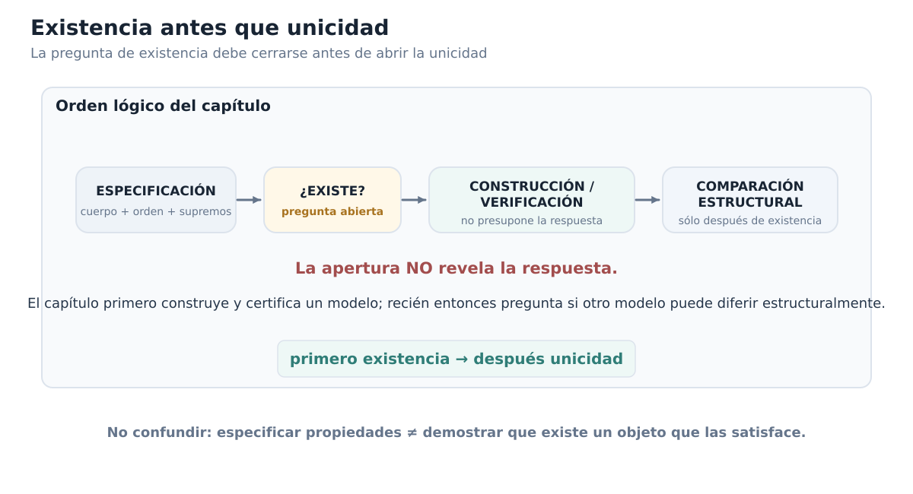
Enunciar condiciones no garantiza que exista un objeto que las satisfaga. Sería perfectamente posible exigir a un número que cumpliera a la vez \(x<0\) y \(x>1\); el enunciado se entiende, pero sus condiciones son incompatibles. Al describir un cuerpo ordenado completo aún no hemos demostrado que sus axiomas puedan cumplirse simultáneamente. La expresión «sea \(F\) un cuerpo ordenado completo» será legítima más adelante como hipótesis de un teorema, pero no puede utilizarse como respuesta a la pregunta de si tales cuerpos existen. Para responderla tendremos que exhibir un modelo concreto y verificar todas las propiedades que acabamos de formular.
Incluso entonces faltará distinguir existencia de unicidad. Podrían construirse dos sistemas cuyos elementos, considerados como conjuntos, no fueran iguales. Lo que habrá que comprobar es si sus estructuras están relacionadas por una correspondencia que preserve exactamente el orden y las operaciones. Ése es un problema posterior: la existencia nos permitirá hablar de los reales; la comparación de modelos explicará en qué sentido esa estructura es única.
Antes de seguir
Microcontrol 1
¿Por qué escribir una lista de axiomas para un cuerpo ordenado completo no demuestra, por sí solo, que exista uno?
Ver solución del microcontrol 1
Una lista de axiomas indica qué tendría que cumplir un objeto, pero puede no tener ningún modelo. Para demostrar existencia hay que construir un candidato y verificar todas las condiciones en él. Por ejemplo, exigir a la vez \(0=1\) y \(0\ne1\) no produce una estructura: produce condiciones incompatibles. El trabajo del capítulo será exhibir una estructura que sí realice la especificación de cuerpo ordenado completo.
Microcontrol 2
¿Qué parte de la especificación pertenece al álgebra, cuál al orden y cuál a la completitud?
Ver solución del microcontrol 2
Se requieren operaciones que hagan de \(F\) un cuerpo, un orden lineal compatible con ellas y la propiedad del supremo. La compatibilidad exige que sumar la misma cantidad conserve las desigualdades y que el producto de no negativos sea no negativo. La completitud pide un supremo en \(F\) para cada subconjunto no vacío acotado superiormente. Los racionales cumplen las condiciones algebraicas y de orden, pero permiten ver por qué la última es una exigencia adicional.
Microcontrol 3
Si \(A\subseteq F\) tiene una cota superior, ¿qué condición adicional debe satisfacer una cota \(s\) para ser \(\sup A\)?
Ver solución del microcontrol 3
Además de \(a\le s\) para todo \(a\in A\), debe cumplirse \(s\le u\) para toda cota superior \(u\) de \(A\). Esa segunda obligación hace que \(s\) sea la menor cota superior. No exige \(s\in A\): el conjunto racional \(\{q:q<1\}\) tiene supremo uno, que queda fuera del conjunto.
Microcontrol 4
¿En qué se diferencian las afirmaciones «\(A\) está acotado superiormente» y «\(A\) tiene supremo en \(F\)»?
Ver solución del microcontrol 4
Una cota superior sólo impone \(a\le u\) para todo \(a\in A\). Para tener supremo hace falta que entre las cotas superiores exista una menor, perteneciente al sistema donde se compara. El conjunto \(S_2\) estudiado en §0.3 tendrá cotas racionales, pero ninguna será la menor de ellas. La completitud excluye esa pérdida para subconjuntos no vacíos acotados superiormente.
Microcontrol 5
¿Por qué la frase «\(\mathbb Q\) está contenido en \(F\)» necesitará una explicación estructural y no sólo una notación de inclusión?
Ver solución del microcontrol 5
Se necesita una aplicación inyectiva \(\iota:\mathbb Q\to F\) que conserve suma, producto, cero, uno y orden. La inclusión literal es \(\iota(\mathbb Q)\subseteq F\). Una vez verificada la estructura, identificar cada racional con su imagen permite abreviar \(\mathbb Q\subseteq F\). La abreviatura debe conservar la aritmética racional, además de distinguir sus elementos.
Microcontrol 6
Si algún día construimos dos candidatos \(F\) y \(G\), ¿por qué no sería razonable exigir desde el comienzo que sean literalmente el mismo conjunto?
Ver solución del microcontrol 6
Dos construcciones pueden tener conjuntos subyacentes distintos y realizar la misma estructura. La comparación pertinente será una biyección que preserve las operaciones y el orden. Al comienzo del capítulo todavía hay que construir un modelo; después se demostrará que entre cualesquiera dos cuerpos ordenados completos existe un único isomorfismo de cuerpos ordenados. Esa conclusión no obliga a que sus elementos sean literalmente los mismos objetos conjuntistas.
La sección siguiente se ocupará de la quinta pregunta. Antes de decidir cómo construir un sistema nuevo, necesitamos comprender con precisión qué significa extender un sistema numérico sin destruir la estructura que ya posee. Ese análisis nos llevará desde \(\mathbb N\) hasta \(\mathbb Q\) y dejará preparado el lenguaje con el que, más adelante, podremos preguntar qué significa que los racionales estén incorporados en un sistema mayor.
Ejercicios de la sección 0.1
Ejercicio 1. Auditar una especificación antes de usarla
Sea \(F\) un candidato desconocido equipado con dos operaciones y una relación de orden. Considera las cuatro expresiones siguientes, donde \(A\subseteq F\):
- \(A\le u\).
- Para todo \(x\in F\) existe \(y\in F\) tal que \(xy=1\).
- Si \(A\ne\varnothing\) y existe \(u\in F\) tal que \(a\le u\) para todo \(a\in A\), entonces existe \(s\in F\) que es menor o igual que toda cota superior de \(A\) y que, a la vez, satisface \(a\le s\) para todo \(a\in A\).
- \(\sup A\in A\).
Para cada expresión, decide cuál de las siguientes descripciones es la más adecuada:
- está mal tipada o mal cuantificada y necesita reparación;
- está bien formada, pero afirma más de lo que exige la especificación de un cuerpo ordenado completo;
- expresa correctamente una parte de la especificación.
Reescribe correctamente las expresiones 1 y 2. En la expresión 4 no supongas que el supremo deba pertenecer al conjunto sólo porque exista.
Ver solución del ejercicio 1
La expresión \(A\le u\) aplica una relación entre elementos de \(F\) a un conjunto y un elemento. Debe sustituirse por \(\forall a\in A:\ a\le u\), que expresa que \(u\) es cota superior. La segunda afirmación debe excluir cero: \(\forall x\in F\setminus\{0\}\;\exists y\in F:\ xy=1\). En un cuerpo, \(0y=0\ne1\) para todo \(y\).
La tercera expresión formula correctamente la propiedad del supremo. Bajo no vaciedad y acotación superior, pide \(s\in F\) con \(a\le s\) para todo \(a\in A\) y \(s\le v\) para toda cota superior \(v\). Son las dos obligaciones de una menor cota superior.
La cuarta, \(\sup A\in A\), sólo puede escribirse tras acreditar existencia del supremo y añade una exigencia que no pertenece a su definición. Si se cumple, el supremo es también máximo. Por ejemplo, \(\{q\in\mathbb Q:q<1\}\) tiene supremo racional uno, pero no lo contiene: si \(u<1\), el racional \((u+1)/2\) pertenece al conjunto y supera a \(u\). Así, las expresiones primera y segunda necesitan reparación, la tercera es correcta y la cuarta exige más de lo pedido.
Ejercicio 2. Una existencia demostrada suponiendo que ya existe
Un estudiante propone la siguiente demostración:
«Definimos los números reales como los elementos de un cuerpo ordenado completo. Sea entonces \(F\) un cuerpo ordenado completo. Por definición, \(F\) es un cuerpo, su orden es compatible con las operaciones y todo subconjunto no vacío acotado superiormente tiene supremo en \(F\). Por tanto, \(F\) cumple exactamente las propiedades pedidas. Luego existe al menos un cuerpo ordenado completo.»
Audita el argumento.
- Localiza la primera presuposición que impide que esto sea una prueba de existencia.
- Explica qué afirmación condicional sí sería legítimo deducir si se permitiera comenzar con «sea \(F\) un cuerpo ordenado completo».
- Explica qué clase de trabajo matemático faltaría para convertir la especificación en una auténtica prueba de existencia.
No construyas todavía ningún modelo concreto.
Ver solución del ejercicio 2
La primera presuposición aparece en «sea \(F\) un cuerpo ordenado completo»: ya se ha introducido un objeto cuya existencia es justamente la conclusión buscada. A partir de esa hipótesis es legítimo deducir sus leyes de cuerpo, compatibilidad del orden y propiedad del supremo. El argumento demuestra una afirmación condicional sobre una estructura supuesta, sin proporcionar un modelo.
Para demostrar existencia habría que construir un conjunto concreto sin atribuirle de antemano toda la estructura, definir sus operaciones y orden, verificar las leyes de cuerpo y su compatibilidad, y demostrar la propiedad del supremo. El objeto así verificado sería un testigo de \(\exists F\,(F\text{ es un cuerpo ordenado completo})\). Este ejercicio localiza el trabajo pendiente; todavía no necesita construir ese testigo.
Ejercicio 3. Qué tendría que certificar un modelo
Supón que una construcción futura entrega un objeto concreto \(M\) junto con operaciones \(+\), \(\cdot\) y una relación \(\le\). Un informe de verificación se divide en cuatro etapas:
- I. Construcción: \(M\) y sus operaciones están definidos como objetos matemáticos concretos.
- II. Álgebra: con esas operaciones, \(M\) satisface los axiomas de cuerpo.
- III. Orden: \(\le\) es un orden lineal compatible con la suma y el producto.
- IV. Completitud: todo subconjunto no vacío de \(M\) acotado superiormente posee un supremo en \(M\).
Responde:
- ¿Por qué la etapa I, por sí sola, no resuelve la pregunta de existencia planteada en §0.1?
- ¿Por qué las etapas I–III todavía no bastan?
- Explica por qué completar I–IV sí permite concluir que existe al menos un cuerpo ordenado completo.
- Si otra construcción produjera después un objeto \(N\) que también superara I–IV, ¿qué nueva pregunta quedaría abierta sin volver a poner en duda la existencia?
Tu respuesta debe separar con claridad construir, verificar y comparar estructuras.
Ver solución del ejercicio 3
La etapa I construye un candidato \(M\) con operaciones y relación, pero una fórmula para esos datos no garantiza las leyes que deben cumplir. Las etapas II y III prueban que \(M\) es un cuerpo ordenado. Las etapas II y III todavía no verifican la existencia de supremos. Esa exigencia forma parte de la especificación inicial y requiere la etapa IV.
La etapa IV acredita que cada subconjunto no vacío acotado superiormente posee supremo en \(M\). Junto con I–III, hace del candidato construido un cuerpo ordenado completo y proporciona un testigo de existencia.
Si otro objeto \(N\) superara las mismas verificaciones, existirían dos modelos de la especificación. La pregunta nueva sería si sus estructuras pueden compararse mediante un isomorfismo de cuerpos ordenados y si esa correspondencia es única. La construcción y verificación de \(M\) ya habría resuelto existencia; esa comparación necesita su propia prueba.
0.2. Extender sin perder estructura: de \(\mathbb N\) a \(\mathbb Q\)
Hay una exigencia que no podemos resolver añadiendo simplemente nuevos símbolos: la aritmética racional debe seguir funcionando en el sistema que construyamos. Ya conocemos dos ampliaciones numéricas que permiten entender lo que esto significa.
En los naturales, la ecuación \(x+3=1\) no tiene solución. Al pasar a los enteros aparece un elemento nuevo, \(-2\), que la resuelve. En los enteros, en cambio, la ecuación \(2x=1\) sigue sin solución; los racionales incorporan el elemento \(1/2\). En ambos casos ganamos la capacidad de resolver una clase de ecuaciones que antes quedaba fuera del sistema, pero conservamos las relaciones y los cálculos que ya eran válidos. El paso de un sistema al siguiente no puede convertir dos números antiguos distintos en uno solo, ni hacer que su suma anterior cambie de valor.
La formulación matemática de esa conservación es una incrustación estructural. Si \(A\) y \(B\) son sistemas dotados de operaciones y relaciones, una aplicación
\[ \iota:A\longrightarrow B \]
permite reconocer a \(A\) como una copia dentro de \(B\) cuando es inyectiva y conserva toda la estructura pertinente. Inyectividad significa que \(\iota(a)=\iota(b)\) obliga a \(a=b\): la representación no confunde objetos que antes podíamos distinguir. Si ambos sistemas poseen una suma, conservarla significa que los dos caminos disponibles, calcular primero y después trasladar o trasladar primero y después calcular, coinciden:
\[ \iota(a+b)=\iota(a)+\iota(b). \]
Las operaciones de la derecha se realizan en \(B\), mientras que la suma de la izquierda, antes de aplicar \(\iota\), se ha efectuado en \(A\). Por eso la igualdad contiene una afirmación matemática, aunque después utilicemos la misma notación para ambas operaciones.
En la ampliación de los naturales a los enteros disponemos de una aplicación canónica
\[ \iota_{\mathbb N\mathbb Z}:\mathbb N\hookrightarrow\mathbb Z. \]
Envía cada natural al entero correspondiente y conserva suma, producto, cero, unidad y orden. Para \(m,n\in\mathbb N\), en particular,
\[ \begin{aligned} \iota_{\mathbb N\mathbb Z}(m+n) &=\iota_{\mathbb N\mathbb Z}(m)+\iota_{\mathbb N\mathbb Z}(n),\\ \iota_{\mathbb N\mathbb Z}(mn) &=\iota_{\mathbb N\mathbb Z}(m)\,\iota_{\mathbb N\mathbb Z}(n),\\ m<n&\ \Longleftrightarrow\ \iota_{\mathbb N\mathbb Z}(m)<\iota_{\mathbb N\mathbb Z}(n). \end{aligned} \]
La existencia de enteros negativos amplía lo que podemos hacer con la resta, sin modificar estas igualdades. No tendría sentido describir la flecha como una incrustación de cuerpos: ni \(\mathbb N\) ni \(\mathbb Z\) son cuerpos. Las palabras con las que calificamos una incrustación deben corresponder a la estructura que existe realmente en su dominio.
Para incluir los enteros en los racionales utilizamos
\[ \iota_{\mathbb Z\mathbb Q}:\mathbb Z\hookrightarrow\mathbb Q, \qquad n\longmapsto\frac n1. \]
Aquí el dominio es un anillo ordenado. La aplicación conserva sus operaciones, el cero, la unidad y el orden. Es inyectiva, porque \(m/1=n/1\) implica \(m=n\). Así aparece en \(\mathbb Q\) una copia del anillo ordenado \(\mathbb Z\); la incorporación de cocientes no altera las sumas ni los productos de los enteros, y hace posible resolver \(2x=1\).
Al componer las dos incrustaciones obtenemos una representación fiel de los naturales entre los racionales:
\[ \mathbb N \overset{\iota_{\mathbb N\mathbb Z}}{\hookrightarrow} \mathbb Z \overset{\iota_{\mathbb Z\mathbb Q}}{\hookrightarrow} \mathbb Q. \]
Habitualmente sustituimos este diagrama por la escritura \(\mathbb N\subseteq\mathbb Z\subseteq\mathbb Q\). Es una convención muy útil, pero conviene saber sobre qué descansa. Una incrustación \(\iota:A\hookrightarrow B\) tiene una imagen \(\iota(A)\) que sí es, literalmente, un subconjunto de \(B\). Como \(\iota\) es inyectiva y conserva la estructura, podemos identificar cada elemento de \(A\) con su imagen; después de esa identificación escribimos \(A\subseteq B\) y dejamos de mostrar la aplicación. Si, por ejemplo, hemos construido enteros mediante clases de pares de naturales o racionales mediante clases de pares de enteros, las representaciones del número \(2\) en esos conjuntos no tienen por qué ser literalmente el mismo objeto conjuntista. Las incrustaciones permiten tratarlo como el mismo número para todo cálculo pertinente.
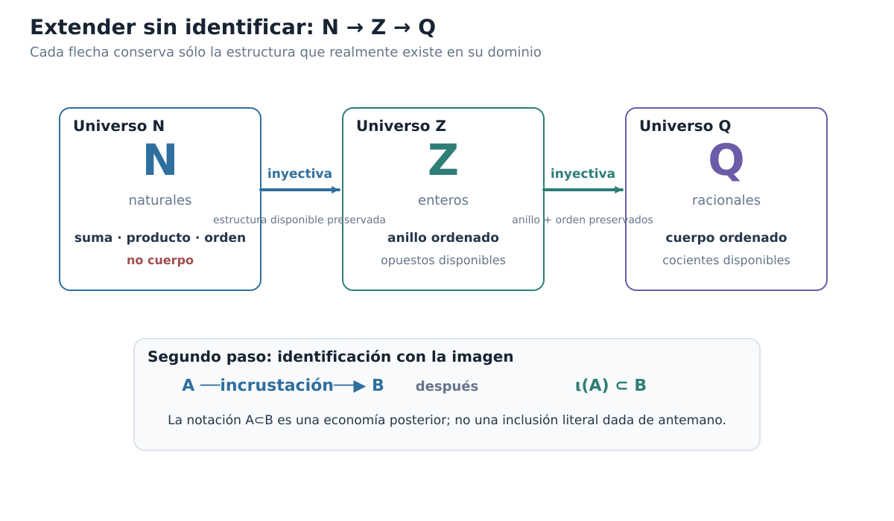
Conservar la aritmética de \(\mathbb Q\) exige construir una aplicación \(\iota_{\mathbb Q}:\mathbb Q\hookrightarrow F\) que preserve suma, producto, cero, unidad y orden, y que permita recuperar la aritmética racional dentro de \(F\). Por el momento no podemos exhibir esa aplicación, porque todavía no hemos construido el sistema de llegada. Sí podemos averiguar si hace falta construirlo: \(\mathbb Q\) ya es un cuerpo ordenado; sólo queda examinar si tiene la propiedad del supremo.
Antes de seguir
Microcontrol 7
¿Por qué la inyectividad es indispensable si queremos considerar a \(A\) como una copia dentro de \(B\)?
Ver solución del microcontrol 7
La inyectividad asegura que \(a\ne b\) implica \(\iota(a)\ne\iota(b)\). Si dos elementos distintos tuvieran la misma imagen, esa imagen no permitiría distinguirlos ni recuperar el elemento original. Por eso preservar operaciones y relaciones debe acompañarse de inyectividad para obtener una copia fiel. En particular, la igualdad de imágenes sólo autoriza concluir igualdad de sus preimágenes cuando esa propiedad está acreditada.
Microcontrol 8
¿Qué significa que una incrustación conserve la suma? Explica la igualdad \(\iota(a+b)=\iota(a)+\iota(b)\) como dos caminos que deben dar el mismo resultado.
Ver solución del microcontrol 8
La igualdad
\[ \iota(a+b)=\iota(a)+\iota(b) \]
dice que podemos proceder de dos maneras sin cambiar el resultado.
- Calcular primero en \(A\): formar \(a+b\) y luego transportarlo mediante \(\iota\).
- Transportar primero a \(B\): tomar \(\iota(a)\) y \(\iota(b)\) y sumarlos usando la suma de \(B\).
La condición de preservación afirma que ambos caminos terminan en el mismo elemento de \(B\). Así, la suma antigua no cambia al pasar al sistema mayor.
Microcontrol 9
¿Qué nueva clase de ecuaciones puede resolverse al pasar de \(\mathbb N\) a \(\mathbb Z\)? ¿Y al pasar de \(\mathbb Z\) a \(\mathbb Q\)?
Ver solución del microcontrol 9
Al pasar de \(\mathbb N\) a \(\mathbb Z\) aparecen los opuestos aditivos, de modo que se pueden resolver ecuaciones que exigen una diferencia negativa. Por ejemplo,
\[ x+3=1 \]
no tiene solución en \(\mathbb N\), pero en \(\mathbb Z\) tiene la solución
\[ x=-2. \]
Al pasar de \(\mathbb Z\) a \(\mathbb Q\) aparecen los cocientes necesarios para divisiones que no se resuelven enteramente. Por ejemplo,
\[ 2x=1 \]
no tiene solución en \(\mathbb Z\), pero en \(\mathbb Q\) tiene
\[ x=\frac12. \]
Cada ampliación añade soluciones nuevas sin borrar la aritmética que ya estaba disponible.
Microcontrol 10
¿Por qué es incorrecto llamar «incrustación de cuerpos» a la flecha \(\mathbb N\hookrightarrow\mathbb Z\)?
Ver solución del microcontrol 10
Porque ni \(\mathbb N\) ni \(\mathbb Z\) son cuerpos. En \(\mathbb N\) ni siquiera todos los elementos poseen opuesto aditivo dentro del sistema, y en \(\mathbb Z\) un entero no nulo como \(2\) no tiene inverso multiplicativo entero.
La flecha
\[ \mathbb N\hookrightarrow\mathbb Z \]
sí es una incrustación de la estructura disponible en \(\mathbb N\): preserva suma, producto, orden y los elementos distinguidos pertinentes. Lo incorrecto es atribuir al dominio y al codominio una estructura de cuerpo que no poseen.
Microcontrol 11
Explica la diferencia entre \(A\hookrightarrow B\), \(\iota(A)\subseteq B\) y la convención de escribir \(A\subseteq B\) después de identificar \(A\) con \(\iota(A)\).
Ver solución del microcontrol 11
Primero se construye una incrustación \(\iota:A\to B\): una aplicación inyectiva que conserva la estructura pertinente. Su imagen \(\iota(A)\) sí es un subconjunto literal de \(B\). La identificación posterior de \(A\) con esa imagen permite escribir \(A\subseteq B\) por convenio. En una representación por fracciones, por ejemplo, la imagen de un entero es el racional correspondiente a \(n/1\); la notación abreviada descansa en esa correspondencia estructural.
Microcontrol 12
¿Qué propiedades tendría que conservar una futura copia de \(\mathbb Q\) dentro de un sistema candidato para que pudiéramos decir que éste prolonga la aritmética racional?
Ver solución del microcontrol 12
Como \(\mathbb Q\) es ya un cuerpo ordenado, una futura incrustación
\[ \iota_{\mathbb Q}:\mathbb Q\longrightarrow F \]
debe ser inyectiva y conservar la estructura racional pertinente. En particular, para \(p,q\in\mathbb Q\), deberá satisfacer
\[ \iota_{\mathbb Q}(p+q) = \iota_{\mathbb Q}(p)+\iota_{\mathbb Q}(q), \]
\[ \iota_{\mathbb Q}(pq) = \iota_{\mathbb Q}(p)\,\iota_{\mathbb Q}(q), \]
\[ \iota_{\mathbb Q}(0)=0, \qquad \iota_{\mathbb Q}(1)=1, \]
y deberá preservar y reflejar el orden:
\[ p<q \quad\Longleftrightarrow\quad \iota_{\mathbb Q}(p)<\iota_{\mathbb Q}(q). \]
Sólo después de verificar esa copia estructural estará justificada la economía notacional de escribir \(\mathbb Q\subseteq F\).
Ya estamos en condiciones de hacer la primera prueba real del capítulo. No construiremos todavía un sistema nuevo. Antes examinaremos si el último sistema disponible, \(\mathbb Q\), satisface la especificación completa. La próxima sección localizará con precisión el punto en que falla.
Ejercicios de la sección 0.2
Ejercicio 4. Qué significa realmente cada flecha
Considera la cadena
\[ \mathbb N \xhookrightarrow{\ \iota_{\mathbb N\mathbb Z}\ } \mathbb Z \xhookrightarrow{\ \iota_{\mathbb Z\mathbb Q}\ } \mathbb Q. \]
Un informe preliminar describe ambas flechas diciendo simplemente:
«Son inclusiones de cuerpos que conservan toda la estructura».
Repara esa descripción.
- Para la flecha \(\mathbb N\to\mathbb Z\), enumera qué datos de la estructura disponible en \(\mathbb N\) deben preservarse según §0.2.
- Para la flecha \(\mathbb Z\to\mathbb Q\), enumera qué datos adicionales están disponibles en el dominio y deben preservarse.
- Explica por qué no está autorizado llamar «inclusión literal» a ninguna de las dos flechas antes de identificar el dominio con su imagen.
- Explica por qué la expresión «inclusiones de cuerpos» está mal tipada para la cadena completa.
El objetivo es producir una descripción estructuralmente correcta, no sólo corregir vocabulario.
Ver solución del ejercicio 4
La frase «inclusiones de cuerpos que conservan toda la estructura» falla por dos razones distintas: atribuye a los dominios más estructura de la que tienen y transforma demasiado pronto una incrustación en una inclusión literal.
Para
\[ \iota_{\mathbb N\mathbb Z}:\mathbb N\longrightarrow\mathbb Z, \]
la sección exige conservar la estructura que ya está disponible en \(\mathbb N\). En particular:
\[ \iota_{\mathbb N\mathbb Z}(m+n) = \iota_{\mathbb N\mathbb Z}(m)+\iota_{\mathbb N\mathbb Z}(n), \]
\[ \iota_{\mathbb N\mathbb Z}(mn) = \iota_{\mathbb N\mathbb Z}(m)\, \iota_{\mathbb N\mathbb Z}(n), \]
y
\[ m<n \iff \iota_{\mathbb N\mathbb Z}(m) < \iota_{\mathbb N\mathbb Z}(n). \]
Además, los elementos distinguidos \(0\) y \(1\) se transportan a los correspondientes \(0\) y \(1\) de \(\mathbb Z\). La aplicación debe ser inyectiva para que números naturales distintos no se colapsen.
En cambio, para
\[ \iota_{\mathbb Z\mathbb Q}:\mathbb Z\longrightarrow\mathbb Q, \]
el dominio ya tiene estructura de anillo ordenado. Por eso deben conservarse suma, producto, \(0\), \(1\) y orden, además de la inyectividad.
No es correcto comenzar diciendo que las flechas son inclusiones literales. Lo que tenemos primero es una aplicación inyectiva que preserva la estructura pertinente. Su imagen
\[ \iota(A)\subseteq B \]
sí es literalmente un subconjunto del codominio. Sólo después de verificar que \(A\) y \(\iota(A)\) son copias estructurales podemos adoptar la convención de identificar ambos y escribir
\[ A\subseteq B. \]
Finalmente, la expresión «inclusiones de cuerpos» está mal tipada porque ni \(\mathbb N\) ni \(\mathbb Z\) son cuerpos. La descripción correcta es, esquemáticamente,
\[ \boxed{ \mathbb N \hookrightarrow \mathbb Z \hookrightarrow \mathbb Q } \]
donde cada flecha preserva exactamente la estructura disponible en su dominio; en particular, la segunda puede describirse como una incrustación de anillos ordenados.
Ejercicio 5. Construir la flecha directa de \(\mathbb N\) a \(\mathbb Q\)
Usa únicamente las dos incrustaciones canónicas de §0.2 para construir una aplicación
\[ \iota_{\mathbb N\mathbb Q}:\mathbb N\longrightarrow\mathbb Q. \]
- Defínela como composición de las dos flechas conocidas.
- Escribe explícitamente las imágenes de \(0,1,2,3\).
- Muestra que, para \(m,n\in\mathbb N\),
\[ \iota_{\mathbb N\mathbb Q}(m+n) = \iota_{\mathbb N\mathbb Q}(m) + \iota_{\mathbb N\mathbb Q}(n), \]
y
\[ \iota_{\mathbb N\mathbb Q}(mn) = \iota_{\mathbb N\mathbb Q}(m)\, \iota_{\mathbb N\mathbb Q}(n). \]
- Explica por qué la aplicación es inyectiva y por qué conserva el orden.
- Indica qué identificación notacional permite, después de estas verificaciones, escribir cómodamente \(\mathbb N\subseteq\mathbb Q\).
No uses inclusión literal como punto de partida: debe aparecer sólo al final como convención sustentada por la construcción.
Ver solución del ejercicio 5
Definimos
\[ \iota_{\mathbb N\mathbb Q} = \iota_{\mathbb Z\mathbb Q} \circ \iota_{\mathbb N\mathbb Z}. \]
Bajo las representaciones canónicas de §0.2,
\[ \iota_{\mathbb N\mathbb Z}(n)=n \]
como entero correspondiente, y luego
\[ \iota_{\mathbb Z\mathbb Q}(n)=\frac n1. \]
Por tanto,
\[ \boxed{ \iota_{\mathbb N\mathbb Q}(n)=\frac n1. } \]
En particular,
\[ 0\mapsto\frac01, \qquad 1\mapsto\frac11, \qquad 2\mapsto\frac21, \qquad 3\mapsto\frac31. \]
Para la suma,
\[ \begin{aligned} \iota_{\mathbb N\mathbb Q}(m+n) &= \iota_{\mathbb Z\mathbb Q} \bigl( \iota_{\mathbb N\mathbb Z}(m+n) \bigr)\\ &= \iota_{\mathbb Z\mathbb Q} \bigl( \iota_{\mathbb N\mathbb Z}(m) + \iota_{\mathbb N\mathbb Z}(n) \bigr)\\ &= \iota_{\mathbb N\mathbb Q}(m) + \iota_{\mathbb N\mathbb Q}(n). \end{aligned} \]
El mismo razonamiento produce
\[ \iota_{\mathbb N\mathbb Q}(mn) = \iota_{\mathbb N\mathbb Q}(m)\, \iota_{\mathbb N\mathbb Q}(n). \]
La composición de dos aplicaciones inyectivas es inyectiva: si
\[ \iota_{\mathbb N\mathbb Q}(m) = \iota_{\mathbb N\mathbb Q}(n), \]
la inyectividad de \(\iota_{\mathbb Z\mathbb Q}\) permite concluir
\[ \iota_{\mathbb N\mathbb Z}(m) = \iota_{\mathbb N\mathbb Z}(n), \]
y luego la inyectividad de \(\iota_{\mathbb N\mathbb Z}\) da \(m=n\).
Para el orden, si \(m<n\), la primera incrustación produce
\[ \iota_{\mathbb N\mathbb Z}(m) < \iota_{\mathbb N\mathbb Z}(n), \]
y la segunda conserva esa relación, de modo que
\[ \iota_{\mathbb N\mathbb Q}(m) < \iota_{\mathbb N\mathbb Q}(n). \]
La reflexión del orden se obtiene recorriendo las equivalencias en sentido contrario.
Después de estas verificaciones, identificamos \(\mathbb N\) con la imagen
\[ \iota_{\mathbb N\mathbb Q}(\mathbb N) = \left\{ \frac n1:n\in\mathbb N \right\} \subseteq\mathbb Q. \]
Sólo entonces la escritura
\[ \mathbb N\subseteq\mathbb Q \]
funciona como una economía notacional sustentada por la incrustación.
Ejercicio 6. La composición de incrustaciones vuelve a ser una incrustación
Sean \(A,B,C\) sistemas ordenados con suma y producto, y supón que
\[ \iota:A\hookrightarrow B, \qquad \kappa:B\hookrightarrow C \]
son aplicaciones inyectivas que conservan suma, producto y orden en el sentido de
\[ a<a' \iff \iota(a)<\iota(a'), \]
y análogamente para \(\kappa\).
Demuestra que la composición
\[ \kappa\circ\iota:A\longrightarrow C \]
también es una incrustación al mismo nivel estructural.
Tu prueba debe verificar por separado:
- inyectividad;
- preservación de la suma;
- preservación del producto;
- preservación y reflexión del orden.
Concluye explicando por qué este resultado justifica leer la cadena
\[ \mathbb N\hookrightarrow\mathbb Z\hookrightarrow\mathbb Q \]
también como una vía estructural directa de \(\mathbb N\) hacia \(\mathbb Q\).
Ver solución del ejercicio 6
Sea
\[ \lambda=\kappa\circ\iota. \]
Primero probemos que \(\lambda\) es inyectiva. Supongamos que
\[ \lambda(a)=\lambda(a'). \]
Entonces
\[ \kappa(\iota(a)) = \kappa(\iota(a')). \]
Como \(\kappa\) es inyectiva,
\[ \iota(a)=\iota(a'). \]
Y como \(\iota\) también es inyectiva,
\[ a=a'. \]
Para la suma,
\[ \begin{aligned} \lambda(a+a') &= \kappa(\iota(a+a'))\\ &= \kappa(\iota(a)+\iota(a'))\\ &= \kappa(\iota(a)) + \kappa(\iota(a'))\\ &= \lambda(a)+\lambda(a'). \end{aligned} \]
Análogamente,
\[ \begin{aligned} \lambda(aa') &= \kappa(\iota(aa'))\\ &= \kappa(\iota(a)\iota(a'))\\ &= \kappa(\iota(a)) \kappa(\iota(a'))\\ &= \lambda(a)\lambda(a'). \end{aligned} \]
Para el orden, encadenamos las equivalencias:
\[ a<a' \iff \iota(a)<\iota(a') \iff \kappa(\iota(a)) < \kappa(\iota(a')). \]
Es decir,
\[ a<a' \iff \lambda(a)<\lambda(a'). \]
Por tanto, \(\lambda\) es inyectiva, conserva suma y producto y preserva y refleja el orden. Es una incrustación al mismo nivel estructural.
Aplicado a
\[ \mathbb N \hookrightarrow \mathbb Z \hookrightarrow \mathbb Q, \]
el resultado muestra que las dos flechas canónicas determinan una incrustación compuesta
\[ \mathbb N\hookrightarrow\mathbb Q. \]
La cadena no es sólo una sucesión de inclusiones visuales: las compatibilidades estructurales se transmiten a través de la composición.
Ejercicio 7. Una aplicación inyectiva no basta
Un estudiante propone
\[ f:\mathbb Z\longrightarrow\mathbb Q, \qquad f(n)=2n, \]
y afirma:
«Como \(f\) es inyectiva y conserva el orden, podemos usarla para identificar \(\mathbb Z\) con una copia de sí misma dentro de \(\mathbb Q\) exactamente del mismo modo que con la incrustación canónica».
Audita la afirmación.
- Comprueba que \(f\) es inyectiva.
- Determina si conserva el orden.
- Determina si conserva la suma.
- Comprueba qué ocurre con \(1\) y con el producto.
- Decide con precisión qué parte de la estructura de \(\mathbb Z\) sí transporta fielmente \(f\) y por qué no sirve como la incrustación de anillos ordenados requerida en §0.2.
- Explica qué error conceptual cometeríamos si, a partir de la mera inyectividad, escribiéramos sin más \(\mathbb Z\subseteq\mathbb Q\) identificando \(n\) con \(2n\).
Ver solución del ejercicio 7
La aplicación \(f(n)=2n\) es inyectiva: \(2m=2n\) implica \(m=n\). También preserva y refleja el orden, porque \(m<n\) equivale a \(2m<2n\), y conserva la suma: \(f(m+n)=2m+2n=f(m)+f(n)\). Por tanto transporta fielmente el grupo aditivo ordenado de los enteros a su imagen.
La unidad no se conserva, pues \(f(1)=2\ne1\). Tampoco el producto: \(f(mn)=2mn\), mientras \(f(m)f(n)=4mn\). Basta \(m=n=1\) para obtener dos y cuatro. La igualdad puede darse para algunos pares, como los que tienen un factor cero, pero la preservación requerida es universal.
Así no es la incrustación de anillos ordenados que preserva la aritmética entera dentro de \(\mathbb Q\). Identificar \(n\) con \(2n\) usando las operaciones ambientales conservaría suma y orden, pero cambiaría unidad y producto. La copia debe declararse respecto de la estructura que realmente conserva.
0.3. El obstáculo: \(\mathbb Q\) no está completo
Regresemos a las aproximaciones al cuadrado de \(2\). Nos gustaría reunir todos los racionales no negativos cuyo cuadrado es todavía menor que \(2\) y preguntar dónde termina ese conjunto. Podemos formular la pregunta sin suponer que exista un número real con cuadrado igual a \(2\). Todo ocurre, de momento, dentro de los racionales:
\[ S_2=\{q\in\mathbb Q:q\ge0,\ q^2<2\}. \]
Si queremos utilizar \(S_2\) para poner a prueba la completitud de \(\mathbb Q\), primero debemos comprobar las hipótesis de la propiedad del supremo. El conjunto no es vacío, porque \(1\in S_2\). También está acotado superiormente: si \(q\in S_2\) y tuviéramos \(q\ge2\), se seguiría \(q^2\ge4>2\), una contradicción. Por tanto \(2\) es una cota superior de \(S_2\), de hecho todos sus elementos son menores que \(2\).
Supongamos que existiera un racional \(s=\sup_{\mathbb Q}S_2\). Puesto que \(1\in S_2\) y \(2\) es una cota superior, debería cumplir \(1\le s\le2\). En particular, \(s>0\), de modo que podemos comparar \(s^2\) con \(2\) y dividir por expresiones positivas que contengan \(s\). Hay tres posibilidades, y examinarlas permite descubrir qué debería fallar en cualquier candidato racional.
Si \(s^2<2\), el candidato se encuentra todavía del lado permitido por la definición de \(S_2\). Para demostrar que no es una cota superior necesitamos avanzar un poco hacia la derecha sin salir del conjunto. ¿Cuánto podemos avanzar? La diferencia \(2-s^2\) mide el margen positivo disponible entre el cuadrado actual y el valor que no queremos alcanzar. Al sustituir \(s\) por \(s+\delta\), el cuadrado aumenta en \(2s\delta+\delta^2\); por eso debemos escoger \(\delta\) suficientemente pequeño para que ese incremento no consuma todo el margen. Una elección racional conveniente es
\[ \delta=\frac{2-s^2}{2s+2}. \]
Como \(1\le s\) y \(s^2<2\), tenemos \(0<\delta<1\). Esta cota permite utilizar \(\delta^2<\delta\) y calcular
\[ \begin{aligned} (s+\delta)^2 &=s^2+2s\delta+\delta^2\\ &<s^2+(2s+1)\delta\\ &=2-\frac{2-s^2}{2s+2}<2. \end{aligned} \]
Por tanto \(s+\delta\) es racional, es positivo y pertenece a \(S_2\), aunque \(s+\delta>s\). Hemos encontrado un miembro del conjunto situado por encima de su supuesta cota superior: una contradicción. La elección de \(\delta\) procede del incremento del cuadrado: su denominador deja un margen que las dos desigualdades del cálculo conservan estrictamente positivo.
Cuando \(s^2>2\), la condición que debemos poner a prueba es la minimalidad. Un desplazamiento hacia la izquierda que conserve el cuadrado por encima de dos proporcionaría otra cota superior menor; para construirlo tomemos
\[ \delta=\frac{s^2-2}{4s}, \qquad t=s-\delta. \]
La cantidad \(\delta\) es racional y positiva. Además \(\delta<s\), pues \(s^2-2<4s^2\) para \(s>0\); por ello \(t>0\). Nos interesa que el cuadrado de \(t\) permanezca por encima de \(2\), y la elección permite verificarlo sin aproximaciones:
\[ \begin{aligned} t^2 &=s^2-2s\delta+\delta^2\\ &>s^2-2s\delta\\ &=\frac{s^2+2}{2}>2. \end{aligned} \]
Ningún \(q\in S_2\) puede satisfacer \(q\ge t\), porque ambos números serían no negativos y entonces \(q^2\ge t^2>2\), contra la definición de \(S_2\). Todos los elementos del conjunto son, pues, menores que \(t\). Así \(t\) es otra cota superior racional, pero \(t<s\), lo que contradice la condición de que \(s\) fuera la menor.
Queda la posibilidad \(s^2=2\). Aquí basta la aritmética entera. Si un racional escrito en términos mínimos como \(s=m/n\), con \(m,n\in\mathbb Z\) y \(n>0\), satisficiera esa igualdad, obtendríamos \(m^2=2n^2\). El cuadrado de un entero impar es impar; por tanto, \(m\) tendría que ser par, digamos \(m=2k\). Sustituyendo, se sigue \(n^2=2k^2\), de donde \(n\) también es par. Esto contradice que la fracción \(m/n\) se haya escrito en términos mínimos. Ningún racional tiene cuadrado igual a \(2\).
Hemos descartado las tres posibilidades. Si el supuesto supremo tuviera cuadrado menor que \(2\), no sería cota superior; si su cuadrado fuera mayor que \(2\), no sería la menor cota superior; y la igualdad no puede darse en \(\mathbb Q\). Como \(S_2\) es no vacío y está acotado superiormente, concluimos que
\[ \boxed{S_2\text{ no tiene supremo en }\mathbb Q.} \]
En consecuencia, \(\mathbb Q\) no tiene la propiedad del supremo. Obsérvese que para alcanzar esta conclusión no bastaba con demostrar que no hay racional cuyo cuadrado sea \(2\): había que justificar también por qué el supremo, si existiera, estaría obligado a satisfacer esa igualdad. Los dos argumentos de perturbación cumplen precisamente esa función.
El resultado tampoco contradice la densidad de los racionales. Entre cualesquiera \(p<q\) de \(\mathbb Q\) hay un racional intermedio, por ejemplo \((p+q)/2\). Esa propiedad habla de lo que ocurre entre dos números que ya están en el sistema. La propiedad del supremo exige algo más: que todo conjunto no vacío y acotado superiormente posea dentro del propio sistema la mejor de sus cotas superiores. Puede haber tantos racionales como queramos entre dos posiciones y faltar, aun así, la frontera requerida por un conjunto entero.
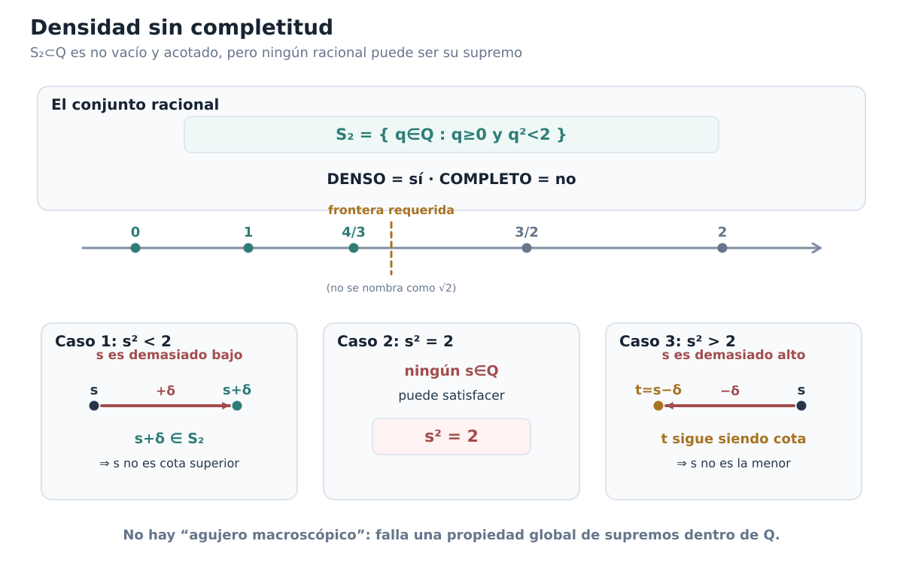
2 se encuentra una cota superior menor.">La frontera de \(S_2\) falta en un sistema que ya dispone de suma, producto y orden. Podemos intentar prolongar esas estructuras conservando la información que sí tenemos: cuáles son los racionales situados a la izquierda de la frontera buscada. Describir una posición por ese conjunto permitirá construirla sin suponer de antemano el número que debería ocuparla.
Antes de seguir
Microcontrol 13
Verifica directamente que \(1\in S_2\) y que \(2\) es una cota superior de \(S_2\) en \(\mathbb Q\).
Ver solución del microcontrol 13
Por definición,
\[ S_2=\{q\in\mathbb Q:q\ge 0,\ q^2<2\}. \]
Para comprobar que no es vacío basta exhibir un elemento. Como
\[ 1\ge0, \qquad 1^2=1<2, \]
tenemos
\[ 1\in S_2. \]
Ahora veamos que \(2\) es una cota superior. Si \(q\in S_2\) y suponemos \(q\ge2\), entonces \(q\ge0\) y por monotonía del cuadrado en los no negativos,
\[ q^2\ge4>2, \]
contradiciendo \(q^2<2\). Luego todo \(q\in S_2\) satisface \(q<2\), y en particular \(q\le2\). Por tanto,
\[ \boxed{S_2\ne\varnothing\quad\text{y}\quad 2\text{ es una cota superior de }S_2.} \]
Microcontrol 14
¿Por qué no basta con demostrar que ningún racional satisface \(s^2=2\) para concluir inmediatamente que \(S_2\) no tiene supremo racional? ¿Qué aportan los dos argumentos de perturbación?
Ver solución del microcontrol 14
Demostrar que ningún racional satisface \(s^2=2\) descarta sólo una de las tres posibilidades para un supuesto supremo racional \(s\):
\[ s^2<2, \qquad s^2=2, \qquad s^2>2. \]
Pero la definición de supremo no exige, por sí sola, que \(s^2=2\). Para excluir realmente la existencia de \(s=\sup_{\mathbb Q}S_2\) hay que mostrar también que los otros dos casos contradicen alguna propiedad esencial del supremo.
- Si \(s^2<2\), la perturbación hacia la derecha produce un racional \(s+\delta>s\) que aún pertenece a \(S_2\).
- Si \(s^2>2\), la perturbación hacia la izquierda produce una cota superior racional \(t=s-\delta<s\).
Los dos argumentos de perturbación son, por tanto, los que enlazan la aritmética de \(s^2\) con las dos condiciones definitorias del supremo: ser cota superior y ser la menor cota superior.
Microcontrol 15
En el caso \(s^2<2\), identifica exactamente qué propiedad del supuesto supremo contradice el racional \(s+\delta\).
Ver solución del microcontrol 15
En ese caso se construye un racional \(\delta>0\) tal que
\[ s+\delta>s \]
y, al mismo tiempo,
\[ (s+\delta)^2<2. \]
Como \(s+\delta>0\), se sigue que
\[ s+\delta\in S_2. \]
Esto contradice la primera obligación de un supremo: ser una cota superior del conjunto. En efecto, si \(s\) fuera cota superior, ningún elemento de \(S_2\) podría ser estrictamente mayor que \(s\).
Así, el caso \(s^2<2\) falla porque
\[ \boxed{s\text{ no puede ser cota superior de }S_2.} \]
Microcontrol 16
En el caso \(s^2>2\), identifica exactamente qué propiedad del supuesto supremo contradice el racional \(t=s-\delta\).
Ver solución del microcontrol 16
En este caso se construye un racional positivo
\[ t=s-\delta<s \]
con
\[ t^2>2. \]
Si \(q\in S_2\) y ocurriera \(q\ge t\), entonces, como \(q,t\ge0\),
\[ q^2\ge t^2>2, \]
contradiciendo \(q^2<2\). Por tanto todo \(q\in S_2\) satisface \(q<t\), de modo que \(t\) es también una cota superior de \(S_2\).
Pero \(t<s\). Esto contradice la segunda obligación del supremo: ser la menor de todas las cotas superiores.
Por eso el caso \(s^2>2\) falla porque
\[ \boxed{s\text{ no puede ser la menor cota superior de }S_2.} \]
Microcontrol 17
Explica con tus palabras la diferencia lógica entre densidad y completitud.
Ver solución del microcontrol 17
Densidad dice que entre dos racionales \(p<q\) hay otro, como \((p+q)/2\). Completitud exige que cada subconjunto no vacío acotado superiormente tenga una menor cota superior dentro del sistema. La primera propiedad habla de intervalos cuyos extremos ya existen; la segunda puede exigir un elemento que todavía falta. \(\mathbb Q\) es denso, pero \(S_2\) no tiene supremo racional, como prueban los tres casos para un candidato.
Microcontrol 18
¿Por qué esta demostración no necesita suponer de antemano la existencia de un número real cuyo cuadrado sea \(2\)?
Ver solución del microcontrol 18
El conjunto
\[ S_2=\{q\in\mathbb Q:q\ge0,\ q^2<2\} \]
se define usando únicamente racionales, su orden y su multiplicación. La demostración trabaja siempre con elementos racionales: un supuesto \(s\in\mathbb Q\), las perturbaciones racionales \(s+\delta\) y \(s-\delta\), y el argumento elemental de que ningún cociente de enteros en términos mínimos puede tener cuadrado igual a \(2\).
Por tanto no necesitamos introducir antes un objeto llamado \(\sqrt2\) ni suponer que exista en algún sistema mayor. La conclusión obtenida es más elemental y precisamente constructiva para el argumento del capítulo:
\[ \boxed{S_2\text{ es no vacío y acotado superiormente, pero no tiene supremo en }\mathbb Q.} \]
Sólo después de localizar esta falla queda justificada la búsqueda de una ampliación que añada la frontera ausente sin perder la estructura racional.
Hemos llegado al punto en que la necesidad de una construcción ya no es una intuición. Es una consecuencia demostrada: el último sistema de nuestra cadena disponible, \(\mathbb Q\), posee la aritmética y el orden que queremos conservar, pero no la completitud que necesitamos añadir. El siguiente paso será diseñar una manera de representar una frontera ausente sin usar todavía el punto que falta.
Ejercicios de la sección 0.3
Ejercicio 8. Construir un racional que escape por la derecha
Trabaja únicamente en \(\mathbb Q\) y considera
\[ S_2=\{q\in\mathbb Q:q\ge0,\ q^2<2\}. \]
- Verifica que \(S_2\) es no vacío y que \(2\) es una cota superior racional.
- Sea \(s\in\mathbb Q\) tal que \(1\le s\) y \(s^2<2\). Define
\[ \delta=\frac{2-s^2}{4s+4}. \]
Demuestra que \(\delta\in\mathbb Q\), que \(0<\delta<1\) y que
\[ u=s+\delta \]
satisface \(u>s\) y \(u\in S_2\). 3. Explica qué propiedad impediría que un racional \(s\) con \(s^2<2\) fuera una cota superior de \(S_2\).
La construcción debe justificarse mediante desigualdades racionales; no introduzcas \(\sqrt2\) ni ningún modelo de \(\mathbb R\).
Ver solución del ejercicio 8
El conjunto
\[ S_2=\{q\in\mathbb Q:q\ge0,\ q^2<2\} \]
es no vacío porque
\[ 1\in S_2. \]
Además, \(2\) es una cota superior racional. En efecto, si \(q\in S_2\) y \(q\ge2\), entonces \(q\ge0\) y
\[ q^2\ge4>2, \]
contradicción. Por tanto todo \(q\in S_2\) satisface \(q<2\).
Ahora sea \(s\in\mathbb Q\) con \(1\le s\) y \(s^2<2\), y definamos
\[ \delta=\frac{2-s^2}{4s+4}. \]
Numerador y denominador son racionales, y el denominador es no nulo; luego \(\delta\in\mathbb Q\). Como \(2-s^2>0\) y \(4s+4>0\),
\[ \delta>0. \]
Además, de \(s\ge1\) y \(s^2<2\) obtenemos
\[ 0<2-s^2\le1, \qquad 4s+4\ge8, \]
de modo que
\[ 0<\delta\le\frac18<1. \]
Sea
\[ u=s+\delta. \]
Claramente \(u>s\) y \(u\in\mathbb Q\). Falta probar que \(u^2<2\). Como \(0<\delta<1\),
\[ \delta^2<\delta. \]
Por tanto
\[ \begin{aligned} u^2 &=(s+\delta)^2\\ &=s^2+2s\delta+\delta^2\\ &<s^2+(2s+1)\delta. \end{aligned} \]
Ahora
\[ (2s+1)\delta =(2-s^2)\frac{2s+1}{4s+4}. \]
Como
\[ 0<\frac{2s+1}{4s+4}<1, \]
se sigue que
\[ (2s+1)\delta<2-s^2. \]
Así,
\[ u^2< s^2+(2-s^2)=2. \]
Además \(u>0\), de modo que \(u\in S_2\).
Hemos construido racionalmente
\[ \boxed{s<u\in S_2.} \]
Por eso ningún racional \(s\) con \(s^2<2\) puede ser una cota superior de \(S_2\): siempre podemos fabricar un elemento del conjunto que queda estrictamente a su derecha.
Referencia visual. Véase la figura C00-F03 del texto principal, Densidad sin completitud, como síntesis posterior de este argumento.
Ejercicio 9. Mejorar una cota que queda demasiado a la derecha
Sea \(s\in\mathbb Q\) con \(s>0\) y \(s^2>2\). Define
\[ \delta=\frac{s^2-2}{4s}, \qquad t=s-\delta. \]
Demuestra, en este orden, que:
- \(\delta>0\) y \(0<t<s\);
- \(t^2>2\);
- todo \(q\in S_2\) satisface \(q<t\);
- por tanto \(t\) es una cota superior racional de \(S_2\) estrictamente menor que \(s\).
Concluye qué propiedad del supremo viola cualquier candidato racional \(s\) con \(s^2>2\).
Ver solución del ejercicio 9
Sea \(s\in\mathbb Q\), \(s>0\) y \(s^2>2\). Definimos
\[ \delta=\frac{s^2-2}{4s}, \qquad t=s-\delta. \]
Como \(s^2-2>0\) y \(4s>0\),
\[ \delta>0. \]
También
\[ s^2-2<4s^2, \]
pues esto equivale a
\[ 0<3s^2+2, \]
que es cierto. Al dividir por \(4s>0\) obtenemos
\[ \delta<s. \]
Por tanto
\[ 0<t=s-\delta<s. \]
Calculemos:
\[ \begin{aligned} t^2 &=(s-\delta)^2\\ &=s^2-2s\delta+\delta^2\\ &>s^2-2s\delta\\ &=s^2-\frac{s^2-2}{2}\\ &=\frac{s^2+2}{2}\\ &>2. \end{aligned} \]
Ahora sea \(q\in S_2\). Si \(q\ge t\), entonces \(q\ge0\) y \(t>0\), de modo que
\[ q^2\ge t^2>2, \]
contradiciendo la definición de \(S_2\). Por consiguiente,
\[ q<t \]
para todo \(q\in S_2\).
Esto dice exactamente que \(t\) es una cota superior racional de \(S_2\). Pero además
\[ t<s. \]
Así, cualquier supuesto supremo racional \(s\) con \(s^2>2\) dejaría de ser la menor cota superior, porque acabamos de construir otra cota superior estrictamente menor.
Referencia visual. Véase la figura C00-F03 del texto principal, Densidad sin completitud, como síntesis posterior de este argumento.
Ejercicio 10. Ningún candidato racional sobrevive
Demuestra que \(S_2\) no posee supremo en \(\mathbb Q\).
Tu demostración debe organizarse como una prueba por contradicción:
- supón que existe \(s=\sup_{\mathbb Q}S_2\);
- deduce de manera explícita que \(1\le s\le2\);
- separa los tres casos
\[ s^2<2, \qquad s^2=2, \qquad s^2>2; \]
- usa las construcciones de los ejercicios 8 y 9 para descartar los casos estrictos;
- descarta \(s^2=2\) mediante un argumento enteramente racional basado en una fracción \(m/n\) escrita en términos mínimos;
- concluye con precisión qué propiedad de \(\mathbb Q\) falla.
No está permitido invocar la existencia previa de un número real cuyo cuadrado sea \(2\).
Ver solución del ejercicio 10
Supongamos, para obtener una contradicción, que existe
\[ s=\sup_{\mathbb Q}S_2. \]
Como \(1\in S_2\), toda cota superior de \(S_2\) debe satisfacer \(s\ge1\). Y como \(2\) es una cota superior racional,
\[ s\le2. \]
Luego
\[ 1\le s\le2. \]
En particular \(s>0\). Por tricotomía, exactamente uno de los tres casos siguientes debe ocurrir.
Si \(s^2<2\), el ejercicio 8 construye un racional \(u\) tal que
\[ s<u\in S_2. \]
Eso contradice que \(s\) sea cota superior.
Si \(s^2>2\), el ejercicio 9 construye un racional \(t\) tal que
\[ t<s \]
y \(t\) sigue siendo cota superior de \(S_2\). Eso contradice que \(s\) sea la menor cota superior.
Queda el caso
\[ s^2=2. \]
Escribamos
\[ s=\frac mn \]
con \(m,n\in\mathbb Z\), \(n>0\) y \(m/n\) en términos mínimos. Entonces
\[ m^2=2n^2. \]
Así \(m^2\) es par, luego \(m\) es par. Escribamos \(m=2k\). Sustituyendo,
\[ 4k^2=2n^2, \]
y por tanto
\[ n^2=2k^2. \]
Entonces \(n\) también es par. Esto contradice que \(m/n\) estuviera en términos mínimos.
Por consiguiente, ningún racional satisface \(s^2=2\).
Los tres casos son imposibles. Por tanto,
\[ \boxed{S_2\text{ no posee supremo en }\mathbb Q.} \]
Como \(S_2\) es no vacío y está acotado superiormente, hemos encontrado un contraejemplo directo a la propiedad del supremo dentro de \(\mathbb Q\). En consecuencia,
\[ \boxed{\mathbb Q\text{ no es completo para la propiedad del supremo}.} \]
Toda la prueba ha permanecido en aritmética racional.
Referencia visual. Véase la figura C00-F03 del texto principal, Densidad sin completitud, como síntesis posterior de este argumento.
Ejercicio 11. Una prueba que introduce demasiado pronto la frontera
Un estudiante escribe:
«En \(\mathbb R\) existe \(\sqrt2\). Todo \(q\in S_2\) cumple \(q<\sqrt2\), y como los racionales son densos podemos aproximarnos racionalmente a \(\sqrt2\) tanto como queramos desde abajo. Por tanto \(\sqrt2\) es el supremo de \(S_2\). Como \(\sqrt2\notin\mathbb Q\), el conjunto \(S_2\) no tiene supremo racional.»
Audita el argumento dentro del punto del capítulo en que nos encontramos.
- Identifica la primera afirmación que no está disponible todavía.
- Explica por qué la apelación a «aproximarse racionalmente a \(\sqrt2\)» también presupone un marco que aún no hemos construido.
- Distingue qué conclusión matemática sería válida si ya dispusiéramos de \(\mathbb R\) de la cuestión fundacional que §0.3 está intentando resolver sin circularidad.
- Repara la estrategia indicando cómo reemplazar la referencia a \(\sqrt2\) por un análisis puramente racional de un supuesto \(s=\sup_{\mathbb Q}S_2\).
No basta con decir «es circular»: localiza exactamente qué objeto y qué propiedad se han usado antes de estar disponibles.
Ver solución del ejercicio 11
La primera premisa no disponible es «en \(\mathbb R\) existe \(\sqrt2\)»: el capítulo todavía está construyendo un cuerpo ordenado completo. También la aproximación racional a esa frontera presupone una copia de \(\mathbb Q\) en un sistema ordenado mayor y densidad allí. La densidad racional disponible sólo inserta racionales entre extremos racionales.
Si ese sistema mayor estuviera ya construido, y se hubieran acreditado tanto la raíz positiva de dos como la densidad de su copia racional, el argumento externo podría identificar el supremo de \(S_2\) con esa raíz. Después, su irracionalidad excluiría un supremo racional. Esa conclusión posterior no constituye la justificación racional requerida en §0.3.
La reparación toma un supuesto \(s=\sup_{\mathbb Q}S_2\), obtiene \(1\le s\le2\) y separa los casos \(s^2<2\), \(s^2>2\) y \(s^2=2\). Las perturbaciones de los ejercicios 8 y 9 contradicen, respectivamente, que sea cota superior y que sea la menor. La paridad de una fracción irreducible excluye el caso de igualdad. Los tres argumentos permanecen en \(\mathbb Q\) y no presuponen una frontera externa.
Ejercicio 12. Denso, pero no completo
Refuta la afirmación:
«Todo cuerpo ordenado denso es completo para la propiedad del supremo.»
Tu contraejemplo debe ser \(\mathbb Q\) y debe incluir tres piezas.
- Demuestra directamente que \(\mathbb Q\) es denso: dados \(p<q\) racionales, construye un racional estrictamente entre ambos.
- Usa \(S_2\) y el resultado del ejercicio 10 para demostrar que \(\mathbb Q\) no satisface la propiedad del supremo.
- Considera además
\[ A=\{q\in\mathbb Q:q<1\}. \]
Demuestra que \(A\) no tiene máximo, pero sí tiene supremo racional, y explica por qué este contraste impide confundir «no tener máximo» con «no tener supremo».
Cierra distinguiendo en una frase qué controla la densidad y qué controla la completitud.
Ver solución del ejercicio 12
Tomemos dos racionales \(p<q\). El punto medio
\[ r=\frac{p+q}{2} \]
es racional y satisface
\[ p<r<q. \]
Por tanto \(\mathbb Q\) es denso en el sentido pertinente: entre dos racionales distintos siempre hay otro racional.
Sin embargo, el ejercicio 10 mostró que
\[ S_2=\{q\in\mathbb Q:q\ge0,\ q^2<2\} \]
es no vacío, está acotado superiormente en \(\mathbb Q\) y no posee supremo racional. Luego \(\mathbb Q\) no es completo para la propiedad del supremo.
Así, \(\mathbb Q\) es ya el contraejemplo solicitado a la implicación
\[ \text{densidad} \Longrightarrow \text{completitud}. \]
Conviene separar todavía otra confusión. Consideremos
\[ A=\{q\in\mathbb Q:q<1\}. \]
El conjunto \(A\) no tiene máximo. En efecto, si \(q\in A\), entonces
\[ q<\frac{q+1}{2}<1, \]
y el número \((q+1)/2\) es racional y pertenece a \(A\). Por tanto ningún elemento de \(A\) puede ser el mayor.
No obstante,
\[ \sup_{\mathbb Q}A=1. \]
El número \(1\) es una cota superior de \(A\). Además, si \(u<1\) fuera otra cota superior racional, entonces
\[ r=\frac{u+1}{2} \]
sería racional y cumpliría
\[ u<r<1. \]
Así \(r\in A\) y \(r>u\), contradiciendo que \(u\) fuera cota superior. Luego ninguna cota superior puede ser menor que \(1\).
Tenemos entonces dos fenómenos distintos dentro del mismo sistema:
\[ A\text{ no tiene máximo, pero sí supremo racional}, \]
mientras que
\[ S_2\text{ no tiene supremo racional}. \]
Por eso «no tener máximo» no equivale a «no tener supremo».
La distinción final es:
\[ \boxed{ \text{densidad: qué ocurre entre puntos ya presentes;} \qquad \text{completitud: si existen dentro del sistema las fronteras exigidas.} } \]
0.4. Construir una frontera sin tener el punto
El conjunto \(S_2\) está definido mediante condiciones que podemos comprobar para cada racional: ser no negativo y tener cuadrado menor que \(2\). Esa información no depende de haber encontrado su menor cota superior. La construcción de Dedekind toma el conjunto que describe un lado de la frontera como nuevo objeto matemático; para reconocer qué propiedades deberá tener, empecemos por una frontera que ya conocemos.
El primer ejemplo está enteramente a nuestro alcance. Si \(c\in\mathbb Q\), su lado izquierdo es \[ L_c=\{q\in\mathbb Q:q<c\}. \] El conjunto contiene a \(c-1\) y excluye a \(c\); además, con cada racional \(q\) contiene todos los racionales menores que \(q\). Tampoco tiene un último elemento: dado \(q<c\), el punto medio \((q+c)/2\) es racional y satisface \[ q<\frac{q+c}{2}<c. \] Estas propiedades pueden formularse sin mencionar la frontera \(c\). Eso permite exigirlas a un subconjunto de racionales incluso cuando no disponemos de ningún racional que desempeñe el papel de frontera.
Definición. Una cortadura de Dedekind es un subconjunto propio \(A\subsetneq\mathbb Q\) tal que:
- \(A\ne\varnothing\);
- para todo \(q\in A\) y todo \(r\in\mathbb Q\), si \(r<q\), entonces \(r\in A\);
- para todo \(q\in A\) existe \(r\in A\) con \(q<r\).
La segunda condición dice que \(A\) está cerrado hacia abajo. La tercera expresa que \(A\) no tiene máximo: cada uno de sus elementos puede ser superado por otro elemento del mismo conjunto. Junto con la condición de ser propio, son las cuatro propiedades que acabamos de reconocer en \(L_c\), de modo que \(L_c\) es una cortadura para todo racional \(c\).
La clausura hacia abajo recoge lo que significa registrar un lado izquierdo completo. Un conjunto que contuviera a \(3/2\) y omitiera a \(1/2\) dejaría un hueco entre los racionales que pretende reunir. Las condiciones de no vaciedad y de ser propio excluyen, respectivamente, a \(\varnothing\) y a \(\mathbb Q\), y hacen que haya racionales dentro y fuera de la cortadura. Ninguna de esas exigencias se deduce de las otras: el conjunto vacío satisface vacíamente las dos últimas cláusulas, y \(\mathbb Q\) es cerrado hacia abajo y carece de máximo, pues con cada racional \(q\) contiene a \(q+1\).
La ausencia de máximo fija una convención donde podría producirse una duplicación. Para un racional \(c\), los conjuntos \[ \{q\in\mathbb Q:q<c\}, \qquad \{q\in\mathbb Q:q\le c\} \] son propios, no vacíos y cerrados hacia abajo, pero difieren en un elemento: el segundo contiene a \(c\) y el primero lo excluye. Si admitiéramos ambos, tendríamos dos códigos para la misma frontera racional. Exigir que no haya máximo conserva el primero y descarta el segundo. El racional que determina la frontera queda fuera del conjunto que lo representa.
El conjunto \(S_2\) de §0.3 aún no cumple estas condiciones. Contiene a \(1\), pero omite a \(-2<1\), porque sólo reúne racionales no negativos. Si queremos registrar todo el lado izquierdo asociado a la dificultad que descubrimos, debemos incorporar también los racionales negativos. Definamos \[ A_2=\{q\in\mathbb Q:q<0\ \text{o}\ q^2<2\} =\{q\in\mathbb Q:q<0\}\cup S_2. \] La cláusula \(q<0\) importa: un racional negativo de gran valor absoluto puede tener cuadrado mayor que \(2\) y, aun así, debe estar incluido en este lado izquierdo. Toda la definición sigue expresada mediante aritmética racional; ningún punto real aparece como parámetro.
Proposición. El conjunto \(A_2\) es una cortadura de Dedekind.
Demostración. Tenemos \(0\in A_2\), mientras que \(2\notin A_2\), porque \(2\) es positivo y su cuadrado es \(4\). Así se cumplen la no vaciedad y la condición de ser propio.
Para comprobar la clausura hacia abajo, tomemos \(q\in A_2\) y \(r\in\mathbb Q\) con \(r<q\). Si \(r<0\), la propia definición ya da \(r\in A_2\). En el caso restante, \(0\le r<q\), también \(q>0\), de modo que la pertenencia de \(q\) obliga a \(q^2<2\). Como \[ q^2-r^2=(q-r)(q+r)>0, \] obtenemos \(r^2<q^2<2\), y de nuevo \(r\in A_2\). El argumento distingue los signos porque elevar al cuadrado conserva el orden entre racionales no negativos; aplicarlo sin esa restricción habría dado una inferencia falsa.
Falta encontrar, por encima de cada \(q\in A_2\), otro racional que siga perteneciendo al conjunto. Para \(q<0\) basta tomar \(q/2\): se cumple \(q<q/2<0\). Cuando \(q\ge0\), esa elección ya no avanza hacia la derecha. Disponemos, en cambio, del margen positivo \(2-q^2\), y podemos emplearlo como en §0.3 para controlar cuánto aumenta el cuadrado. Si elegimos \[ \delta=\frac{2-q^2}{2q+3}, \] el numerador es positivo y el denominador es al menos \(3\), por lo que \[ 0<\delta\le\frac23<1. \] La elección del denominador permite que el aumento \(2q\delta+\delta^2\) sea estrictamente menor que el margen disponible. En efecto, \(\delta^2<\delta\) y \[ \begin{aligned} (q+\delta)^2 &=q^2+2q\delta+\delta^2\\ &<q^2+(2q+1)\delta\\ &=q^2+(2-q^2)\frac{2q+1}{2q+3}\\ &<q^2+(2-q^2)=2. \end{aligned} \] Las dos desigualdades estrictas tienen razones distintas: la primera usa \(0<\delta<1\); la última usa \(2-q^2>0\) y \((2q+1)/(2q+3)<1\). Por tanto \(q+\delta\) es un racional de \(A_2\) mayor que \(q\). El caso \(q=0\) está incluido en este cálculo. Ningún elemento de \(A_2\) es máximo, y quedan verificadas todas las condiciones. \(\square\)
Podemos reunir todas las cortaduras en un conjunto: \[ \mathcal D=\{A\subseteq\mathbb Q:A\text{ es una cortadura de Dedekind}\} \subseteq\mathcal P(\mathbb Q). \] En el marco conjuntista clásico del capítulo, el conjunto potencia \(\mathcal P(\mathbb Q)\) proporciona el dominio dentro del cual seleccionamos los subconjuntos que satisfacen la definición. Cada elemento de \(\mathcal D\) es un conjunto de racionales; si \(A\in\mathcal D\) y \(q\in A\), entonces \(A\subseteq\mathbb Q\) y \(q\in\mathbb Q\). La pertenencia \(q\in A\) y la inclusión \(A\subseteq\mathbb Q\) relacionan objetos de tipos distintos y no pueden intercambiarse.
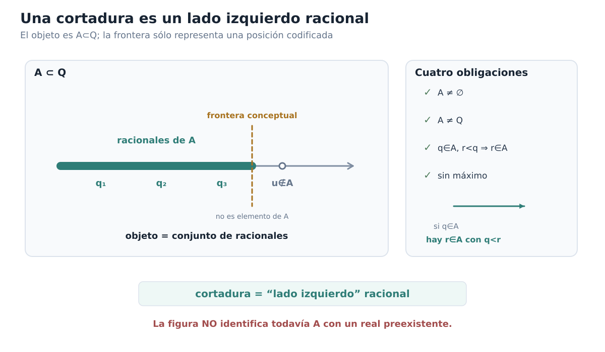
La frontera dibujada sirve para interpretar las propiedades del conjunto; la construcción dispone efectivamente de \(A\) y de sus racionales. Podemos, por ello, comparar cortaduras sin disponer de puntos frontera externos. Una posición situada más a la derecha debería registrar todos los racionales registrados por una posición anterior y algunos más. La inclusión expresa justamente esa relación. Para \(A,B\in\mathcal D\) definimos \[ A\le_{\mathcal D}B\quad\Longleftrightarrow\quad A\subseteq B, \qquad A<_{\mathcal D}B\quad\Longleftrightarrow\quad A\subsetneq B. \]
La inclusión es reflexiva, antisimétrica y transitiva: \(A\subseteq A\); las inclusiones \(A\subseteq B\) y \(B\subseteq A\) equivalen conjuntamente a \(A=B\); y \(A\subseteq B\subseteq C\) implica \(A\subseteq C\). Para conjuntos arbitrarios puede faltar la comparabilidad. Por ejemplo, \(\{0\}\) y \(\{1\}\) no están incluidos uno en otro. Entre cortaduras, la clausura hacia abajo impide esa situación.
Proposición. La inclusión define un orden lineal en \(\mathcal D\): para cualesquiera \(A,B\in\mathcal D\) se cumple \(A\subseteq B\) o \(B\subseteq A\).
Demostración. Si \(A\subseteq B\), ya tenemos una de las comparaciones. En caso contrario existe un racional \(a\in A\setminus B\). Ese único testigo permitirá probar que todo \(B\) está contenido en \(A\).
Sea \(b\in B\) arbitrario. Si ocurriera \(a<b\), la clausura hacia abajo de \(B\) obligaría a \(a\in B\), contradiciendo la elección de \(a\). Tampoco puede ocurrir \(a=b\), pues \(b\) pertenece a \(B\) y \(a\) no. La tricotomía del orden racional deja entonces \(b<a\). Como \(a\in A\), la clausura hacia abajo de \(A\) da \(b\in A\). Hemos probado \(B\subseteq A\); junto con las propiedades de la inclusión ya señaladas, esto establece el orden lineal. \(\square\)
La prueba explica por qué dos lados izquierdos racionales sólo pueden estar anidados. Un racional que pertenece a \(A\) y queda fuera de \(B\) obliga a que todos los elementos de \(B\) sean menores que él, y por ello pertenezcan a \(A\). En particular, una inclusión estricta \(A\subsetneq B\) contiene información concreta: hay algún racional en \(B\) que todavía no aparece en \(A\).
El orden por inclusión permite comparar tanto las cortaduras \(L_c\) como \(A_2\), aunque todavía no sepamos sumar ni multiplicar estos objetos. Las cortaduras \(L_c\) ofrecen además un vínculo con la aritmética de partida: cada racional tiene ya una representación en \(\mathcal D\). Falta comprobar que racionales distintos dan representaciones distintas y que la comparación de éstas recupera su orden.
Antes de seguir
Microcontrol 19
Verifica directamente que, para cada \(c\in\mathbb Q\), el conjunto \(L_c=\{q\in\mathbb Q:q<c\}\) es una cortadura de Dedekind.
Ver solución del microcontrol 19
Sea \[ L_c=\{q\in\mathbb Q:q<c\}, \qquad c\in\mathbb Q. \]
- No vacío: \(c-1<c\), luego \(c-1\in L_c\).
- Propio: \(c\notin L_c\), así que \(L_c\ne\mathbb Q\).
- Cerrado hacia abajo: si \(q\in L_c\) y \(r<q\), entonces \(r<q<c\), por transitividad; por tanto \(r\in L_c\).
- Sin máximo: si \(q\in L_c\), entonces \[ r=\frac{q+c}{2} \] satisface \(q<r<c\). Así, \(r\in L_c\) y \(r>q\).
Por consiguiente, \[ \boxed{L_c\text{ es una cortadura de Dedekind}.} \]
Microcontrol 20
Explica por qué \(\{q\in\mathbb Q:q\le c\}\) queda excluido por la condición «sin máximo» y qué duplicación evitaríamos de no imponerla.
Ver solución del microcontrol 20
El conjunto \[ \{q\in\mathbb Q:q\le c\} \] tiene máximo: el propio racional \(c\). Por eso queda excluido por la condición «sin máximo».
Si suprimiéramos esa condición, serían admisibles a la vez \[ \{q\in\mathbb Q:q<c\} \qquad\text{y}\qquad \{q\in\mathbb Q:q\le c\}. \] Son conjuntos distintos, pero ambos codificarían intuitivamente la misma frontera racional \(c\). La cláusula «sin máximo» fija una convención única: una frontera racional se representa por los racionales estrictamente menores que ella.
Microcontrol 21
En la comprobación de \(A_2\), ¿por qué hay que separar los casos \(q<0\) y \(q\ge0\) al demostrar que no existe máximo?
Ver solución del microcontrol 21
Para demostrar que \(A_2\) no tiene máximo debemos, dado \(q\in A_2\), encontrar otro elemento de \(A_2\) estrictamente mayor.
Si \(q<0\), basta tomar \[ r=\frac q2, \] pues \(q<r<0\), de modo que \(r\in A_2\).
Si \(q\ge0\), en cambio, \(q/2\le q\) y no sirve. En ese caso, de \(q\in A_2\) se sigue \(q^2<2\), y esa desigualdad permite construir una perturbación racional positiva \(\delta\) con \[ (q+\delta)^2<2. \] Entonces \(q+\delta\in A_2\) y \(q+\delta>q\).
Los casos se separan porque la razón que garantiza la pertenencia —negatividad o desigualdad cuadrática— es distinta en cada región.
Microcontrol 22
¿En qué paso de la prueba de linealidad usamos que el orden de \(\mathbb Q\) satisface tricotomía?
Ver solución del microcontrol 22
Partimos de \(A\not\subseteq B\) y elegimos \(a\in A\setminus B\). Para un \(b\in B\) arbitrario, no puede ocurrir \(a<b\), porque la clausura hacia abajo de \(B\) implicaría \(a\in B\). Tampoco puede ocurrir \(a=b\).
Es exactamente aquí donde usamos la tricotomía del orden racional: entre \(a<b\), \(a=b\) y \(b<a\), descartadas las dos primeras posibilidades, necesariamente \[ b<a. \] Como \(a\in A\) y \(A\) es cerrado hacia abajo, \(b\in A\). Al ser \(b\in B\) arbitrario, \[ B\subseteq A. \]
Microcontrol 23
Si \(A\subsetneq B\), ¿qué interpretación tiene esa inclusión en términos de los racionales situados «a la izquierda» de las posiciones codificadas?
Ver solución del microcontrol 23
La inclusión \[ A\subsetneq B \] dice que todo racional registrado como situado a la izquierda de la posición codificada por \(A\) también está a la izquierda de la posición codificada por \(B\), y además existe al menos un racional que pertenece a \(B\) pero no a \(A\).
Por tanto \(B\) registra más racionales a su izquierda que \(A\). Ésta es la lectura que motiva \[ A<_{\mathcal D}B \quad\Longleftrightarrow\quad A\subsetneq B: \] la posición codificada por \(B\) queda estrictamente más a la derecha que la codificada por \(A\). Esta interpretación usa sólo los códigos racionales y no presupone puntos reales ya construidos.
Microcontrol 24
¿Por qué la existencia del conjunto \(\mathcal D\subseteq\mathcal P(\mathbb Q)\) no demuestra todavía que hayamos construido un cuerpo ordenado completo?
Ver solución del microcontrol 24
La inclusión \(\mathcal D\subseteq\mathcal P(\mathbb Q)\) construye el conjunto de cortaduras, y la inclusión entre sus miembros le da un orden. Para realizar los reales faltan operaciones internas y sus leyes de cuerpo, compatibilidad con el orden y propiedad del supremo. Cada etapa debe comprobarse sobre los objetos construidos: disponer de un dominio ordenado todavía no demuestra que sea un cuerpo ordenado completo.
Ya tenemos el primer objeto nuevo del capítulo. No nació de dibujar un punto ausente, sino de registrar qué racionales deberían quedar antes de él. El próximo paso será comprobar que los racionales mismos reaparecen dentro de este lenguaje sin perder su orden.
Ejercicios de la sección 0.4
Ejercicio 13. Auditar las cuatro condiciones de una cortadura
Para un subconjunto \(A\subseteq\mathbb Q\), considera por separado estas cuatro exigencias:
- \(A\ne\varnothing\);
- \(A\subsetneq\mathbb Q\);
- si \(q\in A\) y \(r<q\), entonces \(r\in A\);
- \(A\) no tiene máximo.
Analiza los siguientes subconjuntos de \(\mathbb Q\):
\[ \begin{aligned} B_1&=\{q\in\mathbb Q:q<3\},\\ B_2&=\{q\in\mathbb Q:q\le3\},\\ B_3&=\mathbb Q,\\ B_4&=\varnothing,\\ B_5&=\{q\in\mathbb Q:q<0\ \text{o}\ 1<q<2\}. \end{aligned} \]
Para cada \(A_i\):
- determina cuáles de las cuatro condiciones satisface;
- cuando una condición falle, exhibe un testigo concreto del fallo;
- decide cuáles son cortaduras de Dedekind.
Cierra escribiendo correctamente los tipos de los objetos involucrados cuando \(A\in\mathcal D\) y \(q\in A\): distingue entre \(A\in\mathcal D\), \(A\subseteq\mathbb Q\), \(q\in A\) y \(q\in\mathbb Q\).
Ver solución del ejercicio 13
Recordemos las cuatro condiciones separadas:
\[ A\ne\varnothing,\qquad A\subsetneq\mathbb Q, \]
clausura hacia abajo y ausencia de máximo.
Para
\[ B_1=\{q\in\mathbb Q:q<3\}, \]
las cuatro se cumplen. Es no vacío, por ejemplo \(0\in B_1\); es propio porque \(3\notin B_1\); si \(q<3\) y \(r<q\), entonces \(r<3\); y si \(q<3\), el racional
\[ r=\frac{q+3}{2} \]
satisface
\[ q<r<3. \]
Por tanto \(r\in B_1\) y \(B_1\) no tiene máximo. Así,
\[ B_1\in\mathcal D. \]
Para
\[ B_2=\{q\in\mathbb Q:q\le3\}, \]
las tres primeras condiciones se cumplen, pero la cuarta falla: \(3\in B_2\) y todo \(q\in B_2\) satisface \(q\le3\). Por tanto \(3\) es máximo de \(B_2\). Luego \(B_2\notin\mathcal D\).
Para
\[ B_3=\mathbb Q, \]
fallan la segunda condición y sólo ésa entre las cuatro: \(B_3\) no es un subconjunto propio de \(\mathbb Q\). Es no vacío, está cerrado hacia abajo y no tiene máximo, porque dado cualquier racional \(q\), también \(q+1\in\mathbb Q\) y \(q<q+1\). Así \(B_3\notin\mathcal D\).
Para
\[ B_4=\varnothing, \]
falla la no vaciedad. La clausura hacia abajo y la ausencia de máximo son verdaderas de manera vacía, y \(\varnothing\subsetneq\mathbb Q\), pero una cortadura debe contener al menos un racional. Por tanto \(B_4\notin\mathcal D\).
Finalmente,
\[ B_5=\{q\in\mathbb Q:q<0\ \text{o}\ 1<q<2\} \]
es no vacío y propio. Tampoco tiene máximo: si \(q<0\), entonces \(q<q/2<0\); si \(1<q<2\), entonces \(q<(q+2)/2<2\) y el nuevo racional sigue siendo mayor que uno. En ambos casos se obtiene un miembro estrictamente mayor de \(B_5\). Sin embargo, no está cerrado hacia abajo. Por ejemplo,
\[ \frac32\in B_5, \]
pero
\[ \frac12<\frac32 \]
y
\[ \frac12\notin B_5. \]
Luego \(B_5\notin\mathcal D\).
La clasificación es entonces:
\[ \boxed{ B_1\in\mathcal D, \qquad B_2,B_3,B_4,B_5\notin\mathcal D. } \]
El control de tipos es igualmente importante. Si \(A\in\mathcal D\), entonces
\[ A\subseteq\mathbb Q. \]
Si además \(q\in A\), entonces necesariamente
\[ q\in\mathbb Q. \]
Pero \(A\) mismo no es un racional: es un conjunto de racionales. Por eso las expresiones correctas distinguen
\[ A\in\mathcal D, \qquad A\subseteq\mathbb Q, \qquad q\in A, \qquad q\in\mathbb Q. \]
Referencia visual. Véase la figura C00-F04 del texto principal, Una cortadura es un lado izquierdo racional, como síntesis posterior de este argumento.
Ejercicio 14. Construir la cortadura determinada por un racional
Sea \(c\in\mathbb Q\). Define
\[ c^*=\{q\in\mathbb Q:q<c\}. \]
Demuestra directamente que \(c^*\) es una cortadura de Dedekind.
Tu prueba debe verificar por separado:
- no vaciedad;
- que \(c^*\subsetneq\mathbb Q\);
- clausura hacia abajo;
- ausencia de máximo.
Para la última condición, construye a partir de un \(q\in c^*\) un racional \(r\) tal que
\[ q<r<c. \]
Explica finalmente por qué
\[ \{q\in\mathbb Q:q\le c\} \]
no puede usarse como segundo código admisible para la misma frontera racional.
No demuestres todavía que \(c\mapsto c^*\) preserva el orden; eso corresponde a la sección siguiente.
Ver solución del ejercicio 14
Sea \(c\in\mathbb Q\) y definamos
\[ c^*=\{q\in\mathbb Q:q<c\}. \]
No vaciedad. Como \(c-1<c\),
\[ c-1\in c^*. \]
Por tanto \(c^*\ne\varnothing\).
Subconjunto propio. Por definición,
\[ c\notin c^*. \]
Así,
\[ c^*\subsetneq\mathbb Q. \]
Clausura hacia abajo. Si \(q\in c^*\) y \(r<q\), entonces
\[ q<c. \]
Por transitividad,
\[ r<q<c, \]
y por tanto \(r<c\). Luego \(r\in c^*\).
Ausencia de máximo. Sea \(q\in c^*\). Entonces \(q<c\). Definimos
\[ r=\frac{q+c}{2}. \]
Como \(q<c\),
\[ q<\frac{q+c}{2}<c. \]
Además \(r\in\mathbb Q\). Por tanto
\[ q<r \qquad\text{y}\qquad r\in c^*. \]
Ningún elemento de \(c^*\) puede ser máximo.
Hemos verificado las cuatro condiciones, así que
\[ \boxed{c^*\in\mathcal D.} \]
Consideremos ahora
\[ B_c=\{q\in\mathbb Q:q\le c\}. \]
Este conjunto contiene a \(c\), y \(c\) es su máximo. Por ello falla exactamente la condición de ausencia de máximo. Si admitiéramos tanto \(c^*\) como \(B_c\), una misma frontera racional quedaría codificada por dos conjuntos distintos.
La convención de excluir máximos fuerza un único código del lado izquierdo:
\[ \boxed{c^*=\{q\in\mathbb Q:q<c\}.} \]
Todavía no hemos probado que la aplicación \(c\mapsto c^*\) preserve el orden; aquí sólo hemos construido y verificado que cada racional determina una cortadura.
Ejercicio 15. Reparar \(S_2\) hasta obtener una cortadura
Recuerda el conjunto de §0.3
\[ S_2=\{q\in\mathbb Q:q\ge0,\ q^2<2\}. \]
- Demuestra que \(S_2\) no es una cortadura de Dedekind localizando una condición concreta que falla.
- Define
\[ A_2=\{q\in\mathbb Q:q<0\ \text{o}\ q^2<2\}. \]
Demuestra que \(A_2\) sí es una cortadura. 3. En la prueba de ausencia de máximo, trata separadamente: - \(q<0\); - \(q\ge0\).
En el segundo caso puedes usar
\[ \delta=\frac{2-q^2}{2q+3}. \]
Debes justificar que \(q+\delta\in A_2\) y \(q+\delta>q\).
- Explica por qué esta construcción sigue usando únicamente objetos racionales y no introduce de manera encubierta una frontera real preexistente.
Ver solución del ejercicio 15
Partimos de
\[ S_2=\{q\in\mathbb Q:q\ge0,\ q^2<2\}. \]
El conjunto no es una cortadura porque falla la clausura hacia abajo. En efecto,
\[ 1\in S_2, \]
pero
\[ -2<1 \]
y
\[ -2\notin S_2, \]
ya que \(-2\) no satisface \(q\ge0\).
Para reparar ese defecto definimos
\[ A_2=\{q\in\mathbb Q:q<0\ \text{o}\ q^2<2\}. \]
Verifiquemos las cuatro condiciones.
No vaciedad. Tenemos
\[ 0\in A_2 \]
porque \(0^2<2\).
Subconjunto propio. El racional \(2\) no pertenece a \(A_2\), pues
\[ 2\not<0 \qquad\text{y}\qquad 2^2=4\not<2. \]
Así \(A_2\subsetneq\mathbb Q\).
Clausura hacia abajo. Sea \(q\in A_2\) y \(r<q\).
Si \(q<0\), entonces \(r<0\), de modo que \(r\in A_2\).
Si \(q\ge0\), la pertenencia \(q\in A_2\) implica \(q^2<2\). Si \(r<0\), nuevamente \(r\in A_2\). Si
\[ 0\le r<q, \]
entonces
\[ r^2<q^2<2, \]
y también \(r\in A_2\).
Por tanto \(A_2\) es cerrado hacia abajo.
Ausencia de máximo. Sea \(q\in A_2\).
Si \(q<0\), tomamos
\[ r=\frac q2. \]
Como \(q<0\),
\[ q<\frac q2<0, \]
de modo que \(r\in A_2\) y \(r>q\).
Si \(q\ge0\), entonces \(q^2<2\). Definimos
\[ \delta=\frac{2-q^2}{2q+3}. \]
El numerador y el denominador son racionales y positivos, por lo que
\[ \delta\in\mathbb Q, \qquad \delta>0. \]
Además,
\[ 2-q^2\le2 \qquad\text{y}\qquad 2q+3\ge3, \]
de donde
\[ 0<\delta<1. \]
Así \(\delta^2<\delta\). Entonces
\[ \begin{aligned} (q+\delta)^2 &=q^2+2q\delta+\delta^2\\ &<q^2+(2q+1)\delta\\ &=q^2+(2-q^2)\frac{2q+1}{2q+3}\\ &<q^2+(2-q^2)\\ &=2. \end{aligned} \]
Por tanto
\[ q+\delta\in A_2 \qquad\text{y}\qquad q+\delta>q. \]
En ambos casos todo elemento de \(A_2\) admite otro elemento de \(A_2\) estrictamente mayor. Luego \(A_2\) no tiene máximo.
Concluimos:
\[ \boxed{A_2\in\mathcal D.} \]
La construcción no ha introducido ninguna frontera externa. \(A_2\) es literalmente un subconjunto de \(\mathbb Q\), definido mediante desigualdades y operaciones racionales. Incluso el avance \(q\mapsto q+\delta\) permanece enteramente dentro de \(\mathbb Q\).
Referencia visual. Véase la figura C00-F04 del texto principal, Una cortadura es un lado izquierdo racional, como síntesis posterior de este argumento.
Ejercicio 16. La inclusión ordena linealmente todas las cortaduras
Sean \(A,B\in\mathcal D\). Demuestra que
\[ A\subseteq B \qquad\text{o}\qquad B\subseteq A. \]
Organiza la prueba a partir del caso no trivial \(A\not\subseteq B\):
- elige \(a\in A\setminus B\);
- toma un \(b\in B\) arbitrario;
- demuestra que no pueden ocurrir \(a<b\) ni \(a=b\);
- usa la tricotomía de \(\mathbb Q\) para concluir \(b<a\);
- usa la clausura hacia abajo de \(A\) para obtener \(b\in A\).
Concluye que la relación
\[ A\le_{\mathcal D}B \iff A\subseteq B \]
es un orden lineal sobre \(\mathcal D\), indicando además por qué reflexividad, antisimetría y transitividad provienen de la inclusión de conjuntos.
Ver solución del ejercicio 16
Sean \(A,B\in\mathcal D\).
Si
\[ A\subseteq B, \]
ya tenemos una de las dos comparaciones requeridas.
Supongamos entonces
\[ A\not\subseteq B. \]
Existe algún
\[ a\in A\setminus B. \]
Tomemos un elemento arbitrario \(b\in B\).
No puede ocurrir \(a<b\). Si ocurriera, como \(b\in B\) y \(B\) es cerrado hacia abajo, tendríamos
\[ a\in B, \]
contradiciendo \(a\notin B\).
Tampoco puede ocurrir
\[ a=b, \]
porque \(b\in B\) y \(a\notin B\).
Como el orden de \(\mathbb Q\) satisface tricotomía, sólo queda
\[ b<a. \]
Ahora \(a\in A\) y \(A\) es cerrado hacia abajo. Por tanto
\[ b\in A. \]
El elemento \(b\in B\) era arbitrario, así que
\[ B\subseteq A. \]
Hemos probado que para cualesquiera \(A,B\in\mathcal D\),
\[ \boxed{ A\subseteq B \quad\text{o}\quad B\subseteq A. } \]
Definimos
\[ A\le_{\mathcal D}B \iff A\subseteq B. \]
La inclusión de conjuntos es reflexiva:
\[ A\subseteq A; \]
es antisimétrica:
\[ A\subseteq B \ \text{y}\ B\subseteq A \Longrightarrow A=B; \]
y es transitiva:
\[ A\subseteq B \ \text{y}\ B\subseteq C \Longrightarrow A\subseteq C. \]
La comparabilidad que acabamos de demostrar añade la propiedad que faltaba. Por tanto,
\[ \boxed{\le_{\mathcal D}\text{ es un orden lineal sobre }\mathcal D.} \]
El paso estructural decisivo es que la clausura hacia abajo convierte un único testigo \(a\in A\setminus B\) en información sobre todos los elementos de \(B\).
Referencia visual. Véase la figura C00-F04 del texto principal, Una cortadura es un lado izquierdo racional, como síntesis posterior de este argumento.
Ejercicio 17. Situar \(A_2\) entre dos cortaduras racionales
Usa la notación
\[ c^*=\{q\in\mathbb Q:q<c\} \]
y la cortadura
\[ A_2=\{q\in\mathbb Q:q<0\ \text{o}\ q^2<2\}. \]
- Demuestra las inclusiones estrictas
\[ 1^*\subsetneq A_2\subsetneq 2^*. \]
Debes exhibir un racional que pruebe la estricta inclusión en cada caso. 2. Supón, para obtener una contradicción, que existe \(c\in\mathbb Q\) tal que
\[ A_2=c^*. \]
Demuestra primero que \(c>0\). Después separa los tres casos
\[ c^2<2,\qquad c^2=2,\qquad c^2>2, \]
y usa sólo resultados disponibles hasta §0.4 para descartar cada uno. 3. Concluye que \(A_2\) es una cortadura situada estrictamente entre dos cortaduras racionales, pero no coincide con \(c^*\) para ningún racional \(c\).
No interpretes todavía esta conclusión como una identificación con un número real previamente existente.
Ver solución del ejercicio 17
Recordemos
\[ 1^*=\{q\in\mathbb Q:q<1\}, \qquad 2^*=\{q\in\mathbb Q:q<2\}, \]
y
\[ A_2=\{q\in\mathbb Q:q<0\ \text{o}\ q^2<2\}. \]
Primero probemos
\[ 1^*\subseteq A_2. \]
Sea \(q<1\). Si \(q<0\), entonces \(q\in A_2\). Si \(0\le q<1\), entonces
\[ q^2<1<2, \]
así que también \(q\in A_2\).
La inclusión es estricta. Por ejemplo,
\[ \frac43>1 \]
y
\[ \left(\frac43\right)^2=\frac{16}{9}<2. \]
Por tanto
\[ \frac43\in A_2\setminus1^*, \]
y así
\[ 1^*\subsetneq A_2. \]
Ahora probemos
\[ A_2\subseteq2^*. \]
Sea \(q\in A_2\). Si \(q<0\), ciertamente \(q<2\). Si \(q\ge0\), entonces \(q^2<2\). No puede ocurrir \(q\ge2\), pues eso implicaría
\[ q^2\ge4>2. \]
Luego \(q<2\), y por tanto \(q\in2^*\).
La inclusión también es estricta. En efecto,
\[ \frac32<2, \]
de modo que
\[ \frac32\in2^*, \]
pero
\[ \left(\frac32\right)^2=\frac94>2, \]
y \(\frac32\not<0\). Así,
\[ \frac32\notin A_2. \]
Concluimos
\[ \boxed{ 1^*\subsetneq A_2\subsetneq2^*. } \]
Falta demostrar que \(A_2\) no es una cortadura racional.
Supongamos, para obtener una contradicción, que existe \(c\in\mathbb Q\) tal que
\[ A_2=c^*. \]
Como
\[ 0\in A_2=c^*, \]
por la definición de \(c^*\) tenemos
\[ 0<c. \]
Ahora aplicamos tricotomía a \(c^2\) y \(2\).
Si
\[ c^2<2, \]
entonces, como \(c>0\),
\[ c\in A_2. \]
Pero
\[ c\notin c^* \]
por definición. Esto contradice \(A_2=c^*\).
Si
\[ c^2=2, \]
contradecimos el resultado de §0.3 según el cual ningún racional tiene cuadrado igual a \(2\).
Finalmente, supongamos
\[ c^2>2. \]
Como \(c>0\), la perturbación racional de §0.3 produce un racional \(t\) tal que
\[ 0<t<c \qquad\text{y}\qquad t^2>2. \]
De \(t<c\) obtenemos
\[ t\in c^*. \]
Pero \(t>0\) y \(t^2>2\), por lo que
\[ t\notin A_2. \]
Nuevamente contradicción.
Los tres casos son imposibles. Por tanto,
\[ \boxed{ A_2\ne c^* \quad\text{para todo }c\in\mathbb Q. } \]
La conclusión disponible en §0.4 es estrictamente estructural:
\[ \boxed{ 1^*\subsetneq A_2\subsetneq2^* \quad\text{y}\quad A_2\text{ no es una cortadura racional}. } \]
Esto sitúa a \(A_2\) en el orden por inclusión sin identificarla todavía con ningún número real previamente existente.
0.5. Una copia de \(\mathbb Q\) dentro del nuevo sistema
Para cada \(q\in\mathbb Q\), escribamos \[ q^*=\{r\in\mathbb Q:r<q\}. \] Es la cortadura que antes llamamos \(L_q\). La verificación hecha en §0.4 da, para todo \(q\), \(q^*\in\mathcal D\): contiene a \(q-1\), excluye a \(q\), es cerrada hacia abajo por transitividad y carece de máximo porque entre \(r<q\) y \(q\) está \((r+q)/2\). Podemos definir, por tanto, la aplicación \[ \iota_{\mathbb Q}:\mathbb Q\longrightarrow\mathcal D, \qquad \iota_{\mathbb Q}(q)=q^*. \] La estrella distingue al racional de su imagen, que es un conjunto. Por ejemplo, \(0^*=\{r\in\mathbb Q:r<0\}\) es un elemento de \(\mathcal D\), mientras que \(0\) es un elemento de \(\mathbb Q\) y no pertenece a \(0^*\).
Para que la aplicación conserve el orden necesitamos que \(p<q\) se traduzca en \(p^*\subsetneq q^*\). El significado de ambos conjuntos sugiere esta implicación: todo racional menor que \(p\) es menor que \(q\), y el propio \(p\) ya queda a la izquierda de \(q\) aunque nunca quede a su propia izquierda. También debemos poder recorrer la relación en sentido inverso y recuperar la desigualdad de los racionales a partir de sus imágenes.
Proposición. Para cualesquiera \(p,q\in\mathbb Q\), \[ p<q\quad\Longleftrightarrow\quad p^*\subsetneq q^*. \] La aplicación \(\iota_{\mathbb Q}\) es inyectiva y además satisface \[ p\le q\quad\Longleftrightarrow\quad p^*\subseteq q^*. \]
Demostración. Supongamos primero \(p<q\). Si \(r\in p^*\), entonces \(r<p<q\), por lo que \(r\in q^*\). Esto prueba \(p^*\subseteq q^*\). La inclusión es estricta porque \(p\in q^*\) y \(p\notin p^*\).
Para el recíproco, la inclusión estricta proporciona un racional \(r\in q^*\setminus p^*\). La pertenencia a \(q^*\) dice \(r<q\), y la no pertenencia a \(p^*\) dice que \(r<p\) es falso. Por tricotomía, \(p\le r\); de ahí \[ p\le r<q, \] y concluimos \(p<q\). Este testigo convierte una diferencia entre conjuntos en una desigualdad entre sus parámetros.
Si \(p^*=q^*\), no puede ocurrir \(p<q\), pues acabamos de probar que produciría una inclusión estricta; por la misma razón tampoco puede ocurrir \(q<p\). La tricotomía obliga a \(p=q\), lo que demuestra la inyectividad.
Para el orden no estricto, \(p\le q\) significa \(p<q\) o \(p=q\), y ambos casos dan \(p^*\subseteq q^*\). Recíprocamente, si \(p^*\subseteq q^*\) y tuviéramos \(q<p\), la equivalencia estricta daría \(q^*\subsetneq p^*\), incompatible con aquella inclusión. Luego \(p\le q\). \(\square\)
Decimos que \(\iota_{\mathbb Q}\) preserva el orden porque transporta cada desigualdad racional a las imágenes, y que lo refleja porque la comparación de las imágenes permite reconstruirla. La equivalencia incluye ambas direcciones; así, el nuevo lenguaje no confunde racionales distintos ni altera su posición relativa. Por ejemplo, \[ 0^*\subsetneq1^*\subsetneq\left(\frac32\right)^* \] reproduce \(0<1<3/2\). También puede leerse directamente una cadena con signos distintos: \[ (-2)^*\subsetneq0^*\subsetneq3^*. \] Si \(r<-2\), entonces \(r<0\), y \(-1\in0^*\setminus(-2)^*\) prueba que la primera inclusión es estricta. Si \(r<0\), entonces \(r<3\), y \(1\in3^*\setminus0^*\) prueba lo mismo para la segunda. Los signos de los parámetros no exigen cambiar la definición.
La imagen de la aplicación es el subconjunto \[ \mathcal Q^*=\iota_{\mathbb Q}(\mathbb Q) =\{q^*:q\in\mathbb Q\}\subseteq\mathcal D. \] La inyectividad permite recuperar de manera única el racional representado por cada cortadura de \(\mathcal Q^*\). En efecto, la regla \[ \rho:\mathcal Q^*\longrightarrow\mathbb Q,\qquad \rho(q^*)=q \] está bien definida porque una igualdad \(p^*=q^*\) implica \(p=q\); además, \[ \rho(\iota_{\mathbb Q}(q))=q, \qquad \iota_{\mathbb Q}(\rho(A))=A\quad(A\in\mathcal Q^*). \] La segunda identidad usa \(A=q^*\), como permite la definición de la imagen; la equivalencia de la proposición muestra además que \(\rho\) conserva el orden: de \(p^*<_{\mathcal D}q^*\) recuperamos \(p<q\). Al restringir el codominio de \(\iota_{\mathbb Q}\) a \(\mathcal Q^*\), tenemos por ello dos aplicaciones inversas que conservan el orden. Éste es el sentido preciso en que \(\mathcal Q^*\) es una copia ordenada de \(\mathbb Q\).
La copia conserva también la densidad interna del orden racional. Entre \(p^*<_{\mathcal D}q^*\) podemos tomar \(r=(p+q)/2\); como \(p<r<q\), resulta \[ p^*<_{\mathcal D}r^*<_{\mathcal D}q^*, \qquad r^*\in\mathcal Q^*. \] El resultado habla de dos cortaduras racionales. Para saber si \(\mathcal D\) aporta posiciones nuevas debemos examinar una cortadura que no pertenezca a esa imagen.
Volvamos a \(A_2\). Las inclusiones \[ 1^*\subsetneq A_2\subsetneq2^* \] se prueban sin salir de \(\mathbb Q\). Si \(r<1\), o bien \(r<0\), o bien \(0\le r<1\) y \(r^2<1<2\); en ambos casos \(r\in A_2\). El racional \(1\) pertenece a \(A_2\) y no a \(1^*\), lo que prueba la primera inclusión estricta. A su vez, cualquier \(r\in A_2\) es menor que \(2\): para \(r<0\) es inmediato, y para \(r\ge0\) la alternativa \(r\ge2\) daría \(r^2\ge4\), contra la pertenencia a \(A_2\). Finalmente, \(3/2\) pertenece a \(2^*\) y queda fuera de \(A_2\), pues \((3/2)^2=9/4>2\). Esto prueba la segunda inclusión estricta.
Entre \(1^*\) y \(2^*\) se encuentra también, por ejemplo, \((4/3)^*\), de modo que aquellas inclusiones aún no distinguen a \(A_2\) de todas las cortaduras racionales. Para demostrar que hemos construido una posición nueva debemos descartar la igualdad \(A_2=c^*\) para todo racional \(c\). La dificultad aritmética de §0.3 proporciona el argumento.
Supongamos \(A_2=c^*\) con \(c\in\mathbb Q\). Como \(0\in A_2\), tendríamos \(0<c\). Si \(c^2<2\), el propio \(c\) pertenecería a \(A_2\), aunque \(c\notin c^*\), una contradicción. La igualdad \(c^2=2\) es imposible por la demostración de paridad de §0.3. Si \(c^2>2\), podemos retroceder desde \(c\) un poco sin que el cuadrado baje hasta \(2\): tomemos \[ \delta=\frac{c^2-2}{4c}, \qquad t=c-\delta. \] Son racionales, y \(0<\delta<c\), porque \(0<c^2-2<4c^2\). De aquí \(0<t<c\), mientras que \[ t^2=c^2-2c\delta+\delta^2 >\frac{c^2+2}{2}>2. \] Por tanto \(t\in c^*\) y \(t\notin A_2\), otra contradicción. Los tres casos quedan descartados y concluimos \[ A_2\notin\mathcal Q^*, \qquad\text{por tanto}\qquad \mathcal Q^*\subsetneq\mathcal D. \] La construcción contiene efectivamente un objeto que ningún racional representa. Hemos probado esta afirmación comparando subconjuntos racionales y usando perturbaciones racionales; sigue sin ser necesario invocar un número real cuyo cuadrado sea \(2\).
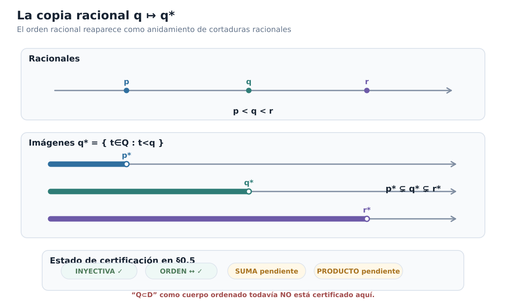
El isomorfismo de órdenes entre \(\mathbb Q\) y \(\mathcal Q^*\) autoriza a identificar sus posiciones ordenadas. La inclusión literal que hemos construido es \(\mathcal Q^*\subseteq\mathcal D\): los elementos de la imagen son conjuntos, y los racionales de partida se corresponden con ellos mediante \(\iota_{\mathbb Q}\). Mantendremos visible esa correspondencia al introducir las operaciones, pues conservar el orden no acredita por sí mismo ninguna ley aritmética.
La suma y el producto deberán ser aplicaciones de \(\mathcal D\times\mathcal D\) en \(\mathcal D\), con valores que satisfagan otra vez las condiciones de cortadura. Después habrá que demostrar sus leyes y comprobar que, para todos \(p,q\in\mathbb Q\), sumar o multiplicar sus imágenes produce las imágenes de \(p+q\) y \(pq\): \[ p^*+q^*=(p+q)^*, \qquad p^*q^*=(pq)^*. \] Estas expresiones formulan las identidades que deberán cumplir las operaciones por construir; aún no se usan como igualdades demostradas. También habrá que reconocer el cero y la unidad y justificar los opuestos y los inversos. Al verificar esa estructura completa podremos adoptar la identificación usual de los racionales con una copia de cuerpo ordenado dentro de \(\mathcal D\). La primera operación exige dar un significado a la suma de dos lados izquierdos racionales y demostrar que el conjunto resultante vuelve a ser una cortadura.
Antes de seguir
Microcontrol 25
Demuestra directamente que \((-2)^*\subsetneq0^*\subsetneq3^*\) sin apelar a la proposición general.
Ver solución del microcontrol 25
Por definición,
\[ (-2)^*=\{r\in\mathbb Q:r<-2\}, \qquad 0^*=\{r\in\mathbb Q:r<0\}, \qquad 3^*=\{r\in\mathbb Q:r<3\}. \]
Si \(r\in(-2)^*\), entonces \(r<-2<0\), de modo que \(r\in0^*\). Por tanto,
\[ (-2)^*\subseteq0^*. \]
La inclusión es estricta porque, por ejemplo,
\[ -1\in0^* \qquad\text{pero}\qquad -1\notin(-2)^*. \]
Análogamente, si \(r\in0^*\), entonces \(r<0<3\), así que \(r\in3^*\) y
\[ 0^*\subseteq3^*. \]
La inclusión es estricta porque
\[ 1\in3^* \qquad\text{pero}\qquad 1\notin0^*. \]
Así, sin usar la proposición general,
\[ \boxed{(-2)^*\subsetneq0^*\subsetneq3^*.} \]
Microcontrol 26
Si \(p^*\subsetneq q^*\), ¿por qué un elemento de \(q^*\setminus p^*\) permite concluir \(p<q\)?
Ver solución del microcontrol 26
La inclusión estricta garantiza que existe algún
\[ r\in q^*\setminus p^*. \]
De \(r\in q^*\) obtenemos
\[ r<q. \]
En cambio, \(r\notin p^*\) significa que no se cumple \(r<p\). Por tricotomía del orden racional, de \(\neg(r<p)\) se sigue
\[ p\le r. \]
Combinando ambas desigualdades,
\[ p\le r<q, \]
y por tanto
\[ \boxed{p<q.} \]
El elemento de la diferencia funciona como un testigo racional que queda a la izquierda de \(q\) pero no a la izquierda de \(p\).
Microcontrol 27
Explica por qué la equivalencia \(p<q\Longleftrightarrow p^*\subsetneq q^*\) contiene más información que la sola implicación \(p<q\Rightarrow p^*\subsetneq q^*\).
Ver solución del microcontrol 27
La implicación
\[ p<q \Longrightarrow p^*\subsetneq q^* \]
dice que \(\iota_{\mathbb Q}\) preserva el orden: una desigualdad racional verdadera sigue siendo visible después del transporte.
La equivalencia completa
\[ p<q \Longleftrightarrow p^*\subsetneq q^* \]
añade la dirección recíproca. Por tanto también podemos recuperar el orden racional mirando sólo las imágenes:
\[ p^*\subsetneq q^* \Longrightarrow p<q. \]
Eso es reflexión del orden. Así, la equivalencia certifica que dentro de la imagen no aparecen comparaciones estrictas nuevas que no correspondan a una comparación racional original.
Microcontrol 28
¿Cómo se deduce la inyectividad de \(\iota_{\mathbb Q}\) a partir de la preservación y reflexión del orden?
Ver solución del microcontrol 28
Supongamos
\[ p^*=q^*. \]
Si \(p<q\), la equivalencia de orden obligaría a
\[ p^*\subsetneq q^*, \]
lo que contradice \(p^*=q^*\).
Si \(q<p\), obtendríamos del mismo modo
\[ q^*\subsetneq p^*, \]
otra contradicción.
Por tricotomía sólo queda
\[ p=q. \]
Así,
\[ \boxed{p^*=q^*\Longrightarrow p=q,} \]
y por tanto \(\iota_{\mathbb Q}\) es inyectiva. La igualdad de imágenes no puede ocultar dos racionales distintos porque cualquier desigualdad entre ellos produciría una inclusión estricta entre sus cortaduras.
Microcontrol 29
Verifica con detalle las inclusiones \(1^*\subsetneq A_2\subsetneq2^*\) sin introducir un número cuyo cuadrado sea \(2\).
Ver solución del microcontrol 29
Recordemos
\[ A_2=\{r\in\mathbb Q:r<0\ \text{o}\ r^2<2\}. \]
Primero probamos
\[ 1^*\subsetneq A_2. \]
Si \(r\in1^*\), entonces \(r<1\). Si \(r<0\), ya pertenece a \(A_2\). Si \(0\le r<1\), entonces
\[ r^2<1<2, \]
de modo que también \(r\in A_2\). Por tanto \(1^*\subseteq A_2\).
La inclusión es estricta porque
\[ 1\in A_2 \qquad\text{pero}\qquad 1\notin1^*. \]
Ahora probamos
\[ A_2\subsetneq2^*. \]
Sea \(r\in A_2\). Si \(r<0\), entonces \(r<2\). Si \(r\ge0\) y \(r^2<2\), no puede ocurrir \(r\ge2\), pues eso daría \(r^2\ge4>2\). Luego siempre \(r<2\), y por tanto \(r\in2^*\).
La inclusión es estricta porque
\[ \frac32\in2^* \]
pero
\[ \left(\frac32\right)^2=\frac94>2, \]
y además \(\frac32\not<0\), así que \(\frac32\notin A_2\).
Concluimos, usando sólo aritmética racional,
\[ \boxed{1^*\subsetneq A_2\subsetneq2^*.} \]
No fue necesario introducir ningún número cuyo cuadrado sea \(2\).
Microcontrol 30
¿Por qué todavía no podemos llamar a \(\iota_{\mathbb Q}\) «incrustación de cuerpos ordenados»?
Ver solución del microcontrol 30
En §0.5, \(q\mapsto q^*\) es una aplicación inyectiva que preserva y refleja el orden. La suma y el producto de cortaduras aún no se han definido. Por ello todavía no puede afirmarse que la aplicación conserve esas operaciones. La conclusión disponible es una incrustación de órdenes lineales; las secciones siguientes construirán la aritmética que permitirá demostrar que también es una incrustación de cuerpos ordenados.
Microcontrol 31
¿Qué dos identidades tendrán que verificarse más adelante para demostrar que la suma y el producto racionales se conservan dentro de \(\mathcal D\)?
Ver solución del microcontrol 31
Para que la copia racional conserve también la aritmética habrá que definir primero suma y producto en \(\mathcal D\) y demostrar, para todos \(p,q\in\mathbb Q\),
\[ \boxed{p^*+q^*=(p+q)^*} \]
y
\[ \boxed{p^*q^*=(pq)^*.} \]
La primera identidad certificará que sumar dentro de \(\mathcal D\) y luego identificar el resultado con una cortadura racional coincide con sumar primero en \(\mathbb Q\).
La segunda hará lo mismo para el producto.
Sólo después de esas verificaciones, junto con los elementos distinguidos y los inversos pertinentes, podrá elevarse la certificación de \(\iota_{\mathbb Q}\) desde una incrustación ordenada a una incrustación de cuerpos ordenados.
La copia racional ya está situada en el nuevo orden. Ahora debemos darle al resto de \(\mathcal D\) una aritmética compatible con ella.
Ejercicios de la sección 0.5
Ejercicio 18. Construir la aplicación racional hacia \(\mathcal D\)
Para cada \(q\in\mathbb Q\), recuerda la cortadura racional
\[ q^*=\{r\in\mathbb Q:r<q\}. \]
Usa el resultado de §0.4 según el cual \(q^*\in\mathcal D\) para construir formalmente
\[ \iota_{\mathbb Q}:\mathbb Q\longrightarrow\mathcal D, \qquad \iota_{\mathbb Q}(q)=q^*. \]
- Explica por qué la fórmula define realmente una aplicación con codominio \(\mathcal D\).
- Escribe explícitamente como subconjuntos de \(\mathbb Q\) las imágenes de \(-\frac32\), \(0\) y \(\frac74\).
- Para un \(q\in\mathbb Q\), distingue con tipos correctos los cuatro objetos o relaciones \(q\), \(q^*\), \(q\in\mathbb Q\) y \(q^*\in\mathcal D\).
- Define la imagen
\[ \mathcal Q^*=\iota_{\mathbb Q}(\mathbb Q) \]
y expresa correctamente su relación conjuntista con \(\mathcal D\).
En este ejercicio no afirmes todavía que \(\mathbb Q\) sea literalmente un subconjunto de \(\mathcal D\): construye primero la aplicación y su imagen.
Ver solución del ejercicio 18
Para cada \(q\in\mathbb Q\) definimos
\[ q^*=\{r\in\mathbb Q:r<q\}. \]
En §0.4 ya se verificó que este subconjunto satisface las cuatro condiciones de una cortadura de Dedekind. Por tanto,
\[ q^*\in\mathcal D \]
para todo \(q\in\mathbb Q\).
Eso garantiza que la regla
\[ \iota_{\mathbb Q}(q)=q^* \]
tiene efectivamente valores en \(\mathcal D\). Luego queda bien definida la aplicación
\[ \boxed{ \iota_{\mathbb Q}:\mathbb Q\longrightarrow\mathcal D, \qquad q\longmapsto q^*. } \]
Las tres imágenes pedidas son
\[ \iota_{\mathbb Q}\left(-\frac32\right) = \left(-\frac32\right)^* = \left\{r\in\mathbb Q:r<-\frac32\right\}, \]
\[ \iota_{\mathbb Q}(0) = 0^* = \{r\in\mathbb Q:r<0\}, \]
y
\[ \iota_{\mathbb Q}\left(\frac74\right) = \left(\frac74\right)^* = \left\{r\in\mathbb Q:r<\frac74\right\}. \]
Los tipos deben mantenerse separados. Si \(q\in\mathbb Q\), entonces
\[ q \]
es un racional, mientras que
\[ q^* \]
es un subconjunto de \(\mathbb Q\) que, además, pertenece al nuevo dominio:
\[ q^*\subseteq\mathbb Q, \qquad q^*\in\mathcal D. \]
No tendría sentido escribir \(q\in\mathcal D\) sólo por haber construido \(q^*\), ni confundir la pertenencia
\[ q^*\in\mathcal D \]
con la inclusión
\[ q^*\subseteq\mathbb Q. \]
La imagen de la aplicación es
\[ \mathcal Q^* = \iota_{\mathbb Q}(\mathbb Q) = \{q^*:q\in\mathbb Q\}. \]
Como todos los \(q^*\) son elementos de \(\mathcal D\),
\[ \boxed{\mathcal Q^*\subseteq\mathcal D.} \]
En este punto hemos construido una aplicación desde \(\mathbb Q\) hacia \(\mathcal D\) y un subconjunto concreto \(\mathcal Q^*\) de \(\mathcal D\). Todavía no hemos identificado literalmente \(\mathbb Q\) con esa imagen.
Referencia visual. Véase la figura C00-F05 del texto principal, La copia racional q↦q*, como síntesis posterior de este argumento.
Ejercicio 19. Recuperar exactamente el orden racional
Sean \(p,q\in\mathbb Q\). Demuestra la equivalencia
\[ p<q \quad\Longleftrightarrow\quad p^*\subsetneq q^*. \]
Tu prueba debe incluir ambos sentidos.
- Si \(p<q\), demuestra primero \(p^*\subseteq q^*\) y exhibe un testigo concreto de que la inclusión es estricta.
- Si \(p^*\subsetneq q^*\), elige un racional \(r\in q^*\setminus p^*\) y usa únicamente el orden de \(\mathbb Q\) para concluir \(p<q\).
- Deduce como corolario que
\[ p\le q \quad\Longleftrightarrow\quad p^*\subseteq q^*. \]
- Usa la equivalencia estricta para demostrar que \(\iota_{\mathbb Q}\) es inyectiva.
La conclusión debe dejar claro que la aplicación no sólo preserva el orden: también permite recuperarlo desde las imágenes.
Ver solución del ejercicio 19
Supongamos primero
\[ p<q. \]
Sea \(r\in p^*\). Por definición,
\[ r<p. \]
Como \(p<q\), la transitividad del orden racional da
\[ r<q. \]
Por tanto \(r\in q^*\). Hemos probado
\[ p^*\subseteq q^*. \]
La inclusión es estricta porque el propio \(p\) sirve como testigo:
\[ p<q \Longrightarrow p\in q^*, \]
mientras que
\[ p\notin p^* \]
porque \(p<p\) es falso. Así,
\[ p^*\subsetneq q^*. \]
Probemos ahora el recíproco. Supongamos
\[ p^*\subsetneq q^*. \]
Entonces existe
\[ r\in q^*\setminus p^*. \]
De \(r\in q^*\) obtenemos
\[ r<q. \]
De \(r\notin p^*\) sabemos que no ocurre \(r<p\). Como el orden de \(\mathbb Q\) es lineal,
\[ p\le r. \]
Por tanto
\[ p\le r<q, \]
y de aquí
\[ p<q. \]
Queda demostrado
\[ \boxed{ p<q \quad\Longleftrightarrow\quad p^*\subsetneq q^*. } \]
Para el orden no estricto, si \(p\le q\), entonces o bien \(p=q\), en cuyo caso \(p^*=q^*\), o bien \(p<q\), en cuyo caso \(p^*\subsetneq q^*\). En ambos casos,
\[ p^*\subseteq q^*. \]
Recíprocamente, si \(p^*\subseteq q^*\) y fuera \(q<p\), la equivalencia estricta ya demostrada produciría
\[ q^*\subsetneq p^*, \]
incompatible con \(p^*\subseteq q^*\). Luego \(p\le q\). Por tanto,
\[ \boxed{ p\le q \quad\Longleftrightarrow\quad p^*\subseteq q^*. } \]
Finalmente, supongamos
\[ \iota_{\mathbb Q}(p) = \iota_{\mathbb Q}(q). \]
Esto significa
\[ p^*=q^*. \]
Si \(p<q\), tendríamos \(p^*\subsetneq q^*\); si \(q<p\), tendríamos \(q^*\subsetneq p^*\). Ambas posibilidades contradicen la igualdad. Por tricotomía,
\[ p=q. \]
Así,
\[ \boxed{\iota_{\mathbb Q}\text{ es inyectiva}.} \]
La equivalencia de órdenes contiene más que una simple preservación: el orden de los racionales puede reconstruirse mirando únicamente las inclusiones entre sus imágenes.
Referencia visual. Véase la figura C00-F05 del texto principal, La copia racional q↦q*, como síntesis posterior de este argumento.
Ejercicio 20. Una certificación algebraica demasiado temprana
Un informe afirma:
«Como \(q\mapsto q^*\) es inyectiva y preserva el orden, ya hemos demostrado que \(\mathbb Q\) está incrustado en \(\mathcal D\) como cuerpo ordenado. Por tanto, para todos \(p,q\in\mathbb Q\) podemos usar desde ahora \(p^*+q^*=(p+q)^*\) y \(p^*q^*=(pq)^*\). En consecuencia, escribiremos sin más \(\mathbb Q\subseteq\mathcal D\).»
Audita el informe en el punto exacto del capítulo en que estamos.
- Separa las afirmaciones que ya están demostradas de las que todavía no están disponibles.
- Explica por qué la inyectividad y la preservación/reflexión del orden sólo certifican una incrustación de órdenes lineales.
- Identifica qué operaciones sobre \(\mathcal D\) tendrían que estar definidas antes de que las dos identidades algebraicas del informe tengan siquiera sentido dentro de la construcción.
- Explica qué verificaciones adicionales serían necesarias para elevar el certificado a una incrustación de cuerpos ordenados.
- Formula la certificación en dos tiempos que debe respetar el capítulo.
No refutes las identidades futuras: diagnostica por qué todavía no pueden usarse como resultados.
Ver solución del ejercicio 20
Hasta §0.5, la aplicación \(q\mapsto q^*\) está bien definida, es inyectiva y cumple \(p<q\iff p^*\subsetneq q^*\). Eso acredita una incrustación de órdenes lineales. Todavía no se han definido operaciones internas de suma y producto en \(\mathcal D\), por lo que \(p^*+q^*\) y \(p^*q^*\) no pueden usarse como resultados de una aritmética ya construida.
Las secciones siguientes tendrán que definir esas operaciones, demostrar que sus valores son cortaduras y verificar las leyes de cuerpo y la compatibilidad con el orden. Para la aplicación racional deberán probarse \((p+q)^*=p^*+q^*\), \((pq)^*=p^*q^*\) y la correspondencia de cero y uno; la preservación de opuestos e inversos seguirá de las leyes correspondientes.
La certificación tiene por ello dos tiempos: primero la copia ordenada \(\mathcal Q^*\subseteq\mathcal D\), y después la copia de cuerpo ordenado con su aritmética acreditada. La notación abreviada \(\mathbb Q\subseteq\mathcal D\) puede adoptarse respecto de la estructura verificada, sin atribuir antes de tiempo operaciones aún pendientes. Las identidades futuras no se refutan: se identifica por qué todavía no están disponibles.
Ejercicio 21. La copia racional como orden, no todavía como cuerpo
Sea
\[ \mathcal Q^*=\{q^*:q\in\mathbb Q\}\subseteq\mathcal D. \]
Define una aplicación
\[ \rho:\mathcal Q^*\longrightarrow\mathbb Q, \qquad \rho(q^*)=q. \]
Demuestra que \(\rho\) es el inverso de \(\iota_{\mathbb Q}\) cuando restringimos el codominio de esta última a \(\mathcal Q^*\).
Tu prueba debe mostrar:
- que \(\rho\) está bien definida;
- que
\[ \rho\circ\iota_{\mathbb Q} = \operatorname{id}_{\mathbb Q}; \]
- que
\[ \iota_{\mathbb Q}\circ\rho = \operatorname{id}_{\mathcal Q^*}; \]
- que para \(p,q\in\mathbb Q\),
\[ p<q \quad\Longleftrightarrow\quad p^*<_{\mathcal D}q^*; \]
- que, si \(p^*<_{\mathcal D}q^*\), existe una cortadura racional \(r^*\in\mathcal Q^*\) tal que
\[ p^*<_{\mathcal D}r^*<_{\mathcal D}q^*. \]
Concluye exactamente en qué sentido \(\mathcal Q^*\) es una copia de \(\mathbb Q\) dentro de \(\mathcal D\) y qué estructura sigue todavía sin certificar.
Ver solución del ejercicio 21
Si \(p^*=q^*\), la inyectividad ya probada da \(p=q\). Por ello \(\rho(q^*)=q\) asigna un único racional a cada elemento de \(\mathcal Q^*\) y define \(\rho:\mathcal Q^*\to\mathbb Q\).
Para \(q\in\mathbb Q\), \((\rho\circ\iota_{\mathbb Q})(q)=\rho(q^*)=q\). Para \(A=q^*\in\mathcal Q^*\), \((\iota_{\mathbb Q}\circ\rho)(A)=\iota_{\mathbb Q}(q)=q^*=A\). Son las dos identidades de inversas cuando se restringe el codominio de \(\iota_{\mathbb Q}\) a su imagen.
La equivalencia \(p<q\iff p^*\subsetneq q^*\) dice que esa biyección preserva y refleja el orden. Si \(p^*<_{\mathcal D}q^*\), tome \(r=(p+q)/2\). Entonces \(p<r<q\) y la equivalencia da \(p^*<_{\mathcal D}r^*<_{\mathcal D}q^*\), con \(r^*\in\mathcal Q^*\). Así la imagen reproduce el orden racional y su densidad interna. En esta sección aún faltan las operaciones y su preservación para poder concluir una copia de cuerpo ordenado.
0.6. Dar aritmética a las cortaduras I: suma y opuesto
Para sumar dos cortaduras podemos empezar con los racionales que contienen. Si \(a\in A\) y \(b\in B\), la suma racional \(a+b\) debería quedar a la izquierda de la posición que buscamos. Reunamos todas esas sumas: \[ A+B=\{a+b:a\in A,\ b\in B\}. \] Aquí el signo \(+\) adquiere un segundo uso: dentro de las llaves es la operación conocida en \(\mathbb Q\); a la izquierda designa el conjunto que acabamos de definir. Tendremos una suma de cortaduras cuando hayamos comprobado que ese conjunto pertenece a \(\mathcal D\).
Hay un hecho sencillo que utilizaremos repetidamente. Si \(a\in A\) y \(u\in\mathbb Q\setminus A\), entonces \(a<u\). La igualdad daría \(u\in A\); la desigualdad \(u<a\) daría lo mismo por clausura inferior. La tricotomía racional deja únicamente \(a<u\). Así, un racional exterior proporciona una cota estricta para todos los racionales interiores, aunque no sepamos dónde está una supuesta frontera numérica.
Proposición. Para cualesquiera \(A,B\in\mathcal D\), el conjunto \(A+B\) es una cortadura.
Demostración. Podemos elegir \(a_0\in A\) y \(b_0\in B\), por lo que \(a_0+b_0\in A+B\). También podemos elegir \(u\notin A\) y \(v\notin B\). El hecho anterior da \(a+b<u+v\) para todos \(a\in A\), \(b\in B\); en particular, \(u+v\notin A+B\). El conjunto es no vacío y propio.
Si \(x=a+b\in A+B\) y \(y<x\), necesitamos representar exactamente a \(y\) como una suma admisible. Mantengamos \(b\) y modifiquemos el otro sumando: \(a'=y-b<a\), de modo que \(a'\in A\) y \(y=a'+b\in A+B\). Finalmente, dado \(x=a+b\), la ausencia de máximo en \(A\) proporciona \(a'\in A\) con \(a'>a\). Entonces \(a'+b\in A+B\) y \(a'+b>x\). El conjunto es cerrado hacia abajo y carece de máximo. \(\square\)
La definición produce, por tanto, una aplicación \(+:\mathcal D\times\mathcal D\to\mathcal D\). Para comprobar qué hace con los racionales de partida, sean \(p,q\in\mathbb Q\). Si \(x=a+b\) con \(a<p\) y \(b<q\), entonces \(x<p+q\); por ello \(p^*+q^*\subseteq(p+q)^*\). En sentido inverso, un racional \(x<p+q\) deja un margen positivo que podemos repartir por igual entre ambos sumandos. Tomemos \[ \varepsilon=\frac{p+q-x}{2},\qquad a=p-\varepsilon,\qquad b=q-\varepsilon. \] Se cumplen \(a<p\), \(b<q\) y \(a+b=x\). Esto prueba la inclusión contraria y establece \[ p^*+q^*=(p+q)^*. \] El reparto del margen satisface la igualdad exacta que pide la definición de suma: los testigos recuperan \(x\) aunque ambos deban quedar estrictamente por debajo de sus fronteras racionales.
Las leyes asociativa y conmutativa también se leen en los testigos. Para cualquier \(x\in\mathbb Q\), \[ \begin{aligned} x\in(A+B)+C &\iff \exists a\in A\ \exists b\in B\ \exists c\in C:\ x=(a+b)+c\\ &\iff \exists a\in A\ \exists b\in B\ \exists c\in C:\ x=a+(b+c)\\ &\iff x\in A+(B+C). \end{aligned} \] La igualdad de los conjuntos sigue de estas equivalencias. Intercambiar \(a\) y \(b\) en \(x=a+b\) da, en ambos sentidos, \(A+B=B+A\).
El candidato a cero es \(0^*=\{r\in\mathbb Q:r<0\}\). Si \(x=a+b\) con \(a\in A\) y \(b<0\), entonces \(x<a\), así que \(x\in A\). Para recuperar cualquier \(x\in A\) como elemento de \(A+0^*\), elegimos \(a\in A\) mayor que \(x\) y ponemos \(b=x-a<0\). Tenemos \(x=a+b\), y concluimos \[ A+0^*=A=0^*+A. \] La ausencia de máximo permite aquí introducir un sumando estrictamente negativo sin abandonar el conjunto. Es la razón por la que el lado izquierdo abierto se comporta bien con esta suma.
La suma sugiere buscar una manera de deshacerla. Para una cortadura racional queremos recuperar \((-q)^*\) a partir de \(q^*\), y el reflejo parece una primera posibilidad. Pero reflejar los elementos de \(q^*\) cambia el lado izquierdo \(r<q\) en el lado derecho \(-r>-q\), que no está cerrado hacia abajo. Con \(q=0\), por ejemplo, obtenemos los racionales positivos: el conjunto contiene a \(1\) y excluye a \(-1<1\). Reflejar el complemento orienta el conjunto correctamente, pero conserva un extremo: para una cortadura racional, \[ \{-s:s\notin q^*\}=\{t\in\mathbb Q:t\le -q\}. \] Este conjunto tiene máximo. Debemos tomar los racionales estrictamente menores que los puntos reflejados del complemento. Definimos \[ -A=\{x\in\mathbb Q:\exists s\in\mathbb Q\setminus A\text{ con }x<-s\}. \]
Proposición. Si \(A\in\mathcal D\), entonces \(-A\in\mathcal D\).
Demostración. Un exterior \(s\notin A\) proporciona \(-s-1\in-A\). Para mostrar que el conjunto es propio, tomemos \(a\in A\). Si \(-a\in-A\), existiría un exterior \(s\) con \(-a<-s\), es decir, \(s<a\); la clausura inferior de \(A\) daría \(s\in A\), contradicción. Por tanto \(-a\notin-A\).
Si \(x<-s\) con \(s\notin A\), todo \(y<x\) satisface también \(y<-s\), y pertenece a \(-A\). El mismo testigo deja además espacio para aumentar \(x\): el punto medio \((x-s)/2\) cumple \[ x<\frac{x-s}{2}<-s. \] Este racional pertenece a \(-A\), de modo que no hay máximo. \(\square\)
Con esta definición recuperamos el opuesto racional. Si \(x\in-(q^*)\), algún \(s\ge q\) satisface \(x<-s\le -q\), luego \(x\in(-q)^*\). Si \(x<-q\), el propio \(s=q\notin q^*\) sirve como testigo de \(x\in-(q^*)\). Así, \[ -(q^*)=(-q)^*. \] Todavía necesitamos demostrar \(A+(-A)=0^*\) para una cortadura arbitraria. La inclusión hacia \(0^*\) es accesible: si \(x=a+b\) con \(a\in A\) y \(b\in-A\), hay \(s\notin A\) con \(b<-s\), y entonces \(a<s\) obliga a \(x<a-s<0\). Para la inclusión inversa, un racional \(x<0\) fija el margen que podemos permitirnos entre un elemento interior y uno exterior. Si logramos acercarlos lo suficiente, ese margen permitirá escribir \(x\) como suma de dos testigos admisibles.
Lema de aproximación racional. Para toda \(A\in\mathcal D\) y todo \(h\in\mathbb Q\) con \(h>0\), existe \(a\in A\) tal que \(a+h\notin A\).
Demostración. Elijamos \(a_0\in A\) y \(u\notin A\). Por la propiedad arquimediana de \(\mathbb Q\) existe \(n\in\mathbb N\) tal que \(nh>u-a_0\). De aquí \(a_0+nh>u\), y ese término queda fuera de \(A\): si perteneciera, la clausura inferior arrastraría a \(u\) dentro de \(A\).
En la lista finita \(a_0,a_0+h,\ldots,a_0+nh\), el primero está dentro y el último fuera. Sea \(k\) el primer índice de salida. Tenemos \(1\le k\le n\), de modo que \[ a=a_0+(k-1)h\in A,\qquad a+h=a_0+kh\notin A. \] Esto demuestra el lema. \(\square\)
La arquimedianidad obliga a salir de la cortadura después de un número finito de pasos de tamaño \(h>0\) desde \(a_0\); el primer índice de salida conserva un racional dentro y el siguiente fuera, a distancia \(h\). Ese par sustituirá a la frontera real de la que aún no disponemos.
Proposición. Para toda \(A\in\mathcal D\), se cumple \(A+(-A)=0^*\).
Demostración. La inclusión \(A+(-A)\subseteq0^*\) quedó probada antes del lema. Sea \(x\in0^*\) y pongamos \(h=-x/2>0\). El lema proporciona \(a\in A\) con \(s=a+h\notin A\). Definamos \(b=x-a\). Como \(x=-2h\), \[ b=-2h-a<-h-a=-s. \] Por ello \(b\in-A\), y \(x=a+b\in A+(-A)\). Hemos probado \(0^*\subseteq A+(-A)\) y, con ella, la igualdad. \(\square\)
El factor \(1/2\) deja el margen estricto exigido por la definición del opuesto: elegir \(h=-x\) daría \(b=-s\) y ya no permitiría usar el testigo \(s\).
Las propiedades demostradas hacen de \((\mathcal D,+,0^*)\) un grupo abeliano. Podemos justificar desde ellas las reglas que usaremos al restar. Si \(A+B=0^*=A+C\), entonces \[ B=B+(A+C)=(B+A)+C=C, \] por lo que el inverso aditivo es único. En particular, \(-0^*=0^*\) y \(-(-A)=A\). Asimismo, \((-A)+(-B)\) es inverso de \(A+B\), porque al reagrupar su suma aparecen \(A+(-A)\) y \(B+(-B)\); luego \[ -(A+B)=(-A)+(-B). \] Escribiremos \(A-B\) para \(A+(-B)\). Si \(A+C=B+C\), sumar \(-C\) y reagrupar da \(A=B\); ésta es la cancelación aditiva.
La inclusión interactúa con la suma mediante los mismos testigos: de \(A\subseteq B\) se sigue \(A+C\subseteq B+C\). La implicación inversa se obtiene aplicando esa monotonía a una inclusión \(A+C\subseteq B+C\) y sumando \(-C\) a ambos miembros. Las leyes aditivas reducen el resultado a \(A\subseteq B\). Tenemos, por tanto, \[ A\subseteq B\iff A+C\subseteq B+C. \] También se conserva y refleja la inclusión estricta. En efecto, la inclusión ya se transporta en ambos sentidos, y una igualdad de las sumas equivaldría, por cancelación, a la igualdad de los sumandos originales. Así, \[ A\subsetneq B\iff A+C\subsetneq B+C. \] El orden lineal de §0.4 convierte a \(\mathcal D\) en un grupo abeliano linealmente ordenado. En adelante escribiremos \(A\le B\) o \(A<B\) para estas inclusiones cuando los objetos sean cortaduras. Al trasladar \(A<0^*\) por \(-A\) obtenemos \(0^*<-A\); al trasladar \(0^*<A\) obtenemos \(-A<0^*\). El opuesto cambia, pues, el signo, y todas estas afirmaciones descansan ya en leyes demostradas.
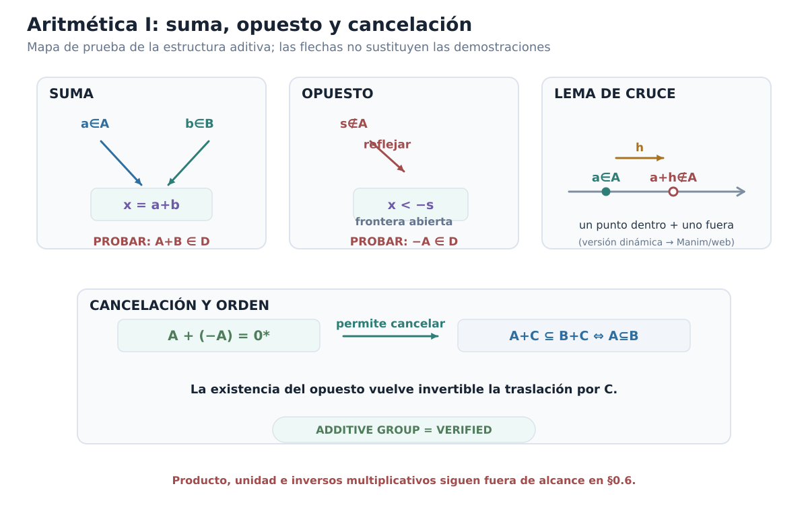
La aplicación \(q\mapsto q^*\) conserva la suma, el cero y los opuestos, además de preservar y reflejar el orden. El producto aún debe construirse. La diferencia se aprecia al intentar repetir la receta de la suma: los testigos negativos, que allí no causaban dificultades, cambian por completo lo que sucede al multiplicarlos.
Antes de seguir
Microcontrol 32
En la prueba de clausura de \(A+B\), explica por qué cualquier racional exterior \(u\notin A\) domina estrictamente a todo \(a\in A\).
Ver solución del microcontrol 32
Sean \(a\in A\) y \(u\notin A\). Si \(u=a\), la igualdad daría \(u\in A\). Si \(u<a\), la clausura hacia abajo daría la misma contradicción. Por tricotomía queda \(a<u\). Para la suma, exteriores \(u\notin A\) y \(v\notin B\) dominan así todos los testigos: \(a+b<u+v\). En particular, \(u+v\) no pertenece a \(A+B\) y garantiza que el resultado es propio.
Microcontrol 33
Demuestra de nuevo \(p^*+q^*=(p+q)^*\) buscando explícitamente, para \(x<p+q\), dos racionales \(a<p\) y \(b<q\) cuya suma sea exactamente \(x\).
Ver solución del microcontrol 33
Queremos demostrar
\[ p^*+q^*=(p+q)^*. \]
Si \(x\in p^*+q^*\), existen \(a<p\) y \(b<q\) con \(x=a+b\). Entonces
\[ x=a+b<p+q, \]
y por tanto \(x\in(p+q)^*\).
Para la inclusión contraria, supongamos
\[ x<p+q. \]
La diferencia \(p+q-x\) es racional y positiva. Tomemos
\[ \varepsilon=\frac{p+q-x}{2}>0, \]
y definamos
\[ a=p-\varepsilon, \qquad b=q-\varepsilon. \]
Entonces
\[ a<p, \qquad b<q, \]
de modo que \(a\in p^*\) y \(b\in q^*\). Además,
\[ a+b =p+q-2\varepsilon =p+q-(p+q-x) =x. \]
Así \(x\in p^*+q^*\). Las dos inclusiones dan
\[ \boxed{p^*+q^*=(p+q)^*.} \]
La elección simétrica de \(\varepsilon\) reparte exactamente entre los dos sumandos el margen que separa a \(x\) de \(p+q\).
Microcontrol 34
¿Por qué el conjunto \(\{-s:s\notin A\}\) no sirve en general como definición de \(-A\)? Examina el caso \(A=q^*\).
Ver solución del microcontrol 34
Consideremos primero
\[ \{-s:s\notin A\}. \]
Para ver el problema basta tomar una cortadura racional \(A=q^*\). Entonces
\[ s\notin q^* \quad\Longleftrightarrow\quad s\ge q. \]
Por tanto
\[ \{-s:s\notin q^*\} = \{t\in\mathbb Q:t\le -q\}. \]
Este conjunto tiene máximo, precisamente \(-q\). En consecuencia viola la condición de que una cortadura no tenga máximo.
Así, el simple reflejo del complemento produce un lado izquierdo cerrado en la frontera. La definición correcta
\[ -A = \{r\in\mathbb Q:\exists s\notin A\text{ con }r<-s\} \]
vuelve a abrir esa frontera: no toma sólo los puntos \(-s\), sino todos los racionales estrictamente menores que alguno de ellos.
En el caso racional esto recupera exactamente \((-q)^*\), pero sin introducir un punto final en la cortadura.
Microcontrol 35
En el lema de aproximación racional, ¿dónde se usa la propiedad arquimediana de \(\mathbb Q\)?
Ver solución del microcontrol 35
Tome \(a_0\in A\), \(u\notin A\) y \(h>0\) racional. Se tiene \(a_0<u\). Arquimedianidad de \(\mathbb Q\) proporciona \(n\) con \(nh>u-a_0\), luego \(a_0+nh>u\) y ese término está fuera de \(A\). En la lista finita \(a_0,a_0+h,\ldots,a_0+nh\), el primer término está dentro y el último fuera. El primer índice de salida \(k\ge1\) determina \(a=a_0+(k-1)h\in A\) con \(a+h\notin A\). No se ha usado una frontera real: el cruce se localiza por pasos racionales finitos.
Microcontrol 36
Sigue con detalle la inclusión \(0^*\subseteq A+(-A)\) e identifica para qué se introduce \(h=-x/2\).
Ver solución del microcontrol 36
Sea
\[ x\in0^*. \]
Entonces \(x<0\). Debemos escribir \(x\) como suma de un elemento de \(A\) y uno de \(-A\).
Definimos
\[ h=-\frac{x}{2}>0. \]
Esta elección tiene dos funciones simultáneas:
\[ x=-2h \]
y el lema de aproximación puede aplicarse porque \(h>0\).
El lema proporciona \(a\in A\) tal que
\[ a+h\notin A. \]
Escribamos
\[ s=a+h \]
y
\[ b=x-a. \]
Como \(x=-2h\),
\[ b=-2h-a<-h-a=-s. \]
Además \(s\notin A\). Por la definición de \(-A\), estas dos condiciones implican
\[ b\in-A. \]
Finalmente,
\[ x=a+b, \]
con \(a\in A\) y \(b\in-A\). Por tanto
\[ \boxed{x\in A+(-A).} \]
Como \(x<0\) era arbitrario,
\[ \boxed{0^*\subseteq A+(-A).} \]
El factor \(1/2\) crea exactamente el margen estricto necesario: \(b\) queda no sólo en \(-s\), sino estrictamente por debajo de \(-s\).
Microcontrol 37
Demuestra que \(A\subseteq B\) si y sólo si \(A+C\subseteq B+C\) usando el opuesto de \(C\).
Ver solución del microcontrol 37
Supongamos primero
\[ A\subseteq B. \]
Si \(x\in A+C\), entonces \(x=a+c\) para ciertos \(a\in A\) y \(c\in C\). Como \(A\subseteq B\), también \(a\in B\), y por tanto
\[ x\in B+C. \]
Así,
\[ A+C\subseteq B+C. \]
Para la recíproca, supongamos
\[ A+C\subseteq B+C. \]
La monotonía ya demostrada permite sumar \(-C\) a ambos lados:
\[ (A+C)+(-C) \subseteq (B+C)+(-C). \]
Por asociatividad,
\[ A+(C+(-C)) \subseteq B+(C+(-C)). \]
Como
\[ C+(-C)=0^* \]
y \(0^*\) es el neutro aditivo, obtenemos
\[ A\subseteq B. \]
Por consiguiente,
\[ \boxed{A\subseteq B\iff A+C\subseteq B+C.} \]
La posibilidad de cancelar \(C\) depende precisamente de que ya hayamos construido su opuesto aditivo.
Microcontrol 38
Verifica directamente que \(-(q^*)=(-q)^*\).
Ver solución del microcontrol 38
Queremos probar directamente
\[ -(q^*)=(-q)^*. \]
Sea \(x\in-(q^*)\). Por definición existe \(s\notin q^*\) tal que
\[ x<-s. \]
La condición \(s\notin q^*\) equivale a \(s\ge q\). Al cambiar de signo,
\[ -s\le -q. \]
Por tanto
\[ x<-s\le -q, \]
de modo que \(x<-q\) y
\[ x\in(-q)^*. \]
Esto prueba
\[ -(q^*)\subseteq(-q)^*. \]
Recíprocamente, si \(x\in(-q)^*\), entonces \(x<-q\). Tomamos
\[ s=q. \]
Como \(q\notin q^*\) y \(x<-q=-s\), la definición de \(-(q^*)\) da
\[ x\in-(q^*). \]
Así,
\[ \boxed{-(q^*)=(-q)^*.} \]
La construcción del opuesto en \(\mathcal D\) reproduce exactamente el opuesto racional sobre la copia \(q\mapsto q^*\).
Microcontrol 39
¿Qué parte exacta de la estructura de cuerpo falta todavía antes de poder certificar \(\mathbb Q\hookrightarrow\mathcal D\) como incrustación de cuerpos ordenados?
Ver solución del microcontrol 39
Al terminar la construcción aditiva, la copia racional conserva orden, suma, cero y opuestos. Falta definir un producto interno de cortaduras y probar sus leyes, la unidad \(1^*\), distributividad e inversos para elementos no nulos. También debe acreditarse \((pq)^*=p^*q^*\) y la compatibilidad multiplicativa del orden. Hasta entonces, la aritmética aditiva está demostrada y la estructura de cuerpo sigue pendiente.
La estructura aditiva está cerrada. En la próxima sección construiremos la multiplicación, la unidad y los inversos multiplicativos; sólo entonces podremos decidir si \(\mathcal D\) es realmente un cuerpo ordenado.
Ejercicios de la sección 0.6
Ejercicio 22. Construir una suma que permanezca dentro de \(\mathcal D\)
Sean \(A,B\in\mathcal D\). Define
\[ A+B=\{a+b:a\in A,\ b\in B\}. \]
Demuestra que esta fórmula determina una operación interna
\[ +:\mathcal D\times\mathcal D\longrightarrow\mathcal D. \]
Tu demostración debe verificar por separado las cuatro condiciones de cortadura para \(A+B\).
- Prueba que \(A+B\ne\varnothing\).
- Para demostrar que \(A+B\ne\mathbb Q\), elige \(u\notin A\) y \(v\notin B\) y demuestra primero el hecho auxiliar \(a<u\) para todo \(a\in A\) y \(b<v\) para todo \(b\in B\).
- Demuestra la clausura hacia abajo de \(A+B\) sin apelar a ninguna noción geométrica de frontera.
- Demuestra que \(A+B\) no tiene máximo.
Cierra explicando por qué escribir una fórmula para \(A+B\) no habría bastado, por sí solo, para definir una operación en \(\mathcal D\).
Ver solución del ejercicio 22
Sean \(A,B\in\mathcal D\) y definamos
\[ A+B=\{a+b:a\in A,\ b\in B\}. \]
Debemos demostrar que \(A+B\) vuelve a ser una cortadura.
No vaciedad. Como \(A\) y \(B\) son no vacíos, existen
\[ a_0\in A, \qquad b_0\in B. \]
Entonces
\[ a_0+b_0\in A+B, \]
de modo que \(A+B\ne\varnothing\).
Propiedad de ser propio. Como \(A\subsetneq\mathbb Q\) y \(B\subsetneq\mathbb Q\), podemos elegir
\[ u\notin A, \qquad v\notin B. \]
Afirmamos que todo \(a\in A\) satisface \(a<u\). Si \(u=a\), la igualdad daría \(u\in A\); si \(u<a\), la clausura hacia abajo daría la misma conclusión. Ambas contradicen \(u\notin A\). Por tanto
\[ a<u \]
para todo \(a\in A\). Del mismo modo,
\[ b<v \]
para todo \(b\in B\).
Así, para cualesquiera \(a\in A\) y \(b\in B\),
\[ a+b<u+v. \]
En consecuencia,
\[ u+v\notin A+B. \]
Luego \(A+B\ne\mathbb Q\).
Clausura hacia abajo. Sea
\[ x=a+b\in A+B \]
y sea \(y<x\). Definamos
\[ a'=y-b. \]
Como \(y<a+b\),
\[ a'<a. \]
La clausura hacia abajo de \(A\) da \(a'\in A\), y entonces
\[ y=a'+b\in A+B. \]
Ausencia de máximo. Sea
\[ x=a+b\in A+B. \]
Como \(A\) no tiene máximo, existe \(a'\in A\) con \(a<a'\). Por tanto
\[ x=a+b<a'+b, \]
y \(a'+b\in A+B\). Ningún elemento de \(A+B\) es máximo.
Las cuatro condiciones se cumplen. Por tanto
\[ \boxed{A+B\in\mathcal D.} \]
Así la regla define realmente
\[ +:\mathcal D\times\mathcal D\longrightarrow\mathcal D. \]
La última observación es lógica: una fórmula puede producir un subconjunto de \(\mathbb Q\) sin producir una cortadura. Para definir una operación interna en \(\mathcal D\) hacía falta demostrar la clausura del codominio.
Referencia visual. Véase la figura C00-F06 del texto principal, Aritmética I: suma, opuesto y cancelación, como síntesis posterior de este argumento.
Ejercicio 23. Recuperar la suma racional y localizar el cero
Sean \(p,q\in\mathbb Q\).
- Demuestra, por doble inclusión, que
\[ p^*+q^*=(p+q)^*. \]
En la inclusión difícil, si \(x<p+q\), construye explícitamente \(a<p\) y \(b<q\) tales que \(x=a+b\). 2. Deduce que
\[ \iota_{\mathbb Q}(p+q) = \iota_{\mathbb Q}(p)+\iota_{\mathbb Q}(q). \]
- Demuestra directamente que
\[ A+0^*=A \]
para toda \(A\in\mathcal D\). 4. Usando la definición de la suma y la aritmética racional, demuestra que la suma de cortaduras es conmutativa y asociativa.
Concluye qué parte de la estructura aditiva racional está ya certificada y qué parte de la estructura de cuerpo sigue pendiente.
Ver solución del ejercicio 23
Sean \(p,q\in\mathbb Q\).
Primero probemos
\[ p^*+q^*\subseteq(p+q)^*. \]
Si \(x\in p^*+q^*\), existen \(a<p\) y \(b<q\) con \(x=a+b\). Entonces
\[ x=a+b<p+q, \]
de modo que \(x\in(p+q)^*\).
Para la inclusión recíproca, sea \(x<p+q\). Definimos
\[ \varepsilon=\frac{p+q-x}{2}>0 \]
y
\[ a=p-\varepsilon, \qquad b=q-\varepsilon. \]
Entonces \(a<p\) y \(b<q\), por lo que
\[ a\in p^*, \qquad b\in q^*. \]
Además,
\[ a+b=p+q-2\varepsilon=x. \]
Así \(x\in p^*+q^*\). Concluimos
\[ \boxed{p^*+q^*=(p+q)^*.} \]
Como \(\iota_{\mathbb Q}(r)=r^*\),
\[ \boxed{ \iota_{\mathbb Q}(p+q) = \iota_{\mathbb Q}(p)+\iota_{\mathbb Q}(q). } \]
Ahora probemos que \(0^*\) es neutro aditivo. Si \(x\in A+0^*\), existen \(a\in A\) y \(b<0\) con
\[ x=a+b<a. \]
La clausura hacia abajo de \(A\) da \(x\in A\). Por tanto
\[ A+0^*\subseteq A. \]
Recíprocamente, sea \(x\in A\). Como \(A\) no tiene máximo, existe \(a\in A\) con \(x<a\). Definimos
\[ b=x-a<0. \]
Entonces \(b\in0^*\) y
\[ x=a+b\in A+0^*. \]
Así
\[ \boxed{A+0^*=A.} \]
Por conmutatividad, también \(0^*+A=A\).
La conmutatividad se obtiene directamente: si \(x=a+b\) con \(a\in A\) y \(b\in B\), entonces
\[ x=b+a\in B+A. \]
Intercambiando \(A\) y \(B\) se obtiene la igualdad
\[ \boxed{A+B=B+A.} \]
Para la asociatividad, \(x\in(A+B)+C\) si y sólo si existen \(a\in A\), \(b\in B\), \(c\in C\) tales que
\[ x=(a+b)+c. \]
Por asociatividad en \(\mathbb Q\),
\[ (a+b)+c=a+(b+c), \]
y esta última forma caracteriza la pertenencia a \(A+(B+C)\). Por extensionalidad,
\[ \boxed{(A+B)+C=A+(B+C).} \]
Al finalizar este ejercicio ya sabemos que la suma de cortaduras es interna, asociativa y conmutativa, que \(0^*\) es su neutro y que la copia racional conserva la suma. Falta todavía construir y verificar los inversos aditivos, y toda la estructura multiplicativa continúa fuera de alcance.
Referencia visual. Véase la figura C00-F06 del texto principal, Aritmética I: suma, opuesto y cancelación, como síntesis posterior de este argumento.
Ejercicio 24. Construir el opuesto sin introducir un punto final
Sea \(A\in\mathcal D\).
Considera primero el conjunto ingenuo
\[ N(A)=\{-s:s\notin A\}. \]
- Examina el caso \(A=q^*\) y demuestra que \(N(q^*)\) no es una cortadura.
- Define entonces
\[ -A = \{x\in\mathbb Q: \exists s\notin A\text{ tal que }x<-s\}. \]
Demuestra que \(-A\in\mathcal D\) verificando las cuatro condiciones de cortadura. 3. Demuestra que, para todo \(q\in\mathbb Q\),
\[ -(q^*)=(-q)^*. \]
Explica por qué la desigualdad estricta en la definición de \(-A\) es estructuralmente necesaria y no un detalle notacional.
Ver solución del ejercicio 24
Consideremos primero
\[ N(A)=\{-s:s\notin A\}. \]
Si \(A=q^*\), entonces
\[ s\notin q^* \quad\Longleftrightarrow\quad s\ge q. \]
Por tanto
\[ N(q^*) = \{-s:s\ge q\} = \{t\in\mathbb Q:t\le -q\}. \]
Este conjunto tiene máximo, a saber \(-q\). Luego no es una cortadura.
La reparación consiste en tomar la clausura inferior estricta:
\[ -A = \{x\in\mathbb Q: \exists s\notin A\text{ tal que }x<-s\}. \]
Verifiquemos las cuatro condiciones.
No vaciedad. Como \(A\) es propio, existe \(s\notin A\). Entonces
\[ -s-1<-s, \]
de modo que \(-s-1\in-A\).
Propiedad de ser propio. Como \(A\) no es vacío, tomemos \(a\in A\). Afirmamos que \(-a\notin-A\). Si \(-a\in-A\), existiría \(s\notin A\) con
\[ -a<-s, \]
equivalentemente \(s<a\). La clausura hacia abajo de \(A\) implicaría \(s\in A\), contradicción.
Clausura hacia abajo. Si \(x\in-A\), existe \(s\notin A\) con \(x<-s\). Si \(y<x\), entonces
\[ y<x<-s, \]
y el mismo \(s\) demuestra que \(y\in-A\).
Ausencia de máximo. Sea \(x\in-A\). Existe \(s\notin A\) con \(x<-s\). El racional
\[ x'=\frac{x-s}{2} = \frac{x+(-s)}{2} \]
satisface
\[ x<x'<-s. \]
Así \(x'\in-A\) y \(x'>x\).
Por tanto
\[ \boxed{-A\in\mathcal D.} \]
Finalmente, para \(A=q^*\), si \(x\in-(q^*)\), existe \(s\notin q^*\) con \(x<-s\). La condición \(s\notin q^*\) equivale a \(s\ge q\), luego
\[ -s\le -q \]
y por tanto \(x<-q\). Así \(x\in(-q)^*\).
Recíprocamente, si \(x<-q\), tomamos \(s=q\). Como \(q\notin q^*\) y \(x<-q=-s\), obtenemos \(x\in-(q^*)\).
Luego
\[ \boxed{-(q^*)=(-q)^*.} \]
La desigualdad estricta es indispensable: excluye el punto extremo que haría aparecer un máximo. La definición conserva la convención esencial de toda cortadura: lado izquierdo sin punto final.
Referencia visual. Véase la figura C00-F06 del texto principal, Aritmética I: suma, opuesto y cancelación, como síntesis posterior de este argumento.
Ejercicio 25. Trazar la prueba de que el opuesto es un inverso aditivo
Sea \(A\in\mathcal D\).
Primero demuestra el lema siguiente:
Si \(h\in\mathbb Q\) y \(h>0\), existe \(a\in A\) tal que \(a+h\notin A\).
Tu prueba debe señalar exactamente dónde se usa la propiedad arquimediana de \(\mathbb Q\).
Después usa ese lema para demostrar
\[ A+(-A)=0^*. \]
Organiza la prueba por doble inclusión y, en la inclusión
\[ 0^*\subseteq A+(-A), \]
explica por qué para \(x<0\) conviene introducir
\[ h=-\frac{x}{2}. \]
Finalmente demuestra la equivalencia de traslación
\[ A\subseteq B \quad\Longleftrightarrow\quad A+C\subseteq B+C \]
para \(A,B,C\in\mathcal D\), y deduce la versión estricta.
Cierra con una lista breve de dependencias: qué parte usa clausura hacia abajo, qué parte usa existencia de racionales exteriores, qué parte usa arquimedianidad y qué parte usa ya la existencia del opuesto.
Ver solución del ejercicio 25
Comenzamos con el lema.
Sea \(h\in\mathbb Q\), \(h>0\). Elegimos
\[ a_0\in A \qquad\text{y}\qquad u\notin A. \]
Como \(a_0\in A\) y \(u\notin A\), necesariamente \(a_0<u\).
La propiedad arquimediana de \(\mathbb Q\) se usa exactamente ahora: existe \(n\in\mathbb N\) tal que
\[ nh>u-a_0. \]
Por tanto
\[ a_0+nh>u. \]
Ese racional no puede pertenecer a \(A\), porque si perteneciera, la clausura hacia abajo y \(u<a_0+nh\) obligarían a \(u\in A\).
En la lista finita
\[ a_0,\ a_0+h,\ a_0+2h,\ldots,a_0+nh \]
el primer término pertenece a \(A\) y el último no. Sea \(k\ge1\) el primer índice con
\[ a_0+kh\notin A. \]
Entonces, por minimalidad,
\[ a:=a_0+(k-1)h\in A, \]
mientras que
\[ a+h\notin A. \]
Queda demostrado el lema.
Ahora probemos
\[ A+(-A)=0^*. \]
Sea \(x\in A+(-A)\). Existen \(a\in A\) y \(b\in-A\) con \(x=a+b\). Por definición de \(-A\), existe \(s\notin A\) tal que
\[ b<-s. \]
Como \(a\in A\) y \(s\notin A\), tenemos \(a<s\). Luego
\[ x=a+b<a-s<0. \]
Por tanto \(x\in0^*\), y así
\[ A+(-A)\subseteq0^*. \]
Para la otra inclusión, sea \(x\in0^*\), es decir, \(x<0\). Definimos
\[ h=-\frac{x}{2}>0. \]
Esta elección hace que
\[ x=-2h, \]
lo que permitirá fabricar un sumando que quede estrictamente por debajo del negativo de un racional exterior.
Por el lema existe \(a\in A\) tal que
\[ a+h\notin A. \]
Sea
\[ s=a+h \]
y definamos
\[ b=x-a. \]
Como \(x=-2h\),
\[ b=-2h-a<-h-a=-s. \]
Dado que \(s\notin A\), la desigualdad \(b<-s\) implica \(b\in-A\). Finalmente,
\[ x=a+b \]
con \(a\in A\) y \(b\in-A\), por lo que \(x\in A+(-A)\).
Así,
\[ 0^*\subseteq A+(-A), \]
y por tanto
\[ \boxed{A+(-A)=0^*.} \]
Pasemos a la traslación del orden.
Si \(A\subseteq B\), cualquier elemento de \(A+C\) tiene forma \(a+c\) con \(a\in A\subseteq B\) y \(c\in C\). Por tanto
\[ A+C\subseteq B+C. \]
Recíprocamente, supongamos
\[ A+C\subseteq B+C. \]
La monotonía recién demostrada permite sumar \(-C\) a ambos lados:
\[ (A+C)+(-C) \subseteq (B+C)+(-C). \]
Por asociatividad y por \(C+(-C)=0^*\),
\[ A+0^*\subseteq B+0^*. \]
Luego
\[ A\subseteq B. \]
Así,
\[ \boxed{ A\subseteq B \quad\Longleftrightarrow\quad A+C\subseteq B+C. } \]
Como la traslación tiene inversa —sumar \(-C\)— también conserva y refleja desigualdad estricta:
\[ \boxed{ A\subsetneq B \quad\Longleftrightarrow\quad A+C\subsetneq B+C. } \]
El balance de dependencias es:
- clausura hacia abajo: permite comparar elementos interiores con racionales exteriores y justificar pasos del lema;
- existencia de racionales exteriores: se usa para elegir \(u\notin A\) y para la definición del opuesto;
- arquimedianidad de \(\mathbb Q\): se usa exactamente para elegir \(n\) con \(nh>u-a_0\);
- existencia del opuesto ya verificado: se usa para invertir una traslación y recuperar \(A\subseteq B\) desde \(A+C\subseteq B+C\).
La prueba no usa producto ni ninguna propiedad de completitud.
Nota visual. El barrido racional por pasos de tamaño \(h\) queda diferido a la versión Manim/web; la figura C00-F06 ofrece únicamente el contexto estático del lema de cruce.
Ejercicio 26. Auditar un cierre aditivo demasiado rápido
Un informe afirma:
«Definimos \(A+B=\{a+b:a\in A,\ b\in B\}\) y \(-A=\{-a:a\in A\}\). Como ambas fórmulas usan sólo racionales, sus resultados pertenecen automáticamente a \(\mathcal D\). Además, como \(A+(-A)\) representa intuitivamente cero, ya tenemos un grupo ordenado. Por tanto podemos cancelar \(C\) en \(A+C\subseteq B+C\) y concluir \(A\subseteq B\).»
Audita el informe.
- Localiza la primera inferencia inválida.
- Explica por qué una fórmula con valores racionales no garantiza que el resultado sea una cortadura.
- Demuestra con un ejemplo racional que \(\{-a:a\in A\}\) no puede ser la definición correcta del opuesto.
- Explica qué verificaciones deben preceder a la afirmación \(A+(-A)=0^*\).
- Explica por qué la cancelación usada al final sólo queda justificada después de construir y verificar el inverso aditivo.
- Reordena el argumento en una cadena lógica correcta que termine exactamente en
\[ (\mathcal D,+,\le_{\mathcal D}) \text{ es un grupo abeliano linealmente ordenado}. \]
No uses producto, unidad multiplicativa ni inversos multiplicativos.
Ver solución del ejercicio 26
La primera inferencia inválida aparece inmediatamente después de escribir las fórmulas. De que
\[ A+B\subseteq\mathbb Q \]
o de que un conjunto esté formado por racionales no se sigue que sea una cortadura. Para pertenecer a \(\mathcal D\) deben verificarse no vaciedad, propiedad de ser propio, clausura hacia abajo y ausencia de máximo.
El segundo error está en la fórmula
\[ -A=\{-a:a\in A\}. \]
Tomemos, por ejemplo,
\[ A=0^*=\{a\in\mathbb Q:a<0\}. \]
Entonces
\[ \{-a:a\in0^*\} = \{r\in\mathbb Q:r>0\}. \]
Este conjunto no es cerrado hacia abajo: \(1\) pertenece a él, pero \(-1<1\) y \(-1\) no pertenece. Por tanto no es una cortadura.
Incluso la variante
\[ \{-s:s\notin A\} \]
falla en general: para \(A=q^*\) produce \(\{t:t\le -q\}\), que tiene máximo.
La definición correcta es
\[ -A = \{x\in\mathbb Q: \exists s\notin A\text{ tal que }x<-s\}, \]
y antes de usarla algebraicamente hay que demostrar que \(-A\in\mathcal D\).
Tampoco basta la intuición para afirmar
\[ A+(-A)=0^*. \]
Antes deben estar disponibles:
- la clausura de la suma en \(\mathcal D\);
- la construcción correcta de \(-A\) y su clausura;
- el lema de aproximación racional;
- las dos inclusiones \(A+(-A)\subseteq0^*\) y \(0^*\subseteq A+(-A)\).
La cancelación del último paso del informe también estaba adelantada. Para pasar de
\[ A+C\subseteq B+C \]
a
\[ A\subseteq B \]
necesitamos traducir por \(-C\). Esa maniobra sólo es legítima después de haber probado que \(-C\) existe como cortadura y que
\[ C+(-C)=0^*. \]
La cadena lógica correcta es, por tanto,
\[ \boxed{ \begin{aligned} &\text{definir suma}\\ &\Longrightarrow \text{probar clausura}\\ &\Longrightarrow \text{probar asociatividad y conmutatividad}\\ &\Longrightarrow \text{identificar }0^*\\ &\Longrightarrow \text{construir y cerrar }-A\\ &\Longrightarrow \text{probar }A+(-A)=0^*\\ &\Longrightarrow \text{obtener el grupo abeliano}\\ &\Longrightarrow \text{probar compatibilidad por traslaciones}. \end{aligned} } \]
Sólo entonces está justificado concluir
\[ \boxed{ (\mathcal D,+,\le_{\mathcal D}) \text{ es un grupo abeliano linealmente ordenado}. } \]
El estado algebraico sigue siendo parcial: la multiplicación, la unidad multiplicativa y los inversos multiplicativos todavía no forman parte del sistema construido.
0.7. Dar aritmética a las cortaduras II: producto e inverso
Toda cortadura contiene racionales negativos de magnitud arbitrariamente grande. Si fijamos \(a_0\in A\), cualquier entero negativo \(-n<a_0\) pertenece a \(A\). Para dos cortaduras \(A,B\), podemos elegir \(n\) tan grande que \(-n\) pertenezca a ambas. El conjunto de productos \(\{ab:a\in A,b\in B\}\) contiene entonces valores \(n^2\) arbitrariamente grandes; ningún racional exterior podría dominarlo. Incluso con \(A=B=1^*\), dos testigos situados muy a la izquierda producen valores positivos muy a la derecha.
Para construir la multiplicación conviene empezar por cortaduras positivas y por testigos positivos. El significado de «positiva» ya está fijado por el orden: \(A>0^*\) quiere decir \(0^*\subsetneq A\). Esta condición equivale a \(0\in A\) y también a la existencia de algún \(a\in A\) con \(a>0\). En efecto, una inclusión estricta proporciona \(x\in A\) con \(x\ge0\), y la clausura inferior da \(0\in A\) si \(x>0\). Si \(0\in A\), la ausencia de máximo proporciona un elemento positivo. Y si \(a\in A\) es positivo, todos los racionales negativos pertenecen a \(A\), mientras que \(a\) atestigua que la inclusión de \(0^*\) es estricta.
Para \(A>0^*\) escribamos \(A_{>0}=\{a\in A:a>0\}\). Es un conjunto no vacío. Además, todo exterior \(u\notin A\) es positivo, pues está estrictamente por encima de cualquier elemento de \(A_{>0}\). Este hecho nos permitirá controlar los productos con desigualdades racionales orientadas correctamente.
Definición. Para \(A,B>0^*\) ponemos \[ A\cdot_+B=\{x\in\mathbb Q:\exists a\in A_{>0}\ \exists b\in B_{>0}:x<ab\}. \] La desigualdad estricta reúne todo el lado izquierdo de los productos admisibles y deja espacio por encima de cada elemento. El dominio de \(\cdot_+\) consta únicamente de pares de cortaduras estrictamente positivas.
Proposición. Si \(A,B>0^*\), entonces \(A\cdot_+B\) es una cortadura estrictamente positiva.
Demostración. Elijamos \(a\in A_{>0}\) y \(b\in B_{>0}\). Como \(0<ab\), tenemos \(0\in A\cdot_+B\), y el conjunto es no vacío. Para exteriores \(u\notin A\), \(v\notin B\), sabemos \(u,v>0\). Cualesquiera testigos positivos satisfacen \(a<u\), \(b<v\), y por ello \(ab<ub<uv\). En consecuencia, \(uv\notin A\cdot_+B\): el conjunto es propio.
Si \(x<ab\) y \(y<x\), los mismos testigos dan \(y<ab\). También el punto medio \(z=(x+ab)/2\) cumple \(x<z<ab\), así que pertenece al conjunto y supera a \(x\). Quedan probadas la clausura inferior y la ausencia de máximo. Al contener a \(0\), la cortadura es positiva. \(\square\)
Para racionales \(p,q>0\), esta regla recupera \((pq)^*\). La inclusión \(p^*\cdot_+q^*\subseteq(pq)^*\) se sigue de \(x<ab<pb<pq\) cuando \(0<a<p\) y \(0<b<q\). Para la contraria, sea \(x<pq\). Si \(x\le0\), bastan \(a=p/2\) y \(b=q/2\). Si \(x>0\), la desigualdad \(x/q<p\) deja un intervalo racional en el que elegir \[ \frac{x}{q}<a<p. \] Con ese \(a>0\), tenemos \(x/a<q\), y podemos elegir \[ \frac{x}{a}<b<q. \] Entonces \(a\in p^*_{>0}\), \(b\in q^*_{>0}\) y \(x<ab\). Las dos aplicaciones de densidad introducen testigos estrictamente interiores cuyo producto sigue por encima de \(x\). Por doble inclusión, \[ p^*\cdot_+q^*=(pq)^*\qquad(p,q>0). \]
Los testigos positivos permiten estudiar cómo se comporta esta operación al cambiar el orden o la agrupación de sus factores. La conmutatividad positiva se deduce intercambiando los testigos \(a,b\) en \(x<ab\). Para la asociatividad hay que insertar un testigo intermedio: el producto definido por una desigualdad no permite usar sin más a \(ab\) como elemento de \(A\cdot_+B\).
Proposición. Para \(A,B,C>0^*\), \[ (A\cdot_+B)\cdot_+C=A\cdot_+(B\cdot_+C). \]
Demostración. Si \(x\in(A\cdot_+B)\cdot_+C\), existen \(u\in(A\cdot_+B)_{>0}\) y \(c\in C_{>0}\) con \(x<uc\), y luego \(a\in A_{>0}\), \(b\in B_{>0}\) con \(u<ab\). Así \(x<uc<abc\). Si \(x\le0\), elijamos \(0<v<bc\); si \(x>0\), elijamos \(x/a<v<bc\). En ambos casos \(v>0\), \(v\in B\cdot_+C\) y \(x<av\), lo que da \(x\in A\cdot_+(B\cdot_+C)\).
En la otra dirección, si \(x\in A\cdot_+(B\cdot_+C)\), hay \(a\in A_{>0}\) y \(v\in(B\cdot_+C)_{>0}\) con \(x<av\), y \(b\in B_{>0}\), \(c\in C_{>0}\) con \(v<bc\). De nuevo \(x<abc\). Si \(x\le0\), tomamos \(0<u<ab\); si \(x>0\), tomamos \(x/c<u<ab\). Entonces \(u\in(A\cdot_+B)_{>0}\) y \(x<uc\), como exige la pertenencia a \((A\cdot_+B)\cdot_+C\). La densidad racional permite todas las elecciones indicadas. \(\square\)
La cortadura \(1^*\) será la unidad. Para \(A>0^*\), si \(x\in A\cdot_+1^*\), hay \(a\in A_{>0}\) y \(0<b<1\) con \(x<ab<a\), de donde \(x\in A\). Recíprocamente, si \(x\in A\) y \(x\le0\), cualquier \(a\in A_{>0}\) junto con \(b=1/2\) sirve. Si \(x>0\), elegimos \(a\in A\) con \(a>x\) y después un racional \(x/a<b<1\). Así \(x<ab\) y \(x\in A\cdot_+1^*\). Por tanto \[ A\cdot_+1^*=A=1^*\cdot_+A. \]
La ley que conecta esta multiplicación con la suma necesita su propia demostración. Una suma positiva de dos cortaduras positivas puede representarse mediante sumandos racionales positivos, aunque los testigos iniciales no lo sean. En efecto, sea \(u=b_0+c_0>0\), con \(b_0\in B\), \(c_0\in C\). Si ambos son positivos, ya tenemos la representación buscada. Si \(b_0\le0\), elijamos \(d\in B_{>0}\) y \(0<b<\min\{u,d\}\). Entonces \(b\in B_{>0}\), y \(c=u-b\) satisface \(0<c<c_0\), por lo que \(c\in C_{>0}\). Si \(c_0\le0\), intercambiamos los papeles: elegimos \(e\in C_{>0}\), \(0<c<\min\{u,e\}\) y ponemos \(b=u-c\), que cumple \(0<b<b_0\) y pertenece a \(B\). Los dos testigos originales no pueden ser simultáneamente no positivos porque su suma es \(u>0\).
Proposición. Si \(A,B,C>0^*\), entonces \[ A\cdot_+(B+C)=(A\cdot_+B)+(A\cdot_+C). \]
Demostración. La cortadura \(B+C\) es positiva porque contiene a \(0=0+0\). Sea \(x\in A\cdot_+(B+C)\). Existen \(a\in A_{>0}\) y \(u\in(B+C)_{>0}\) con \(x<au\). Por el argumento anterior podemos escribir \(u=b+c\), con \(b\in B_{>0}\) y \(c\in C_{>0}\). Tenemos \(x<ab+ac\). Elijamos un racional \(y\) con \[ x-ac<y<ab \] y pongamos \(z=x-y\). La desigualdad superior da \(y\in A\cdot_+B\); la inferior da \(z<ac\), y por ello \(z\in A\cdot_+C\). Como \(x=y+z\), obtenemos una inclusión.
Para la contraria, sea \(x=y+z\) con \(y\in A\cdot_+B\) y \(z\in A\cdot_+C\). Existen \(a_1,a_2\in A_{>0}\), \(b\in B_{>0}\) y \(c\in C_{>0}\) tales que \(y<a_1b\) y \(z<a_2c\). El máximo \(m=\max\{a_1,a_2\}\) pertenece a \(A\), pues es uno de los dos testigos. La ausencia de máximo permite elegir \(a\in A\) con \(a>m\). Al ser \(b,c\) positivos, \[ x=y+z<a_1b+a_2c<ab+ac=a(b+c). \] Además \(b+c\in(B+C)_{>0}\). Los testigos \(a,b+c\) prueban que \(x\in A\cdot_+(B+C)\). \(\square\)
Reemplazar los dos testigos de \(A\) por uno mayor que ambos permite reunir los productos bajo un factor común; la distributividad racional se aplica a esos testigos y produce la inclusión entre cortaduras.
Podemos extender el producto al conjunto entero. En el grupo ordenado de §0.6, toda cortadura no nula es positiva o tiene opuesto positivo; además \(-(-A)=A\). Definimos \[ A\cdot B= \begin{cases} 0^*,&A=0^*\text{ o }B=0^*,\\ A\cdot_+B,&A>0^*,\ B>0^*,\\ (-A)\cdot_+(-B),&A<0^*,\ B<0^*,\\ -\bigl(A\cdot_+(-B)\bigr),&A>0^*>B,\\ -\bigl((-A)\cdot_+B\bigr),&B>0^*>A. \end{cases} \] Los casos son disjuntos y exhaustivos por la tricotomía. Cada aparición de \(\cdot_+\) recibe cortaduras estrictamente positivas, y tomar un opuesto conserva \(\mathcal D\). La regla determina así una operación \(\mathcal D\times\mathcal D\to\mathcal D\). El producto de dos factores no nulos es positivo cuando tienen el mismo signo y negativo cuando tienen signos distintos. Esta separación usa el orden lineal clásico; no afirma que el signo de una cortadura arbitrariamente representada pueda decidirse por un algoritmo.
La definición separa en cada factor una parte positiva y la aplicación eventual del opuesto. Toda cortadura no nula se escribe de manera única como \(P\) o \(-P\), con \(P>0^*\). Esta representación permite seguir el signo y la parte positiva al agrupar tres factores. Si \(\epsilon\in\{+1,-1\}\) y \(P>0^*\), escribamos \(\epsilon P\) como abreviatura de \(P\) cuando \(\epsilon=+1\) y de \(-P\) cuando \(\epsilon=-1\). Esta notación sólo aplica o deja de aplicar el opuesto; no presupone un producto de cortaduras. Las cuatro ramas no nulas de la definición dicen exactamente \[ (\epsilon P)(\eta Q)=(\epsilon\eta)(P\cdot_+Q), \qquad \epsilon,\eta\in\{+1,-1\},\quad P,Q>0^*. \] A la derecha, \(\epsilon\eta\) es el producto de dos signos racionales. Como \(P\cdot_+Q>0^*\), podemos aplicar otra vez esta regla al multiplicar por un tercer factor \(\theta R\). Las dos agrupaciones tienen signos \((\epsilon\eta)\theta\) y \(\epsilon(\eta\theta)\) y partes positivas \((P\cdot_+Q)\cdot_+R\) y \(P\cdot_+(Q\cdot_+R)\). Los signos coinciden por aritmética racional y las partes positivas por la proposición de asociatividad. Si hay un factor cero, las dos agrupaciones valen \(0^*\) por definición. Queda probada la asociatividad general.
Intercambiar \(\epsilon,P\) con \(\eta,Q\) en la misma fórmula y usar la conmutatividad positiva demuestra \(AB=BA\) para factores no nulos; si hay un cero, ambos productos son cero. La fórmula también prueba, cambiando un signo y usando la involutividad del opuesto, \[ (-A)B=-(AB),\qquad A(-B)=-(AB),\qquad (-A)(-B)=AB. \] Si algún factor es cero, estas identidades se reducen a \(-0^*=0^*\). Por su parte, la unidad positiva ya demostrada y las ramas con cero o con un factor negativo dan, para todo \(A\), \[ A1^*=A=1^*A. \] En el caso negativo la cuenta es \(A1^*=-\bigl((-A)\cdot_+1^*\bigr)=-(-A)=A\). Finalmente, \(1^*\ne0^*\) porque la aplicación racional conserva estrictamente \(0<1\).
Las reglas de signo permiten recuperar el producto racional completo. Si \(p,q<0\), usamos \(-(p^*)=(-p)^*\) para obtener \[ p^*q^*=(-p)^*\cdot_+(-q)^*=((-p)(-q))^*=(pq)^*. \] Si \(p>0>q\), resulta \[ p^*q^*=-\bigl(p^*\cdot_+(-q)^*\bigr) =-\bigl((p(-q))^*\bigr)=(pq)^*. \] El caso \(q>0>p\) se obtiene intercambiando los factores mediante la conmutatividad recién probada. Con un factor cero, ambos miembros son \(0^*\). Junto con el caso positivo, tenemos \(p^*q^*=(pq)^*\) para todos los racionales \(p,q\).
Al distribuir un producto aparece una dificultad que la asociatividad no presentaba. Conocer los signos de \(B\) y \(C\) no determina el signo de \(B+C\) cuando uno es positivo y el otro negativo: también hay que comparar sus magnitudes. Esa comparación nos permitirá expresar el caso mixto mediante una suma de cortaduras positivas, donde la distributividad ya está demostrada.
Fijemos primero \(A>0^*\). Si \(B=0^*\), la igualdad \(A(B+C)=AB+AC\) se reduce a \(AC=0^*+AC\); si \(C=0^*\), se reduce a \(AB=AB+0^*\). Para \(B,C>0^*\) ya está demostrada. Si ambos son negativos, pongamos \(B=-B_0\), \(C=-C_0\), con \(B_0,C_0>0^*\). La ley aditiva del opuesto y las reglas de signo dan \[ \begin{aligned} A(B+C)&=A\bigl(-(B_0+C_0)\bigr)\\ &=-\bigl(A(B_0+C_0)\bigr)\\ &=-(AB_0+AC_0)\\ &=(-AB_0)+(-AC_0)=AB+AC. \end{aligned} \] La única distributividad empleada en esta cuenta es la positiva.
Supongamos \(B>0^*>C\) y escribamos \(C_0=-C>0^*\). Debemos comparar \(B\) y \(C_0\). Si son iguales, \(B+C=0^*\) y \(AB+AC=AB-AB=0^*\), así que la igualdad se cumple. Si \(C_0<B\), la traslación del orden da \[ D=B-C_0>0^*,\qquad C_0+D=B. \] Podemos aplicar la distributividad positiva a esta última suma: \(AB=AC_0+AD\). Sumando \(-AC_0\) y usando las leyes del grupo, obtenemos \[ AD=AB-AC_0=AB+AC. \] Como \(D=B+C\), es la igualdad buscada. Si \(B<C_0\), pongamos \(D=C_0-B>0^*\). Entonces \(B+D=C_0\), y la distributividad positiva da \(AC_0=AB+AD\). Al sumar \(-AC_0\) a ambos miembros y reagrupar resulta \[ AB-AC_0=-AD. \] Ahora \(B+C=-D\) y \(AC=-AC_0\); por la regla de signos, \[ A(B+C)=A(-D)=-AD=AB-AC_0=AB+AC. \] Si \(B<0^*<C\), intercambiamos \(B,C\): la conmutatividad aditiva transforma \(A(C+B)=AC+AB\) en la igualdad requerida. Así se cubren todos los signos de los sumandos con \(A\) positivo.
Para \(A<0^*\) pongamos \(A_0=-A>0^*\). La identidad recién establecida, las reglas de signo y la ley aditiva del opuesto permiten escribir \[ \begin{aligned} A(B+C)&=-\bigl(A_0(B+C)\bigr)\\ &=-(A_0B+A_0C)\\ &=(-A_0B)+(-A_0C)=AB+AC. \end{aligned} \] Para \(A=0^*\) ambos miembros son cero. Hemos probado la distributividad para todos \(A,B,C\in\mathcal D\). La ley por la derecha se obtiene usando la conmutatividad multiplicativa: \[ A(B+C)=AB+AC,\qquad (B+C)A=BA+CA. \]
Para completar la aritmética queda construir el inverso de cada cortadura no nula. Cuando \(A>0^*\), un exterior \(s\notin A\) es positivo y queda por encima de todos los racionales positivos interiores. Su recíproco racional \(1/s\) proporciona una aproximación desde abajo a la posición inversa. Definimos \[ A^{-1,+}=\{q\in\mathbb Q:q\le0\text{ o }\exists s\in\mathbb Q, \ s>0,\ s\notin A,\ q<1/s\}. \] La cláusula \(q\le0\) incluye desde el comienzo toda la parte no positiva que deberá contener una cortadura positiva. De hecho, puesto que existe un exterior positivo, estos racionales también satisfacen la segunda cláusula con ese exterior; la primera hace inmediata su pertenencia y evita repetir la elección.
Proposición. Si \(A>0^*\), entonces \(A^{-1,+}\) es una cortadura estrictamente positiva y \[ A\cdot_+A^{-1,+}=1^*. \]
Demostración. El conjunto contiene a \(0\). Para probar que es propio, elijamos \(a\in A_{>0}\). El racional \(1/a\) no puede pertenecer por la primera cláusula. Si perteneciera por la segunda, algún \(s>0\) exterior satisfaría \(1/a<1/s\), es decir, \(s<a\). Eso contradice que todo exterior está por encima de \(a\).
La clausura inferior se conserva en ambas cláusulas: de \(r<q\le0\) se sigue \(r\le0\); de \(r<q<1/s\) se sigue \(r<1/s\). Para la ausencia de máximo, si \(q<0\) podemos superarlo con \(0\). Si \(q=0\), elegimos un exterior \(s>0\) y lo superamos con \(1/(2s)\), que pertenece al conjunto. Si \(q>0\) pertenece, hay un exterior \(s>0\) con \(q<1/s\), y el punto medio entre ambos proporciona otro elemento mayor. Es una cortadura y, al contener a \(0\), es positiva.
Sea ahora \(x\in A\cdot_+A^{-1,+}\). Existen \(a\in A_{>0}\) y \(b\in(A^{-1,+})_{>0}\) con \(x<ab\). La pertenencia de \(b>0\) proporciona \(s>0\), \(s\notin A\), con \(b<1/s\). Como \(a<s\), \[ x<ab<a/s<1. \] Así \(A\cdot_+A^{-1,+}\subseteq1^*\).
Para la inclusión contraria tomemos \(x<1\). Si \(x\le0\), dos testigos positivos cualesquiera, uno de cada cortadura, dan \(x<ab\). Supongamos \(0<x<1\). Necesitamos \(a\in A_{>0}\) y un exterior positivo \(s\) tales que el intervalo \((x/a,1/s)\) sea no vacío; dentro de él podremos elegir el testigo \(b\). El lema de aproximación permite acercar un interior y un exterior, pero debemos escoger antes su distancia de modo que la inversión deje abierto ese intervalo.
Fijemos \(c\in A_{>0}\) y elijamos un racional \[ 0<h<(1-x)c. \] El lema de aproximación racional de §0.6 proporciona \(a\in A\) con \(s=a+h\notin A\). Como \(c\in A\) y \(s\notin A\), tenemos \(c<s=a+h\). Además \(h<(1-x)c<c\), de modo que \(a>c-h>0\) y también \(s>0\). El tamaño elegido para \(h\) asegura \[ (1-x)(c-h)-xh=(1-x)c-h>0. \] Al usar \(a>c-h\) obtenemos \((1-x)a>xh\), o equivalentemente \(a>x(a+h)=xs\). Como \(a,s\) son positivos, esto da \[ \frac{x}{a}<\frac1s. \] Elijamos un racional \(b\) estrictamente entre ambos extremos. Se cumple \(b>0\), \(b<1/s\) y \(s\notin A\), luego \(b\in A^{-1,+}\). También \(x<ab\), por lo que \(x\in A\cdot_+A^{-1,+}\). La doble inclusión prueba la igualdad. \(\square\)
La condición sobre \(h\) conserva, después de invertir, el intervalo donde la densidad de \(\mathbb Q\) proporciona el segundo testigo. El inverso de la cortadura queda construido con recíprocos racionales, antes de disponer de completitud.
Para \(A\ne0^*\) definimos \[ A^{-1}=\begin{cases} A^{-1,+},&A>0^*,\\ -\bigl((-A)^{-1,+}\bigr),&A<0^*. \end{cases} \] En el caso positivo, \(AA^{-1}=1^*\) ya está probado. Si \(A<0^*\), sea \(P=-A>0^*\). Tenemos \(A=-P\) y \(A^{-1}=-P^{-1,+}\); la rama de dos factores negativos da \[ AA^{-1}=P\cdot_+P^{-1,+}=1^*. \] La conmutatividad da también \(A^{-1}A=1^*\). El inverso es único: si \(AB=1^*=AC\), entonces, usando el inverso construido y la asociatividad, \[ B=1^*B=(A^{-1}A)B=A^{-1}(AB)=A^{-1} =A^{-1}(AC)=(A^{-1}A)C=C. \] Así las cortaduras no nulas forman un grupo abeliano multiplicativo: el producto de dos no nulas nunca es cero por las reglas de signo, y ya disponemos de asociatividad, unidad e inversos.
La compatibilidad multiplicativa del orden se reconoce primero en el cono no negativo. Si \(A,B\ge0^*\) y alguno es cero, \(AB=0^*\). Si ambos son positivos, la construcción da \(AB>0^*\). De ahí resulta \(AB\ge0^*\) para factores no negativos. También recuperamos la monotonía usual: si \(A\le B\) y \(C\ge0^*\), entonces \(B-A\ge0^*\), luego \((B-A)C\ge0^*\). Por distributividad y las reglas de signo, \[ (B-A)C=BC-AC, \] y al trasladar obtenemos \(AC\le BC\). Si \(A<B\) y \(C>0^*\), los dos factores \((B-A),C\) son positivos y el mismo argumento da \(AC<BC\).
Podemos reunir las propiedades verificadas en una afirmación estructural: \[ (\mathcal D,+,\cdot,\le)\text{ es un cuerpo ordenado, con cero }0^* \text{ y unidad }1^*. \] Las operaciones y el orden de ese cuerpo se han obtenido mediante racionales interiores y exteriores. Disponemos de las leyes necesarias para calcular con cortaduras; la dificultad inicial de las familias acotadas todavía exige demostrar la propiedad del supremo.
La copia racional adquiere con ello toda su estructura de cuerpo ordenado. La aplicación \(\iota_{\mathbb Q}(q)=q^*\) es inyectiva, conserva y refleja el orden, y satisface \[ (p+q)^*=p^*+q^*,\qquad (pq)^*=p^*q^*,\qquad \iota_{\mathbb Q}(0)=0^*,\qquad\iota_{\mathbb Q}(1)=1^*. \] Conserva asimismo opuestos e inversos: la igualdad \(-(q^*)=(-q)^*\) se probó directamente en §0.6; si \(q\ne0\), entonces \(q^*(q^{-1})^*=(qq^{-1})^*=1^*\), y la unicidad del inverso da \((q^{-1})^*=(q^*)^{-1}\). Por tanto \(\iota_{\mathbb Q}\) es una incrustación de cuerpos ordenados. Su imagen \(\mathcal Q^*\) es un subcuerpo ordenado de \(\mathcal D\), y la notación usual \(\mathbb Q\subseteq\mathcal D\) abrevia la identificación de los racionales con esa imagen. La inclusión literal sigue siendo \(\mathcal Q^*\subseteq\mathcal D\).
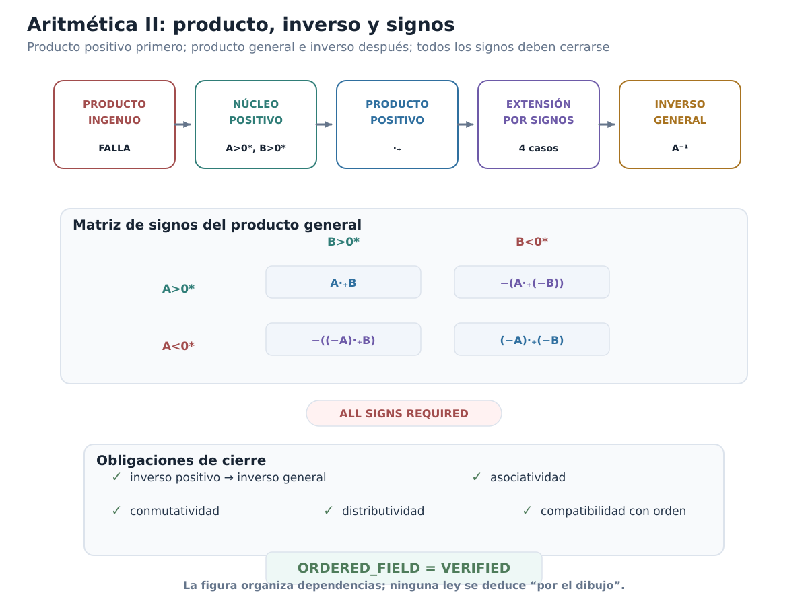
La dificultad que motivó la construcción sigue reclamando una propiedad adicional: toda familia no vacía y acotada superiormente debe tener supremo. Para una familia de cortaduras, reunir sus lados izquierdos sugiere un candidato concreto, la unión de todos sus miembros. Habrá que comprobar que esa unión es una cortadura y que ocupa exactamente la posición de menor cota superior.
Antes de seguir
Microcontrol 40
Explica por qué \(\{ab:a\in A,b\in B\}\) no puede usarse como producto ingenuo de dos cortaduras arbitrarias.
Ver solución del microcontrol 40
Toda cortadura contiene negativos de magnitud arbitrariamente grande: si \(a_0\in A\), cualquier \(-n<a_0\) pertenece a \(A\) por clausura inferior. Para \(n\) grande, \(-n\) pertenece tanto a \(A\) como a \(B\), y la receta \(\{ab:a\in A,b\in B\}\) contiene \(n^2\). Sus valores positivos no están acotados. Una cortadura propia, en cambio, está dominada por cualquier racional exterior. La definición del producto debe controlar los signos de sus testigos; por eso comienza con los positivos.
Microcontrol 41
Demuestra las equivalencias \(A>0^*\Longleftrightarrow0\in A\Longleftrightarrow\exists a\in A\) con \(a>0\).
Ver solución del microcontrol 41
Queremos probar
\[ A>0^* \quad\Longleftrightarrow\quad 0\in A \quad\Longleftrightarrow\quad \exists a\in A:\ a>0. \]
Si \(A>0^*\), entonces \(0^*\subsetneq A\). Existe, por tanto, \(x\in A\setminus0^*\). Como \(x\notin0^*\), tenemos \(x\ge0\). Si \(x=0\), ya está probado que \(0\in A\); si \(x>0\), la clausura hacia abajo de \(A\) vuelve a dar \(0\in A\).
Si \(0\in A\), la ausencia de máximo proporciona un \(a\in A\) con
\[ 0<a. \]
Finalmente, si existe \(a\in A\) con \(a>0\), todo racional \(q<0\) satisface \(q<a\), y la clausura hacia abajo implica \(q\in A\). Luego
\[ 0^*\subseteq A. \]
La inclusión es estricta porque \(a\in A\) pero \(a\notin0^*\). Así \(0^*\subsetneq A\), es decir, \(A>0^*\).
Microcontrol 42
En la clausura de \(A\cdot_+B\), ¿por qué un racional exterior \(u\notin A\) debe ser positivo cuando \(A>0^*\)?
Ver solución del microcontrol 42
Supongamos \(A>0^*\) y \(u\notin A\). Por la equivalencia anterior,
\[ 0\in A. \]
Si \(u<0\), entonces \(u\in0^*\subseteq A\), contradicción. Si \(u=0\), también tendríamos \(u\in A\).
Por tanto las posibilidades \(u\le0\) quedan excluidas y necesariamente
\[ \boxed{u>0.} \]
Este hecho es el que permite comparar productos conservando el sentido del orden: para \(a\in A_{>0}\) y un exterior \(u\notin A\), tenemos \(0<a<u\), y al multiplicar por cantidades positivas la desigualdad sigue orientada de la misma manera.
Microcontrol 43
Verifica directamente \(p^*\cdot_+q^*=(pq)^*\) para \(p,q>0\) y localiza dónde se usa la densidad de \(\mathbb Q\).
Ver solución del microcontrol 43
Sean \(p,q>0\). Debemos probar
\[ p^*\cdot_+q^*=(pq)^*. \]
Si \(x\in p^*\cdot_+q^*\), existen \(0<a<p\) y \(0<b<q\) con \(x<ab\). Como
\[ ab<pb<pq, \]
se sigue \(x<pq\), es decir, \(x\in(pq)^*\).
Para la recíproca, sea \(x<pq\). Si \(x\le0\), cualquier elección racional \(0<a<p\) y \(0<b<q\) da
\[ x\le0<ab, \]
y por tanto \(x\in p^*\cdot_+q^*\).
Supongamos ahora \(0<x<pq\). Como \(q>0\),
\[ \frac{x}{q}<p. \]
Aquí aparece la primera aplicación de la densidad de \(\mathbb Q\): elegimos
\[ \frac{x}{q}<a<p. \]
Entonces \(a>0\) y \(x<aq\), de modo que
\[ \frac{x}{a}<q. \]
La segunda aplicación de la densidad permite escoger
\[ \frac{x}{a}<b<q. \]
Así \(0<a<p\), \(0<b<q\) y \(x<ab\). Por consiguiente \(x\in p^*\cdot_+q^*\).
La densidad se usa exactamente para insertar testigos racionales estrictamente dentro de las dos fronteras racionales y, al mismo tiempo, mantener su producto por encima de \(x\).
Microcontrol 44
Recorre los cinco casos de la definición del producto general y comprueba que todos los argumentos enviados a \(\cdot_+\) son positivos.
Ver solución del microcontrol 44
La definición separa exhaustivamente los signos de \(A\) y \(B\).
- Si \(A=0^*\) o \(B=0^*\), se define \(AB=0^*\) y no aparece \(\cdot_+\).
- Si \(A>0^*\) y \(B>0^*\), se usa directamente \(A\cdot_+B\): ambos argumentos son positivos.
- Si \(A<0^*\) y \(B<0^*\), entonces \(-A>0^*\) y \(-B>0^*\); por eso \((-A)\cdot_+(-B)\) está bien definido.
- Si \(A>0^*>B\), entonces \(A>0^*\) y, como \(B<0^*\), tenemos \(-B>0^*\). Así \(A\cdot_+(-B)\) recibe dos argumentos positivos; el opuesto exterior fija el signo negativo del resultado.
- Si \(B>0^*>A\), entonces \(B>0^*\) y \(-A>0^*\). Por tanto \((-A)\cdot_+B\) vuelve a recibir dos argumentos positivos, y el opuesto exterior vuelve a producir el signo correcto.
La tricotomía del orden de \(\mathcal D\) garantiza que no falta ningún caso y que dos casos no pueden aplicarse simultáneamente.
Microcontrol 45
¿Por qué la definición de \(A^{-1,+}\) incluye automáticamente todos los racionales \(q\le0\)?
Ver solución del microcontrol 45
Si \(A>0^*\), su recíproco debe ser también una cortadura estrictamente positiva. Toda cortadura positiva contiene \(0\) y, por clausura hacia abajo, contiene todos los racionales negativos.
Por eso la definición
\[ A^{-1,+} = \left\{ q\in\mathbb Q: q\le0 \text{ o } \exists s>0\,(s\notin A\text{ y }q<s^{-1}) \right\} \]
incluye desde el comienzo la región \(q\le0\). Esta cláusula cumple dos funciones: garantiza inmediatamente que
\[ 0\in A^{-1,+}, \]
y fija toda la parte izquierda no positiva sin obligarnos a producir, para cada uno de esos racionales, un testigo exterior \(s\) específico.
La información nueva sobre la frontera inversa está sólo en la segunda cláusula, que controla los racionales positivos mediante recíprocos de puntos exteriores de \(A\).
Microcontrol 46
En la prueba \(A\cdot_+A^{-1,+}=1^*\), explica qué papel cumplen el lema de aproximación racional y la elección de \(h<(1-x)c\).
Ver solución del microcontrol 46
En la inclusión difícil
\[ 1^*\subseteq A\cdot_+A^{-1,+}, \]
tomamos \(0<x<1\) y elegimos primero \(c\in A\) con \(c>0\).
La condición
\[ 0<h<(1-x)c \]
hace que \(h\) sea un paso racional positivo suficientemente pequeño. El lema de aproximación de §0.6 puede entonces aplicarse y produce un \(a\in A\) tal que
\[ s:=a+h\notin A. \]
Así obtenemos simultáneamente un punto interior \(a\) y un punto exterior \(s\) separados exactamente por \(h\).
Como \(c\in A\) y \(s\notin A\), tenemos \(c<s=a+h\), luego
\[ a>c-h>0. \]
Además,
\[ (1-x)(c-h)-xh=(1-x)c-h>0. \]
Como \(a>c-h\) y \(1-x>0\),
\[ (1-x)a>xh. \]
Esto equivale a
\[ a>x(a+h)=xs, \]
y, como \(a,s>0\),
\[ \frac{x}{a}<\frac1s. \]
Ahora la densidad racional permite elegir \(b\) entre esos dos números. La desigualdad \(b<1/s\) coloca \(b\) en \(A^{-1,+}\), mientras que \(x/a<b\) da \(x<ab\).
Por tanto, el lema fabrica el par interior–exterior cercano y la elección de \(h<(1-x)c\) garantiza exactamente el margen necesario para que el intervalo
\[ \left(\frac{x}{a},\frac1s\right) \]
sea no vacío.
Microcontrol 47
Reconstruye la asociatividad positiva mostrando por qué la desigualdad \(x<abc\) permite fabricar el testigo intermedio necesario en cada agrupación.
Ver solución del microcontrol 47
Supongamos primero que, después de desplegar los testigos de
\[ (A\cdot_+B)\cdot_+C, \]
hemos llegado a
\[ x<abc \]
con \(a\in A_{>0}\), \(b\in B_{>0}\) y \(c\in C_{>0}\).
Para demostrar que \(x\in A\cdot_+(B\cdot_+C)\) necesitamos un racional positivo \(v\in B\cdot_+C\) con \(x<av\).
- Si \(x\le0\), basta escoger por densidad \(0<v<bc\). Entonces \(v\in B\cdot_+C\) y \(x<0<av\).
- Si \(x>0\), de \(x<abc\) obtenemos \(x/a<bc\). Por densidad elegimos \[ \frac{x}{a}<v<bc. \] Entonces \(v\in B\cdot_+C\) y \(x<av\).
En la dirección inversa se hace exactamente lo mismo con un testigo \(u\in A\cdot_+B\): si \(x\le0\), tomamos \(0<u<ab\); si \(x>0\), usamos
\[ \frac{x}{c}<u<ab. \]
Así, la desigualdad \(x<abc\) no se usa como si \(abc\) fuera un elemento-frontera del producto. Se usa para abrir un intervalo racional no vacío en el que la densidad permite insertar el testigo intermedio requerido por la otra agrupación.
Microcontrol 48
En la distributividad con signos opuestos, ¿por qué es necesario comparar \(B\) con \(-C\) antes de aplicar la distributividad positiva?
Ver solución del microcontrol 48
Supongamos
\[ B>0^*>C. \]
Entonces \(C_0:=-C\) es positivo. El signo de la suma
\[ B+C=B-C_0 \]
no puede decidirse sólo sabiendo que \(B\) es positivo y \(C\) negativo: depende de cuál de las dos magnitudes positivas, \(B\) o \(C_0\), sea mayor.
Por linealidad hay exactamente tres posibilidades:
\[ B=C_0, \qquad C_0<B, \qquad B<C_0. \]
En el primer caso \(B+C=0^*\). En el segundo,
\[ D:=B-C_0>0^*, \qquad C_0+D=B, \]
y podemos aplicar la distributividad positiva a \(C_0+D\). En el tercero,
\[ D:=C_0-B>0^*, \qquad B+D=C_0, \]
y de nuevo disponemos de una suma de cortaduras positivas a la que sí se aplica el resultado ya demostrado.
La comparación \(B\) frente a \(-C\) sirve, por tanto, para convertir el caso de signos opuestos en uno de tres problemas cuyo término residual \(D\) es positivo. Sin esa comparación no sabríamos qué expresión positiva está autorizada para invocar la distributividad ya probada.
Microcontrol 49
Enumera exactamente qué propiedades hacen ahora de \(\mathcal D\) un cuerpo ordenado y cuál sigue faltando para que sea un sistema de números reales según §0.1.
Ver solución del microcontrol 49
La suma hace de \(\mathcal D\) un grupo abeliano; el producto es interno, asociativo, conmutativo y distributivo, con unidad \(1^*\ne0^*\) e inversos para las cortaduras no nulas. El orden por inclusión es lineal y compatible con traslaciones y productos no negativos. Se han reunido así las leyes de un cuerpo ordenado. La propiedad del supremo aún requiere una prueba: ser cuerpo ordenado no basta, como ya mostró \(\mathbb Q\).
Microcontrol 50
Explica por qué sólo ahora queda plenamente justificada la abreviatura \(\mathbb Q\subseteq\mathcal D\).
Ver solución del microcontrol 50
En §0.5 sabíamos que
\[ q\longmapsto q^* \]
era inyectiva y preservaba y reflejaba el orden. En §0.6 añadimos la conservación de la suma, el cero y los opuestos. Eso todavía no bastaba para una incrustación de cuerpos.
Al terminar §0.7 están verificadas también
\[ (pq)^*=p^*\cdot q^*, \qquad 1_{\mathcal D}=1^*, \]
y, para \(q\ne0\),
\[ (q^{-1})^*=(q^*)^{-1}. \]
Por tanto la aplicación
\[ \iota_{\mathbb Q}:\mathbb Q\to\mathcal D, \qquad q\mapsto q^*, \]
es ya una incrustación de cuerpos ordenados: es inyectiva y conserva suma, producto, \(0\), \(1\) y orden.
Sólo ahora está justificada la identificación estructural de cada racional con su imagen. La abreviatura
\[ \boxed{\mathbb Q\subseteq\mathcal D} \]
no afirma una inclusión literal preexistente entre los objetos de ambas construcciones; significa que, desde este punto, trabajaremos identificando \(\mathbb Q\) con la copia isomorfa \(\iota_{\mathbb Q}(\mathbb Q)\) contenida en \(\mathcal D\).
La aritmética está cerrada. Falta comprobar si el nuevo cuerpo ordenado tiene la propiedad que motivó toda la construcción: la completitud.
Ejercicios de la sección 0.7
Ejercicio 27. Construir el núcleo positivo del producto
La receta aditiva sugiere primero el conjunto ingenuo
\[ P(A,B)=\{ab:a\in A,\ b\in B\}. \]
- Toma \(A=B=1^*\) y demuestra que \(P(1^*,1^*)\) contiene racionales positivos arbitrariamente grandes. Explica por qué eso impide que esta receta sea, en general, un producto de cortaduras.
- Para \(A\in\mathcal D\), demuestra las equivalencias
\[ 0^*\subsetneq A \quad\Longleftrightarrow\quad 0\in A \quad\Longleftrightarrow\quad \exists a\in A\text{ con }a>0. \]
- Si \(A,B>0^*\), define
\[ A_{>0}=\{a\in A:a>0\}, \]
y construye el candidato
\[ A\cdot_+B = \{x\in\mathbb Q:\exists a\in A_{>0}\ \exists b\in B_{>0}\text{ con }x<ab\}. \]
- Demuestra ya, a partir de la definición, que \(A\cdot_+B\) es no vacío, contiene \(0\) y es cerrado hacia abajo.
No declares todavía que \(A\cdot_+B\in\mathcal D\): las dos condiciones restantes deben demostrarse en el ejercicio siguiente.
Ver solución del ejercicio 27
La receta ingenua ya falla para la cortadura racional \(1^*\).
Sea
\[ 1^*=\{q\in\mathbb Q:q<1\}. \]
Para cada entero positivo \(N\) tenemos
\[ -N\in1^*. \]
Por tanto
\[ N^2=(-N)(-N)\in P(1^*,1^*). \]
Así \(P(1^*,1^*)\) contiene racionales positivos arbitrariamente grandes. Una cortadura propia no puede tener esa propiedad: si \(C\in\mathcal D\) y \(u\notin C\), todo \(c\in C\) satisface \(c<u\). Por tanto \(P(1^*,1^*)\) no puede ser una cortadura. El problema proviene de multiplicar racionales negativos muy alejados de la frontera.
Pasemos a la positividad. Supongamos primero
\[ 0^*\subsetneq A. \]
Existe entonces \(x\in A\setminus0^*\). Así \(x\ge0\). Si \(x=0\), ya tenemos \(0\in A\); si \(x>0\), como \(0<x\) y \(A\) es cerrado hacia abajo, también \(0\in A\).
Si \(0\in A\), la ausencia de máximo produce \(a\in A\) con
\[ 0<a. \]
Finalmente, si existe \(a\in A\) con \(a>0\), todo \(q<0\) satisface \(q<a\), y la clausura hacia abajo da \(q\in A\). Por tanto
\[ 0^*\subseteq A. \]
La inclusión es estricta porque \(a\in A\setminus0^*\). Hemos demostrado
\[ \boxed{ 0^*<_{\mathcal D}A \Longleftrightarrow 0\in A \Longleftrightarrow \exists a\in A\text{ con }a>0. } \]
Si \(A,B>0^*\), los conjuntos \(A_{>0}\) y \(B_{>0}\) son no vacíos. Definimos
\[ A\cdot_+B = \{x\in\mathbb Q:\exists a\in A_{>0}\ \exists b\in B_{>0}\text{ con }x<ab\}. \]
Elijamos \(a\in A_{>0}\) y \(b\in B_{>0}\). Como \(ab>0\),
\[ 0<ab, \]
de modo que \(0\in A\cdot_+B\). En particular, el conjunto es no vacío y ya contiene el cero racional.
Para la clausura hacia abajo, sea \(x\in A\cdot_+B\). Existen \(a,b>0\) con \(a\in A\), \(b\in B\) y
\[ x<ab. \]
Si \(y<x\), entonces
\[ y<x<ab, \]
y los mismos testigos \(a,b\) muestran que \(y\in A\cdot_+B\).
Hasta aquí tenemos no vaciedad, presencia de \(0\) y clausura inferior. Aún falta demostrar que el conjunto es propio y que carece de máximo; por eso todavía no declaramos clausura en \(\mathcal D\).
Referencia visual. Véase la figura C00-F11 del texto principal, Aritmética II: producto, inverso y signos, como síntesis posterior de este argumento.
Ejercicio 28. Cerrar el producto positivo y recuperar el producto racional
Sean \(A,B>0^*\) y usa la operación \(A\cdot_+B\) construida en el ejercicio 27.
- Demuestra que \(A\cdot_+B\) es propio. Tu prueba debe elegir racionales exteriores \(u\notin A\) y \(v\notin B\) y justificar por qué necesariamente \(u,v>0\).
- Demuestra que \(A\cdot_+B\) no tiene máximo.
- Concluye que
\[ A\cdot_+B\in\mathcal D \qquad\text{y}\qquad A\cdot_+B>0^*. \]
- Sean ahora \(p,q\in\mathbb Q\) con \(p,q>0\). Demuestra por doble inclusión que
\[ p^*\cdot_+q^*=(pq)^*. \]
En la inclusión difícil, separa los casos \(x\le0\) y \(0<x<pq\), y localiza exactamente dónde interviene la densidad de \(\mathbb Q\).
Ver solución del ejercicio 28
Sean \(A,B>0^*\). Como \(A\) y \(B\) son cortaduras propias, existen racionales
\[ u\notin A, \qquad v\notin B. \]
Además \(0\in A\) y \(0\in B\). Si \(u\le0\), la clausura hacia abajo aplicada a \(0\in A\) obligaría a \(u\in A\) cuando \(u<0\), y para \(u=0\) ya sabemos que \(0\in A\). Por tanto
\[ u>0. \]
Análogamente, \(v>0\).
Todo \(a\in A\) satisface \(a<u\), pues de \(u\le a\) y \(a\in A\) se seguiría \(u\in A\). Del mismo modo, todo \(b\in B\) cumple \(b<v\). Para \(a\in A_{>0}\) y \(b\in B_{>0}\),
\[ ab<ub<uv. \]
Así ningún par de testigos puede satisfacer \(uv<ab\). Luego
\[ uv\notin A\cdot_+B, \]
y \(A\cdot_+B\) es propio.
Para la ausencia de máximo, sea \(x\in A\cdot_+B\). Existen \(a\in A_{>0}\) y \(b\in B_{>0}\) con
\[ x<ab. \]
Por densidad de \(\mathbb Q\), existe \(y\in\mathbb Q\) tal que
\[ x<y<ab. \]
Los mismos \(a,b\) prueban \(y\in A\cdot_+B\). Por tanto ningún elemento es máximo.
Junto con el ejercicio 27, quedan verificadas las cuatro condiciones de cortadura, y además \(0\in A\cdot_+B\). Por consiguiente,
\[ \boxed{ A\cdot_+B\in\mathcal D \quad\text{y}\quad A\cdot_+B>0^*. } \]
Ahora sean \(p,q>0\) racionales.
Si \(x\in p^*\cdot_+q^*\), existen \(0<a<p\) y \(0<b<q\) tales que
\[ x<ab. \]
Como
\[ ab<pb<pq, \]
tenemos \(x<pq\), es decir,
\[ x\in(pq)^*. \]
Así
\[ p^*\cdot_+q^*\subseteq(pq)^*. \]
Para la inclusión inversa, sea \(x<pq\).
Si \(x\le0\), elegimos cualesquiera racionales \(a,b\) con
\[ 0<a<p, \qquad 0<b<q. \]
Entonces \(x\le0<ab\), y por tanto \(x\in p^*\cdot_+q^*\).
Supongamos ahora
\[ 0<x<pq. \]
Como \(q>0\),
\[ \frac{x}{q}<p. \]
Por densidad elegimos \(a\in\mathbb Q\) con
\[ \frac{x}{q}<a<p. \]
Entonces \(a>0\) y \(x<aq\), de modo que
\[ \frac xa<q. \]
Una segunda aplicación de la densidad proporciona \(b\) con
\[ \frac xa<b<q. \]
Así \(0<a<p\), \(0<b<q\) y \(x<ab\). Por tanto
\[ x\in p^*\cdot_+q^*. \]
La doble inclusión da
\[ \boxed{p^*\cdot_+q^*=(pq)^*.} \]
La densidad de \(\mathbb Q\) se gasta exactamente en la ausencia de máximo del producto y, para la inclusión racional inversa, en la elección sucesiva de \(a\) y \(b\).
Referencia visual. Véase la figura C00-F11 del texto principal, Aritmética II: producto, inverso y signos, como síntesis posterior de este argumento.
Ejercicio 29. Trazar el paso del producto positivo a todos los signos
Usa la estructura aditiva de §0.6 y el producto positivo de los ejercicios 27–28.
- Explica por qué
\[ -(-A)=A \]
y por qué \(A<0^*\) implica \(-A>0^*\). 2. Define un producto \(A\cdot B\) para \(A,B\in\mathcal D\) mediante los cinco casos: cero, dos positivos, dos negativos y los dos órdenes posibles de signos opuestos. Debes escribir explícitamente la definición por casos y verificar que cada aparición de \(\cdot_+\) recibe argumentos estrictamente positivos. 3. Demuestra que, para todos \(p,q\in\mathbb Q\),
\[ p^*\cdot q^*=(pq)^*. \]
No omitas los casos de signos negativos ni los casos con cero. 4. Demuestra primero para \(A>0^*\) que
\[ A\cdot_+1^*=A, \]
y extiende después el resultado a todo \(A\in\mathcal D\) para obtener
\[ A\cdot1^*=A=1^*\cdot A. \]
Cierra con un mapa de dependencias que indique qué parte usa el opuesto de §0.6, qué parte usa la identidad racional positiva del ejercicio 28 y qué parte usa ausencia de máximo.
Ver solución del ejercicio 29
En §0.6, el opuesto de una cortadura quedó caracterizado como su inverso aditivo. Como \(A\) y \(-(-A)\) son ambos inversos aditivos de \(-A\), la unicidad del inverso da
\[ \boxed{-(-A)=A.} \]
Si \(A<0^*\), sumamos \(-A\) a ambos lados. La compatibilidad del orden con traslaciones produce
\[ 0^*<-A. \]
Así una cortadura negativa se transforma en positiva al tomar su opuesto.
Definimos el producto general por
\[ A\cdot B= \begin{cases} 0^*,&A=0^*\text{ o }B=0^*,\\[1ex] A\cdot_+B,&A>0^*,\ B>0^*,\\[1ex] (-A)\cdot_+(-B),&A<0^*,\ B<0^*,\\[1ex] -\bigl(A\cdot_+(-B)\bigr),&A>0^*>B,\\[1ex] -\bigl((-A)\cdot_+B\bigr),&B>0^*>A. \end{cases} \]
La tricotomía respecto de \(0^*\) hace que los cinco casos sean exhaustivos y disjuntos. En las ramas con \(\cdot_+\), los argumentos son positivos por construcción: los factores ya son positivos o han sido reemplazados por su opuesto. Como \(\cdot_+\) produce una cortadura positiva y el opuesto de una cortadura vuelve a pertenecer a \(\mathcal D\), el producto general es interno.
Probemos ahora la compatibilidad racional.
Si \(p,q>0\), el resultado es el ejercicio 28:
\[ p^*\cdot q^*=(pq)^*. \]
Si \(p,q<0\), entonces \(-p,-q>0\) y, usando \(-(p^*)=(-p)^*\),
\[ \begin{aligned} p^*\cdot q^* &=(-p)^*\cdot_+(-q)^*\\ &=((-p)(-q))^*\\ &=(pq)^*. \end{aligned} \]
Si \(p>0>q\),
\[ \begin{aligned} p^*\cdot q^* &=-\bigl(p^*\cdot_+(-q)^*\bigr)\\ &=-\bigl(p(-q)\bigr)^*\\ &=(pq)^*. \end{aligned} \]
El caso \(q>0>p\) es simétrico. Si alguno de los racionales es cero, ambos lados son \(0^*\). Luego
\[ \boxed{p^*\cdot q^*=(pq)^*\qquad(p,q\in\mathbb Q).} \]
Veamos la unidad. Supongamos primero \(A>0^*\).
Si \(x\in A\cdot_+1^*\), existen \(a\in A\), \(a>0\), y \(b\) con \(0<b<1\) tales que
\[ x<ab<a. \]
La clausura inferior de \(A\) da \(x\in A\). Así
\[ A\cdot_+1^*\subseteq A. \]
Recíprocamente, sea \(x\in A\). Si \(x\le0\), elegimos \(a\in A\) positivo y \(b\in\mathbb Q\) con \(0<b<1\); entonces \(x<ab\).
Si \(x>0\), la ausencia de máximo de \(A\) proporciona \(a\in A\) con \(x<a\). Entonces
\[ 0<\frac xa<1. \]
Por densidad elegimos \(b\) con
\[ \frac xa<b<1. \]
Así \(x<ab\) y \(x\in A\cdot_+1^*\). Por tanto
\[ A\cdot_+1^*=A. \]
La igualdad \(1^*\cdot_+A=A\) se obtiene simétricamente.
Si \(A=0^*\), la identidad es inmediata por definición. Si \(A<0^*\), entonces \(-A>0^*\) y
\[ A\cdot1^* =-\bigl((-A)\cdot_+1^*\bigr) =-(-A) =A. \]
Análogamente por la izquierda. Luego
\[ \boxed{A\cdot1^*=A=1^*\cdot A.} \]
El mapa de dependencias es:
- opuesto de §0.6: permite convertir factores negativos en positivos y volver a colocar el signo;
- producto racional positivo: permite extender \(p^*q^*=(pq)^*\) a todos los signos;
- ausencia de máximo: se usa para aproximar desde dentro un \(x>0\) al demostrar que \(1^*\) actúa como unidad.
Referencia visual. Véase la figura C00-F11 del texto principal, Aritmética II: producto, inverso y signos, como síntesis posterior de este argumento.
Ejercicio 30. Construir y verificar el inverso multiplicativo
Sea \(A>0^*\). Define
\[ A^{-1,+} = \left\{ q\in\mathbb Q: q\le0 \text{ o } \exists s>0\;\bigl(s\notin A\text{ y }q<s^{-1}\bigr) \right\}. \]
- Demuestra que \(A^{-1,+}\) es una cortadura estrictamente positiva.
- Demuestra por doble inclusión que
\[ A\cdot_+A^{-1,+}=1^*. \]
- Para la inclusión \(1^*\subseteq A\cdot_+A^{-1,+}\), trata por separado \(x\le0\) y \(0<x<1\). En el segundo caso debes usar el lema de aproximación racional de §0.6 para obtener un par
\[ a\in A, \qquad s=a+h\notin A \]
suficientemente próximo. 4. Si \(A\ne0^*\), define \(A^{-1}\) para ambos signos y demuestra
\[ A\cdot A^{-1}=1^*=A^{-1}\cdot A. \]
Pista conceptual. Para \(0<x<1\), busca primero un \(c\in A\) positivo y elige \(h\) tan pequeño que \(h<(1-x)c\). El objetivo es forzar \(x/a<1/s\) para poder insertar un racional entre ambos.
Ver solución del ejercicio 30
Sea \(A>0^*\). Consideremos
\[ A^{-1,+} = \left\{ q\in\mathbb Q: q\le0 \text{ o } \exists s>0\;\bigl(s\notin A\text{ y }q<s^{-1}\bigr) \right\}. \]
Como \(0\le0\),
\[ 0\in A^{-1,+}. \]
El conjunto es no vacío y, una vez cerrado como cortadura, será positivo.
Para demostrar que es propio, tomemos \(a\in A\) con \(a>0\). Afirmamos que
\[ a^{-1}\notin A^{-1,+}. \]
No satisface la cláusula \(q\le0\). Si satisficiera la segunda, existiría \(s>0\), \(s\notin A\), tal que
\[ a^{-1}<s^{-1}. \]
Como ambos son positivos, invertir revierte el orden y tendríamos
\[ s<a. \]
Pero \(a\in A\) y \(A\) es cerrado hacia abajo, luego \(s\in A\), contradicción.
La clausura hacia abajo es directa. Si \(q\le0\) y \(r<q\), entonces \(r\le0\). Si \(q<s^{-1}\) para algún exterior positivo \(s\) y \(r<q\), el mismo \(s\) muestra
\[ r<q<s^{-1}. \]
Para la ausencia de máximo distinguimos tres casos. Si \(q<0\), entonces \(q<0\) y \(0\in A^{-1,+}\). Si \(q=0\), elegimos \(s\notin A\); necesariamente \(s>0\) porque \(0\in A\) y todo racional no positivo pertenece a \(A\). Por densidad existe
\[ 0<r<s^{-1}, \]
y \(r\in A^{-1,+}\). Si \(q>0\), su pertenencia proporciona \(s>0\), \(s\notin A\), con \(q<s^{-1}\); de nuevo por densidad elegimos
\[ q<r<s^{-1}. \]
Por tanto \(A^{-1,+}\) es una cortadura y, como contiene \(0\),
\[ \boxed{A^{-1,+}>0^*.} \]
Probemos ahora
\[ A\cdot_+A^{-1,+}=1^*. \]
Sea \(x\in A\cdot_+A^{-1,+}\). Existen \(a\in A\), \(a>0\), y \(b\in A^{-1,+}\), \(b>0\), con
\[ x<ab. \]
Como \(b>0\), su pertenencia proviene de un \(s>0\), \(s\notin A\), tal que
\[ b<s^{-1}. \]
Todo elemento de \(A\) está por debajo de todo exterior, así que \(a<s\). Luego
\[ x<ab<a\,s^{-1}=\frac as<1. \]
Por tanto
\[ A\cdot_+A^{-1,+}\subseteq1^*. \]
Para la otra inclusión, sea \(x<1\).
Si \(x\le0\), elegimos \(a\in A\) positivo y un \(b\in A^{-1,+}\) positivo. Entonces \(x<ab\), de modo que \(x\) pertenece al producto.
Supongamos ahora
\[ 0<x<1. \]
Elegimos \(c\in A\) con \(c>0\). Como \((1-x)c>0\), tomamos un racional
\[ 0<h<(1-x)c. \]
Por el lema de aproximación racional de §0.6 existe \(a\in A\) tal que
\[ s:=a+h\notin A. \]
Como \(c\in A\) y \(s\notin A\), necesariamente \(c<s=a+h\). Además \(h<(1-x)c<c\), así que
\[ a>c-h>0. \]
Tenemos
\[ (1-x)(c-h)-xh=(1-x)c-h>0. \]
Como \(a>c-h\),
\[ (1-x)a>xh. \]
Equivalente a
\[ a>x(a+h)=xs. \]
Por tanto
\[ \frac xa<\frac1s. \]
Por densidad elegimos \(b\in\mathbb Q\) con
\[ \frac xa<b<\frac1s. \]
Entonces \(b>0\), y como \(s>0\), \(s\notin A\) y \(b<s^{-1}\),
\[ b\in A^{-1,+}. \]
Además \(x<ab\). Por tanto \(x\in A\cdot_+A^{-1,+}\).
Hemos demostrado
\[ \boxed{A\cdot_+A^{-1,+}=1^*.} \]
La igualdad con los factores intercambiados se obtiene de la simetría de la definición de \(\cdot_+\), pues \(ab=ba\) en \(\mathbb Q\).
Para \(A\ne0^*\) definimos
\[ A^{-1} = \begin{cases} A^{-1,+},&A>0^*,\\[1ex] -\bigl((-A)^{-1,+}\bigr),&A<0^*. \end{cases} \]
Si \(A>0^*\), la ley del inverso ya está probada. Si \(A<0^*\), ponemos
\[ B=-A>0^*. \]
Entonces
\[ A^{-1}=-B^{-1,+}, \]
y, usando la rama de dos factores negativos,
\[ \begin{aligned} A\cdot A^{-1} &=(-A)\cdot_+(-A^{-1})\\ &=B\cdot_+B^{-1,+}\\ &=1^*. \end{aligned} \]
El mismo argumento en el orden inverso da
\[ \boxed{ A\cdot A^{-1}=1^*=A^{-1}\cdot A \qquad(A\ne0^*). } \]
El lema de aproximación de §0.6 es el mecanismo que fabrica, para un \(x<1\), un interior \(a\) y un exterior \(s\) suficientemente próximos como para abrir el intervalo racional
\[ \left(\frac xa,\frac1s\right). \]
Referencia visual. Véase la figura C00-F11 del texto principal, Aritmética II: producto, inverso y signos, como síntesis posterior de este argumento.
Ejercicio 31. Un producto correcto para positivos que no forma un cuerpo
Para mostrar que el sector positivo no determina por sí solo toda la estructura de cuerpo, define una operación \(\star\) sobre \(\mathcal D\) así:
\[ A\star B= \begin{cases} 0^*,&A=0^*\text{ o }B=0^*,\\ A\cdot_+B,&A>0^*,\ B>0^*,\\ -\bigl((-A)\cdot_+(-B)\bigr),&A<0^*,\ B<0^*,\\ -\bigl(A\cdot_+(-B)\bigr),&A>0^*>B,\\ -\bigl((-A)\cdot_+B\bigr),&B>0^*>A. \end{cases} \]
La única rama deliberadamente alterada respecto del producto correcto es la de dos factores negativos.
- Explica por qué \(\star\) sigue siendo una operación interna en \(\mathcal D\) y coincide con \(\cdot_+\) cuando ambos factores son positivos.
- Calcula
\[ (-1)^*\star(-1)^*. \]
- Usa los tres elementos \((-1)^*,(-1)^*,1^*\) para demostrar directamente que \(\star\) no es distributiva respecto de la suma ya construida.
- Explica por qué este ejemplo refuta la inferencia «si el producto funciona para positivos, el resto de las leyes de cuerpo queda automáticamente determinado».
Pista conceptual. Compara \((-1)^*\star\bigl((-1)^*+1^*\bigr)\) con \(\bigl((-1)^*\star(-1)^*\bigr)+\bigl((-1)^*\star1^*\bigr)\).
Ver solución del ejercicio 31
La operación \(\star\) es interna. En la rama positiva, \(A\cdot_+B\in\mathcal D\) por el ejercicio 28. En las ramas con signo negativo, primero se aplica \(\cdot_+\) a cortaduras positivas y luego se toma el opuesto, operación que ya sabemos que conserva \(\mathcal D\). La rama con cero devuelve \(0^*\).
Además, si \(A,B>0^*\),
\[ A\star B=A\cdot_+B. \]
Por tanto \(\star\) coincide exactamente con el producto correcto en todo el sector positivo.
Tomemos ahora
\[ A=B=(-1)^*. \]
Como \((-1)^*<0^*\) y
\[ -((-1)^*)=1^*, \]
la rama deliberadamente alterada da
\[ \begin{aligned} (-1)^*\star(-1)^* &=-\bigl(1^*\cdot_+1^*\bigr)\\ &=-1^*\\ &=(-1)^*. \end{aligned} \]
Ya esto contradice el comportamiento racional que debería tener un producto de cuerpos, pues \((-1)(-1)=1\).
Veamos además el fallo directo de distributividad sugerido en la pista. Como la suma racional ya está preservada,
\[ (-1)^*+1^*=0^*. \]
Por tanto
\[ (-1)^*\star\bigl((-1)^*+1^*\bigr) = (-1)^*\star0^* = 0^*. \]
En cambio,
\[ (-1)^*\star(-1)^*=(-1)^*. \]
Para el producto de signos opuestos, la definición de \(\star\) coincide con la regla correcta, de modo que
\[ (-1)^*\star1^*=(-1)^*. \]
Así el miembro derecho de la distributividad sería
\[ (-1)^*+(-1)^*=(-2)^*. \]
Como
\[ (-2)^*\ne0^*, \]
obtenemos
\[ \boxed{ (-1)^*\star\bigl((-1)^*+1^*\bigr) \ne \bigl((-1)^*\star(-1)^*\bigr) + \bigl((-1)^*\star1^*\bigr). } \]
Por tanto \(\star\) no es distributiva.
El contraejemplo aísla exactamente el punto lógico: conocer el producto en el cono positivo no determina por sí solo las reglas de signo ni garantiza que la extensión respete las leyes de anillo. Los casos negativos y mixtos deben definirse y verificarse explícitamente.
Ejercicio 32. Cerrar el cuerpo ordenado sin confundirlo con completitud
Trabaja con el producto correcto \(\cdot\) y los inversos construidos en los ejercicios anteriores. Organiza el cierre multiplicativo mediante una estrategia de núcleo positivo + regla de signos.
- Demuestra la conmutatividad y la asociatividad de \(\cdot_+\) para cortaduras positivas. En la asociatividad, construye explícitamente el testigo intermedio que permite pasar de una agrupación a la otra.
- Extiende conmutatividad y asociatividad a todos los signos explicando por qué ambos lados tienen el mismo signo y el mismo núcleo positivo.
- Demuestra la distributividad positiva
\[ A\cdot_+(B+C) = (A\cdot_+B)+(A\cdot_+C) \]
para \(A,B,C>0^*\). 4. Extiende la distributividad a signos arbitrarios. En el caso \(B>0^*>C\), explica por qué hay que comparar \(B\) con \(-C\) y cómo la cancelación en el grupo aditivo reduce el problema al caso positivo. 5. Demuestra la compatibilidad multiplicativa del orden:
\[ 0^*\le A,\ 0^*\le B \quad\Longrightarrow\quad 0^*\le A\cdot B. \]
- Reúne todo lo demostrado en §§0.6–0.7 y justifica que
\[ (\mathcal D,+,\cdot,\le_{\mathcal D}) \]
es un cuerpo ordenado. 7. Demuestra que
\[ \iota_{\mathbb Q}:\mathbb Q\hookrightarrow\mathcal D, \qquad q\mapsto q^*, \]
queda ahora certificada como incrustación de cuerpos ordenados. 8. Explica con precisión por qué todavía no puede concluirse que la pregunta de existencia de §0.1 está cerrada.
Pista conceptual. Para evitar una explosión de casos, separa cada cortadura no nula en un signo y una parte positiva. Para la distributividad con signos opuestos, compara primero \(B\) y \(-C\) dentro del orden lineal de \(\mathcal D\).
Ver solución del ejercicio 32
Empecemos por el núcleo positivo.
La conmutatividad de \(\cdot_+\) es inmediata: para \(A,B>0^*\),
\[ x<ab \quad\Longleftrightarrow\quad x<ba, \]
de modo que
\[ \boxed{A\cdot_+B=B\cdot_+A.} \]
Probemos la asociatividad positiva. Sea
\[ x\in(A\cdot_+B)\cdot_+C. \]
Existen \(u>0\) y \(c\in C_{>0}\) tales que
\[ u\in A\cdot_+B, \qquad x<uc. \]
A su vez existen \(a\in A_{>0}\) y \(b\in B_{>0}\) con
\[ u<ab. \]
Por tanto
\[ x<uc<abc. \]
Si \(x\le0\), elegimos \(v\in\mathbb Q\) con
\[ 0<v<bc. \]
Entonces \(v\in B\cdot_+C\) y \(x<0<av\), de modo que \(x\in A\cdot_+(B\cdot_+C)\).
Si \(x>0\), de \(x<abc\) obtenemos
\[ \frac xa<bc. \]
Por densidad elegimos
\[ \frac xa<v<bc. \]
Entonces \(v\in B\cdot_+C\) y \(x<av\). Así
\[ (A\cdot_+B)\cdot_+C \subseteq A\cdot_+(B\cdot_+C). \]
La inclusión inversa es simétrica: partiendo de \(x<av<abc\), si \(x\le0\) elegimos \(0<u<ab\); si \(x>0\), elegimos
\[ \frac xc<u<ab. \]
Entonces \(u\in A\cdot_+B\) y \(x<uc\). Concluimos
\[ \boxed{(A\cdot_+B)\cdot_+C=A\cdot_+(B\cdot_+C).} \]
Para extender conmutatividad y asociatividad a todos los signos, observemos que toda cortadura no nula puede escribirse como una parte positiva acompañada de un signo: si \(A>0^*\) usamos \(A\); si \(A<0^*\) usamos \(-A>0^*\). La definición del producto multiplica las partes positivas mediante \(\cdot_+\) y coloca un opuesto exterior exactamente cuando aparece un número impar de factores negativos.
Por tanto, en cualquiera de las dos agrupaciones de tres factores no nulos, el signo final es el mismo y el núcleo positivo es el mismo por asociatividad de \(\cdot_+\). Si aparece un cero, ambos lados son \(0^*\). Así
\[ \boxed{A\cdot B=B\cdot A} \]
y
\[ \boxed{(A\cdot B)\cdot C=A\cdot(B\cdot C)} \]
para todos \(A,B,C\in\mathcal D\).
Pasemos a la distributividad positiva. Sean \(A,B,C>0^*\). Entonces \(B+C>0^*\) porque \(0\in B\) y \(0\in C\), luego \(0=0+0\in B+C\).
Sea
\[ x\in A\cdot_+(B+C). \]
Existen \(a\in A_{>0}\) y \(u\in(B+C)_{>0}\) con
\[ x<au. \]
Escribimos \(u=b_0+c_0\) con \(b_0\in B\), \(c_0\in C\). Podemos obtener otra representación
\[ u=b+c \]
con \(b\in B_{>0}\) y \(c\in C_{>0}\). Si ambos testigos originales son positivos, no hay nada que hacer. Si, por ejemplo, \(b_0\le0\), entonces \(c_0>0\). Elegimos \(d\in B\) positivo y un racional
\[ 0<b<\min\{u,d\}. \]
Así \(b\in B\), \(b>b_0\) y, poniendo \(c=u-b\), tenemos \(c>0\) y
\[ c=u-b<u-b_0=c_0, \]
por lo que \(c\in C\). El otro caso es simétrico.
Ahora
\[ x<a(b+c)=ab+ac. \]
Como
\[ x-ac<ab, \]
por densidad elegimos \(y\) con
\[ x-ac<y<ab. \]
Sea \(z=x-y\). Entonces
\[ y\in A\cdot_+B, \qquad z<ac, \]
de modo que \(z\in A\cdot_+C\) y \(x=y+z\). Por tanto
\[ A\cdot_+(B+C) \subseteq (A\cdot_+B)+(A\cdot_+C). \]
Para la inclusión inversa, sea
\[ x=y+z \]
con \(y\in A\cdot_+B\) y \(z\in A\cdot_+C\). Elegimos
\[ a_1,a_2\in A_{>0}, \qquad b\in B_{>0}, \qquad c\in C_{>0} \]
tales que
\[ y<a_1b, \qquad z<a_2c. \]
Sea \(m=\max\{a_1,a_2\}\). Como \(m\) es uno de los dos elementos de \(A\) y \(A\) no tiene máximo, existe \(a\in A\) con \(m<a\). Entonces
\[ \begin{aligned} x &=y+z\\ &<a_1b+a_2c\\ &<ab+ac\\ &=a(b+c). \end{aligned} \]
Como \(b+c>0\) y \(b+c\in B+C\),
\[ x\in A\cdot_+(B+C). \]
Concluimos
\[ \boxed{ A\cdot_+(B+C) =(A\cdot_+B)+(A\cdot_+C) } \]
para cortaduras positivas.
La definición por signos implica
\[ (-A)B=-(AB), \qquad A(-B)=-(AB), \qquad (-A)(-B)=AB. \]
Fijemos primero \(A>0^*\) y permitamos signos arbitrarios para \(B,C\).
Si \(B,C>0^*\), ya tenemos distributividad. Si ambos son negativos, escribimos
\[ B=-B_0, \qquad C=-C_0, \]
con \(B_0,C_0>0^*\). Entonces
\[ B+C=-(B_0+C_0), \]
y las reglas de signo reducen la igualdad al caso positivo.
Supongamos ahora
\[ B>0^*>C \]
y pongamos \(C_0=-C>0^*\). Por linealidad del orden, exactamente uno de los tres casos
\[ B=C_0, \qquad C_0<B, \qquad B<C_0 \]
ocurre.
Si \(B=C_0\), entonces \(B+C=0^*\) y ambos lados de la distributividad son \(0^*\).
Si \(C_0<B\), definimos
\[ D=B-C_0>0^*. \]
Entonces \(C_0+D=B\). La distributividad positiva da
\[ AB=AC_0+AD. \]
Cancelando \(AC_0\) en el grupo aditivo,
\[ AD=AB-AC_0=AB+AC. \]
Como \(D=B+C\),
\[ A(B+C)=AB+AC. \]
Si \(B<C_0\), ponemos
\[ D=C_0-B>0^*. \]
Entonces \(C_0=B+D\), y la distributividad positiva produce
\[ AC_0=AB+AD. \]
Por cancelación,
\[ AB-AC_0=-AD. \]
Pero \(B+C=-D\) y \(AC=-AC_0\), así que nuevamente
\[ A(B+C)=AB+AC. \]
El caso \(B<0^*<C\) es simétrico.
Por tanto la distributividad vale para \(A>0^*\) y todos \(B,C\). Si \(A<0^*\), escribimos \(A=-A_0\) con \(A_0>0^*\) y usamos las reglas de signo:
\[ \begin{aligned} A(B+C) &=-A_0(B+C)\\ &=-(A_0B+A_0C)\\ &=AB+AC. \end{aligned} \]
Para \(A=0^*\) es inmediata. Hemos probado
\[ \boxed{A(B+C)=AB+AC} \]
para todos \(A,B,C\in\mathcal D\). La distributividad por la derecha sigue de la conmutatividad del producto.
La compatibilidad multiplicativa del orden también queda cerrada. Si
\[ 0^*\le A, \qquad 0^*\le B, \]
cada factor es cero o positivo. Si alguno es cero, \(AB=0^*\). Si ambos son positivos, el ejercicio 28 mostró
\[ AB=A\cdot_+B>0^*. \]
Luego
\[ \boxed{ 0^*\le A,\ 0^*\le B \Longrightarrow 0^*\le AB. } \]
Ya podemos reunir las verificaciones. De §0.6 tenemos un grupo abeliano aditivo y un orden lineal compatible con traslaciones. En §0.7 hemos establecido:
- cierre del producto;
- conmutatividad y asociatividad;
- unidad \(1^*\) con \(1^*\ne0^*\);
- inverso multiplicativo para todo \(A\ne0^*\);
- distributividad;
- compatibilidad del orden con productos no negativos.
Por tanto
\[ \boxed{ (\mathcal D,+,\cdot,\le_{\mathcal D}) \text{ es un cuerpo ordenado}. } \]
La copia racional queda ahora certificada al nivel algebraico completo. Ya sabíamos que \(q\mapsto q^*\) es inyectiva y preserva y refleja el orden. En §0.6 se probó
\[ (p+q)^*=p^*+q^*, \qquad 0_{\mathcal D}=0^*, \]
y ahora tenemos
\[ (pq)^*=p^*\cdot q^*, \qquad 1_{\mathcal D}=1^*. \]
Así
\[ \boxed{ \iota_{\mathbb Q}:\mathbb Q\hookrightarrow\mathcal D \text{ es una incrustación de cuerpos ordenados}. } \]
Sin embargo, esto todavía no responde por completo la pregunta de existencia de §0.1. Allí se pidió un cuerpo ordenado completo. Hasta este punto sólo se ha demostrado que \(\mathcal D\) es un cuerpo ordenado. Falta probar que toda familia no vacía de cortaduras acotada superiormente posee un supremo en \(\mathcal D\).
Por eso el cierre correcto es
En esta etapa se han probado las leyes de cuerpo ordenado. La propiedad del supremo sigue pendiente de la construcción por unión de §0.8.
No es legítimo convertir el primer certificado en el segundo sin una prueba adicional.
0.8. Sí existen: el supremo como unión
Una cota superior de una familia de cortaduras debe contener a cada miembro de la familia, porque el orden es la inclusión. Eso indica qué conjunto deberíamos probar: la unión reúne todos los racionales que estamos obligados a incluir y no añade ninguno más.
Sea \(\mathscr A\subseteq\mathcal D\) una familia no vacía y acotada superiormente. Existe, pues, \(U\in\mathcal D\) tal que \(A\subseteq U\) para todo \(A\in\mathscr A\). Pongamos \[ S=\bigcup_{A\in\mathscr A}A. \] Para que esta fórmula proporcione un supremo dentro de nuestro sistema necesitamos primero \(S\in\mathcal D\).
Proposición. La unión \(S\) es una cortadura.
Demostración. Como la familia es no vacía, podemos elegir un miembro \(A_0\in\mathscr A\) y luego un racional \(q\in A_0\). Entonces \(q\in S\); para obtener ese primer elemento basta un solo miembro de la familia.
Además \(S\subseteq U\): si \(q\in S\), pertenece a algún \(A\in\mathscr A\), y por ello pertenece a \(U\). Un racional exterior a \(U\) queda también fuera de \(S\), de modo que \(S\ne\mathbb Q\). Éste es el paso que necesita la acotación superior.
Si \(q\in S\) y \(r<q\) es racional, algún miembro \(A\) contiene a \(q\). La clausura inferior de ese mismo miembro da \(r\in A\subseteq S\). Finalmente, la ausencia de máximo en \(A\) proporciona \(t\in A\) con \(t>q\); también \(t\in S\). Así la unión es cerrada hacia abajo y carece de máximo. \(\square\)
Teorema. Toda familia no vacía y acotada superiormente de cortaduras tiene supremo, dado por \[ \sup_{\mathcal D}\mathscr A=\bigcup\mathscr A. \]
Demostración. La proposición permite considerar \(S\) como un elemento de \(\mathcal D\). Para todo \(A\in\mathscr A\) se cumple \(A\subseteq S\), por definición de unión; luego \(S\) es cota superior. Si \(V\in\mathcal D\) es cualquier otra cota superior, cada \(q\in S\) pertenece a algún \(A\in\mathscr A\) y ese \(A\) está contenido en \(V\). Por tanto \(q\in V\), y hemos probado \(S\subseteq V\). La unión es la menor cota superior. \(\square\)
Las hipótesis impiden que la unión escape del sistema por alguno de sus dos extremos: para la familia de todas las cortaduras racionales sería \(\mathbb Q\) y quedaría fuera de \(\mathcal D\), mientras que para la familia vacía sería \(\varnothing\). La no vaciedad y la acotación garantizan que la unión siga siendo una cortadura.
Junto con las operaciones de §§0.6–0.7, esta propiedad establece que \((\mathcal D,+,\cdot,\le)\) es un cuerpo ordenado completo. Hemos construido un sistema que satisface la especificación inicial y contiene la copia racional \(q\mapsto q^*\). Podemos adoptar \(\mathcal D\) como un modelo de los números reales. En particular, la cortadura \(A_2\), construida enteramente mediante aritmética racional y distinta de todas las cortaduras racionales, es un elemento de ese modelo fuera de su subcuerpo racional.
La fórmula del supremo no ha utilizado números reales anteriores: la unión es una operación sobre conjuntos de racionales. Tampoco proporciona, por sí sola, un algoritmo para calcular supremos de familias presentadas arbitrariamente. Lo que prueba es que el objeto requerido existe en el marco clásico en que trabajamos.
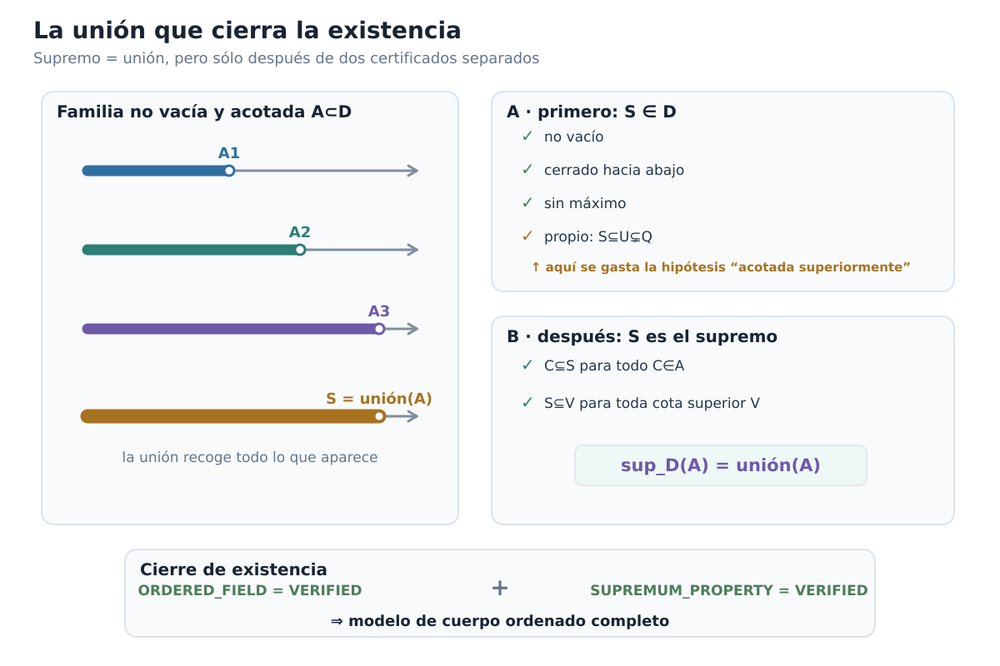
Otra construcción podría producir un cuerpo ordenado completo cuyos elementos fueran objetos diferentes de nuestras cortaduras. Para comparar ambos sistemas necesitaremos describir sus posiciones mediante información común. Los racionales volverán a desempeñar ese papel, pero primero debemos demostrar qué lugar ocupan en un cuerpo ordenado completo cualquiera.
Antes de seguir
Microcontrol 51
Sea \(\mathscr A\subseteq\mathcal D\) no vacía. Explica por qué la unión \(\bigcup\mathscr A\) es automáticamente cerrada hacia abajo, incluso antes de usar la hipótesis de acotación superior.
Ver solución del microcontrol 51
Sea
\[ S=\bigcup_{A\in\mathscr A}A. \]
Supongamos \(q\in S\) y \(r<q\). Por definición de unión existe alguna cortadura \(A\in\mathscr A\) tal que \(q\in A\). Como toda cortadura es cerrada hacia abajo,
\[ r<q\in A \quad\Longrightarrow\quad r\in A. \]
Entonces \(r\in S\).
Por tanto,
\[ \boxed{q\in S,\ r<q\Longrightarrow r\in S.} \]
La hipótesis de que \(\mathscr A\) esté acotada superiormente no interviene aquí: la clausura inferior se hereda localmente de un único miembro de la familia que contiene a \(q\).
Microcontrol 52
¿En qué paso exacto se necesita que \(\mathscr A\) esté acotada superiormente?
Ver solución del microcontrol 52
La acotación superior se necesita en la verificación de que
\[ S=\bigcup\mathscr A \]
es una cortadura propia, es decir, que
\[ S\ne\mathbb Q. \]
Si \(U\in\mathcal D\) es una cota superior de \(\mathscr A\), entonces
\[ A\subseteq U \qquad(A\in\mathscr A). \]
De aquí se obtiene
\[ S\subseteq U. \]
Como \(U\) es una cortadura,
\[ U\ne\mathbb Q. \]
Luego tampoco puede ocurrir \(S=\mathbb Q\).
Así, la hipótesis de acotación se gasta exactamente para impedir que la unión de todos los miembros de \(\mathscr A\) crezca hasta ocupar todo \(\mathbb Q\).
Microcontrol 53
¿Por qué una cota superior \(U\) de \(\mathscr A\) garantiza \(\bigcup\mathscr A\subseteq U\)?
Ver solución del microcontrol 53
Sea \(U\) una cota superior de \(\mathscr A\). En el orden de \(\mathcal D\), esto significa
\[ A\subseteq U \qquad \text{para todo }A\in\mathscr A. \]
Tomemos \(q\in\bigcup\mathscr A\). Por definición de unión existe algún \(A\in\mathscr A\) con
\[ q\in A. \]
Como \(A\subseteq U\), se sigue que
\[ q\in U. \]
El racional \(q\) era arbitrario, luego
\[ \boxed{\bigcup\mathscr A\subseteq U.} \]
La inclusión es simplemente la traducción conjuntista de que \(U\) domina simultáneamente a todos los miembros de la familia.
Microcontrol 54
Demuestra directamente que \(\bigcup\mathscr A\) no tiene máximo usando sólo que cada miembro de \(\mathscr A\) no tiene máximo.
Ver solución del microcontrol 54
Sea
\[ q\in S=\bigcup_{A\in\mathscr A}A. \]
Entonces existe algún \(A\in\mathscr A\) tal que \(q\in A\). Como \(A\) es una cortadura, no tiene máximo. Por tanto existe un racional \(r\in A\) con
\[ q<r. \]
Pero \(A\subseteq S\), de modo que también
\[ r\in S. \]
Así, cada elemento \(q\) de \(S\) admite otro elemento de \(S\) estrictamente mayor. Por consiguiente,
\[ \boxed{S\text{ no tiene máximo}.} \]
No hace falta coordinar simultáneamente todos los miembros de la familia: basta trabajar en la cortadura concreta que testimonia la pertenencia de \(q\) a la unión.
Microcontrol 55
Separa con tus propias palabras las dos afirmaciones «\(S\) es una cortadura» y «\(S\) es el supremo». ¿Por qué ninguna de ellas contiene automáticamente a la otra?
Ver solución del microcontrol 55
Probar \(S\in\mathcal D\) verifica que la unión cumple las cuatro condiciones de cortadura. Para demostrar que además es el supremo de la familia hay que probar \(A\subseteq S\) para cada miembro y \(S\subseteq V\) para toda otra cota superior \(V\). Una cortadura cualquiera no satisface necesariamente esas inclusiones. Ambas verificaciones son necesarias: primero que el candidato pertenezca al sistema, después que ocupe la posición de menor cota superior.
Microcontrol 56
Si \(V\) es otra cota superior, explica por qué cada \(q\in S\) debe pertenecer a \(V\).
Ver solución del microcontrol 56
Sea \(V\in\mathcal D\) otra cota superior de \(\mathscr A\). Entonces
\[ A\subseteq V \qquad(A\in\mathscr A). \]
Tomemos \(q\in S\). Como
\[ S=\bigcup_{A\in\mathscr A}A, \]
existe algún \(A\in\mathscr A\) con \(q\in A\). Al ser \(V\) cota superior,
\[ A\subseteq V, \]
por lo que \(q\in V\).
Así,
\[ \boxed{S\subseteq V.} \]
En el orden por inclusión esto equivale a
\[ S\le_{\mathcal D}V, \]
y prueba que \(S\) es menor o igual que cualquier otra cota superior.
Microcontrol 57
¿Por qué la identidad \(\sup_{\mathcal D}\mathscr A=\bigcup\mathscr A\) no presupone la existencia previa de números reales?
Ver solución del microcontrol 57
La identidad
\[ \sup_{\mathcal D}\mathscr A = \bigcup\mathscr A \]
se demuestra enteramente dentro de la construcción por cortaduras.
- Cada \(A\in\mathscr A\) es un subconjunto de \(\mathbb Q\).
- \(\bigcup\mathscr A\) es la unión conjuntista ordinaria de esos subconjuntos racionales.
- Después se verifica que esa unión es una cortadura.
- Finalmente se comprueba, usando inclusión de conjuntos, que es cota superior y menor que cualquier otra cota superior.
En ningún paso se parte de un número real previamente existente ni de un supremo tomado en un sistema real externo. Precisamente la demostración establece que el objeto construido por unión satisface la definición de supremo dentro de \(\mathcal D\).
Por tanto la fórmula es una conclusión de la construcción, no una importación de la completitud que estamos intentando demostrar.
Microcontrol 58
¿Qué dos certificados distintos se combinan para concluir que \(\mathcal D\) es un cuerpo ordenado completo?
Ver solución del microcontrol 58
Las leyes de suma, producto y orden ya hacen de \(\mathcal D\) un cuerpo ordenado. La prueba de la unión añade que toda familia no vacía acotada superiormente tiene supremo en él. Juntas son exactamente las condiciones de un cuerpo ordenado completo. Como \(\mathcal D\) fue construido a partir de subconjuntos racionales, proporciona un modelo concreto y demuestra la existencia solicitada al comienzo.
Microcontrol 59
¿Por qué sólo ahora queda autorizado llamar a \(\mathcal D\) «un modelo de los números reales»?
Ver solución del microcontrol 59
Después de probar la propiedad del supremo, \(\mathcal D\) satisface toda la especificación inicial: es un cuerpo ordenado completo. Por eso puede llamarse un modelo de los números reales. El término indica que esta construcción realiza la estructura buscada; no exige que cualquier presentación de los reales use literalmente cortaduras. La comparación con otros modelos sigue siendo el problema de las secciones posteriores.
Microcontrol 60
Explica la diferencia entre «hemos demostrado que existe un modelo» y «hemos demostrado que el modelo es único».
Ver solución del microcontrol 60
La construcción ha demostrado que existe al menos un cuerpo ordenado completo. Si se presentan después dos modelos \(F\) y \(G\), habrá que construir una correspondencia que conserve sus operaciones y su orden, y estudiar si está determinada de manera única. La existencia de \(\mathcal D\) no realiza por sí sola ese trabajo. Las trazas racionales proporcionarán el método para compararlos.
Microcontrol 61
¿Por qué la existencia de \(A_2\in\mathcal D\) muestra ahora algo más fuerte que lo que sabíamos de \(A_2\) al terminar §0.4?
Ver solución del microcontrol 61
En §0.4 habíamos construido
\[ A_2 = \{q\in\mathbb Q:q<0\text{ o }q^2<2\} \]
y demostrado dos cosas: que \(A_2\) es una cortadura y que no coincide con ninguna cortadura racional \(q^*\).
En ese punto todavía no estaba justificado llamarla número real, porque aún no habíamos probado que el sistema \(\mathcal D\) tuviera toda la estructura exigida.
Ahora sí sabemos que
\[ \mathcal D \]
es un cuerpo ordenado completo. Como
\[ A_2\in\mathcal D, \]
\(A_2\) es legítimamente un elemento de un modelo de los números reales. Además, como no es ningún \(q^*\),
\[ A_2\notin\iota_{\mathbb Q}(\mathbb Q). \]
Por tanto la antigua «frontera codificada» se ha convertido en un elemento no racional del modelo completo construido, sin haber supuesto previamente la existencia de irracionales.
La existencia está resuelta. El próximo problema ya no consiste en fabricar un candidato, sino en determinar cuánto depende la estructura obtenida del modo concreto en que la construimos.
Ejercicios de la sección 0.8
Ejercicio 33. Demostrar que la unión vuelve a ser una cortadura
Sea \(\mathscr A\subseteq\mathcal D\) una familia no vacía y acotada superiormente. Define
\[ S=\bigcup_{A\in\mathscr A}A. \]
Demuestra que \(S\in\mathcal D\) verificando por separado las cuatro condiciones de una cortadura.
- Para la no vaciedad, usa únicamente que \(\mathscr A\ne\varnothing\) y que cada miembro de \(\mathscr A\) es no vacío.
- Para demostrar que \(S\ne\mathbb Q\), toma una cota superior \(U\in\mathcal D\) de \(\mathscr A\) y prueba primero
\[ S\subseteq U. \]
- Demuestra la clausura hacia abajo de \(S\) siguiendo un elemento \(q\in S\) hasta alguna cortadura \(A\in\mathscr A\) que lo contenga.
- Demuestra que \(S\) no tiene máximo usando la ausencia de máximo del mismo miembro \(A\).
- Cierra indicando con precisión en cuál de las cuatro verificaciones se usa la hipótesis de acotación superior y en cuál se usa que la familia sea no vacía.
No llames todavía a \(S\) «supremo»: en este ejercicio sólo debes probar que el candidato pertenece al dominio \(\mathcal D\).
Ver solución del ejercicio 33
Sea
\[ S=\bigcup_{A\in\mathscr A}A. \]
Debemos verificar las cuatro condiciones de una cortadura.
No vaciedad. Como \(\mathscr A\ne\varnothing\), existe \(A_0\in\mathscr A\). Como \(A_0\in\mathcal D\), tenemos \(A_0\ne\varnothing\), de modo que existe \(q\in A_0\). Entonces \(q\in S\). Por tanto
\[ S\ne\varnothing. \]
Aquí se usa exactamente la no vaciedad de la familia.
Subconjunto propio. Como \(\mathscr A\) está acotada superiormente, existe \(U\in\mathcal D\) tal que
\[ A\subseteq U \qquad \text{para todo }A\in\mathscr A. \]
Si \(q\in S\), existe \(A\in\mathscr A\) con \(q\in A\). Entonces \(q\in U\). Por tanto
\[ S\subseteq U. \]
Pero \(U\) es una cortadura y, en particular,
\[ U\subsetneq\mathbb Q. \]
Luego también
\[ S\subsetneq\mathbb Q. \]
Éste es el único punto de las cuatro verificaciones donde necesitamos la hipótesis de acotación superior.
Clausura hacia abajo. Sea \(q\in S\) y sea \(r<q\). De \(q\in S\) se sigue que existe \(A\in\mathscr A\) con \(q\in A\). Como \(A\) es cerrada hacia abajo,
\[ r\in A. \]
Entonces \(r\in S\).
Ausencia de máximo. Sea \(q\in S\). Elegimos nuevamente \(A\in\mathscr A\) con \(q\in A\). Como \(A\) no tiene máximo, existe \(r\in A\) tal que
\[ q<r. \]
Como \(A\subseteq S\), también \(r\in S\). Así ningún elemento de \(S\) es máximo.
Las cuatro condiciones quedan verificadas:
\[ \boxed{ S=\bigcup_{A\in\mathscr A}A\in\mathcal D. } \]
La trazabilidad de hipótesis es precisa:
- \(\mathscr A\ne\varnothing\) se gasta para obtener un primer elemento de \(S\);
- la acotación superior se gasta para impedir \(S=\mathbb Q\);
- la clausura hacia abajo y la ausencia de máximo se heredan localmente del miembro de la familia que contiene al racional considerado.
Todavía no hemos demostrado que \(S\) sea supremo: sólo que el candidato vive dentro del dominio ordenado correcto.
Referencia visual. Véase la figura C00-F07 del texto principal, La unión que cierra la existencia, como síntesis posterior de este argumento.
Ejercicio 34. Separar «ser cortadura» de «ser supremo»
Mantén las hipótesis del ejercicio 33 y supón ya demostrado que
\[ S=\bigcup_{A\in\mathscr A}A\in\mathcal D. \]
Traza ahora, como una segunda prueba independiente, que
\[ S=\sup_{\mathcal D}\mathscr A. \]
Tu argumento debe distinguir explícitamente las dos obligaciones de un supremo.
- Demuestra que \(S\) es cota superior de \(\mathscr A\).
- Sea \(V\in\mathcal D\) una cota superior arbitraria de \(\mathscr A\). Demuestra que \(S\subseteq V\).
- Traduce ambas inclusiones al orden \(\le_{\mathcal D}\).
- Explica por qué la prueba de que \(S\) es la menor cota superior no reemplaza la prueba previa de que \(S\in\mathcal D\).
- Haz un inventario de hipótesis: señala cuáles se gastaron para garantizar que \(S\) fuera un elemento de \(\mathcal D\) y cuáles se usan directamente en la caracterización de menor cota superior.
El cierre debe ser la identidad
\[ \boxed{ \sup_{\mathcal D}\mathscr A = \bigcup_{A\in\mathscr A}A. } \]
Ver solución del ejercicio 34
Partimos ahora del resultado ya establecido
\[ S=\bigcup_{A\in\mathscr A}A\in\mathcal D. \]
Esto permite formular la pregunta de orden: ¿es \(S\) la menor cota superior?
Primera obligación: \(S\) es cota superior. Sea \(A\in\mathscr A\). Por definición de unión,
\[ A\subseteq S. \]
Como el orden de \(\mathcal D\) es la inclusión,
\[ A\le_{\mathcal D}S. \]
Esto vale para todo \(A\in\mathscr A\). Por tanto \(S\) es una cota superior de la familia.
Segunda obligación: \(S\) es menor que cualquier otra cota superior. Sea \(V\in\mathcal D\) una cota superior de \(\mathscr A\). Entonces
\[ A\subseteq V \qquad \text{para todo }A\in\mathscr A. \]
Tomemos \(q\in S\). Por definición de unión existe \(A\in\mathscr A\) tal que \(q\in A\). Como \(A\subseteq V\),
\[ q\in V. \]
Por tanto
\[ S\subseteq V, \]
es decir,
\[ S\le_{\mathcal D}V. \]
Las dos obligaciones prueban
\[ \boxed{ S=\sup_{\mathcal D}\mathscr A. } \]
Sustituyendo la definición de \(S\),
\[ \boxed{ \sup_{\mathcal D}\mathscr A = \bigcup_{A\in\mathscr A}A. } \]
Las dos pruebas no son intercambiables. Para que \(S\) pueda ser un supremo en \(\mathcal D\), primero debe estar demostrado que \(S\in\mathcal D\). El argumento de menor cota superior compara conjuntos por inclusión, pero por sí solo no certifica que la unión sea una cortadura.
El inventario de hipótesis queda así:
- la no vaciedad y la acotación superior de \(\mathscr A\) son necesarias en el ejercicio 33 para garantizar \(S\in\mathcal D\);
- una vez que \(S\in\mathcal D\), la condición \(A\subseteq S\) proviene puramente de la definición de unión;
- para demostrar minimalidad se toma una cota superior arbitraria \(V\) y se usa exactamente la condición \(A\subseteq V\) para todo \(A\in\mathscr A\).
La arquitectura lógica es, por tanto,
\[ \boxed{ S\in\mathcal D \quad\Longrightarrow\quad \text{podemos preguntar si }S=\sup_{\mathcal D}\mathscr A, } \]
no al revés.
Referencia visual. Véase la figura C00-F07 del texto principal, La unión que cierra la existencia, como síntesis posterior de este argumento.
Ejercicio 35. Localizar exactamente por qué hace falta una cota superior
Para cada \(n\in\mathbb N\), considera la cortadura racional
\[ n^*=\{q\in\mathbb Q:q<n\}, \]
y la familia
\[ \mathscr N=\{n^*:n\in\mathbb N\}\subseteq\mathcal D. \]
- Demuestra que \(\mathscr N\) es no vacía.
- Usa la propiedad arquimediana de \(\mathbb Q\) para demostrar
\[ \bigcup_{n\in\mathbb N}n^*=\mathbb Q. \]
- Concluye que esa unión no es una cortadura.
- Demuestra que \(\mathscr N\) no puede estar acotada superiormente en \(\mathcal D\).
- Vuelve a la demostración del ejercicio 33 y localiza el paso exacto que se rompe para \(\mathscr N\).
Concluye por qué la afirmación
«la unión de cualquier familia no vacía de cortaduras es otra cortadura»
es falsa, aunque la unión siga siendo no vacía, cerrada hacia abajo y sin máximo en este ejemplo.
Ver solución del ejercicio 35
La familia
\[ \mathscr N=\{n^*:n\in\mathbb N\} \]
es no vacía porque, por ejemplo, \(0^*\in\mathscr N\).
Probemos ahora que su unión es todo \(\mathbb Q\). Sea \(q\in\mathbb Q\). Por la propiedad arquimediana de \(\mathbb Q\), existe \(n\in\mathbb N\) tal que
\[ q<n. \]
Entonces, por definición de cortadura racional,
\[ q\in n^*. \]
Como \(n^*\) es uno de los miembros de \(\mathscr N\),
\[ q\in\bigcup_{n\in\mathbb N}n^*. \]
Así
\[ \mathbb Q \subseteq \bigcup_{n\in\mathbb N}n^*. \]
La inclusión inversa es automática porque cada \(n^*\) es un subconjunto de \(\mathbb Q\). Por tanto
\[ \boxed{ \bigcup_{n\in\mathbb N}n^*=\mathbb Q. } \]
Pero \(\mathbb Q\) no es una cortadura: falla la condición de ser un subconjunto propio de sí mismo. En consecuencia, la unión de una familia no vacía de cortaduras no tiene por qué pertenecer a \(\mathcal D\).
Esto también demuestra que \(\mathscr N\) no está acotada superiormente en \(\mathcal D\). Si existiera \(U\in\mathcal D\) con
\[ n^*\subseteq U \qquad \text{para todo }n\in\mathbb N, \]
entonces, tomando uniones,
\[ \mathbb Q = \bigcup_{n\in\mathbb N}n^* \subseteq U. \]
Como siempre \(U\subseteq\mathbb Q\), seguiría \(U=\mathbb Q\), contradicción con \(U\in\mathcal D\).
La falla se localiza exactamente en el segundo bloque de la prueba del ejercicio 33. Allí elegíamos una cota superior \(U\) y obteníamos
\[ S\subseteq U\subsetneq\mathbb Q. \]
Para \(\mathscr N\) no existe tal \(U\). Sin ese cerco, la unión crece hasta llenar todos los racionales.
Es instructivo observar que las otras propiedades no son el problema: \(\mathbb Q\) es no vacío, está cerrado hacia abajo respecto de su propio orden y no tiene máximo. Falla exactamente la propiedad de ser un subconjunto propio de \(\mathbb Q\).
Por tanto,
\[ \boxed{ \text{UNIÓN DE CORTADURAS} \not\Longrightarrow \text{CORTADURA} } \]
sin la hipótesis de acotación superior.
Referencia visual. Véase la figura C00-F07 del texto principal, La unión que cierra la existencia, como síntesis posterior de este argumento.
Ejercicio 36. Cerrar la pregunta de existencia sin confundir modelo con esencia
Reúne los dos certificados obtenidos hasta ahora:
\[ \text{ORDERED FIELD = VERIFIED} \]
en §§0.6–0.7, y la propiedad del supremo demostrada en los ejercicios 33–34.
- Demuestra que
\[ (\mathcal D,+,\cdot,\le_{\mathcal D}) \]
es un cuerpo ordenado completo. 2. Explica por qué esto constituye una prueba de existencia de al menos un sistema de números reales en el sentido fijado en §0.1. 3. Incorpora la incrustación
\[ \iota_{\mathbb Q}:\mathbb Q\hookrightarrow\mathcal D, \qquad q\mapsto q^*, \]
y precisa qué estructura conserva. 4. Explica en qué sentido está autorizado decir que \(\mathcal D\) es un modelo de los números reales y por qué de ello no se sigue que «un número real sea por esencia una cortadura». 5. Retoma
\[ A_2=\{q\in\mathbb Q:q<0\text{ o }q^2<2\}. \]
Explica qué afirmación nueva queda autorizada acerca de \(A_2\) después del cierre de completitud y qué afirmación sobre unicidad de modelos sigue todavía sin demostrarse.
Pista conceptual. La prueba de existencia no requiere identificar una ontología única: basta exhibir una estructura concreta que satisfaga toda la especificación.
Ver solución del ejercicio 36
Las leyes verificadas en §§0.6–0.7 hacen de \((\mathcal D,+,\cdot,\le_{\mathcal D})\) un cuerpo ordenado. Los ejercicios 33–34 prueban que cada familia no vacía acotada superiormente tiene supremo en él, dado por su unión. Juntas, esas propiedades lo hacen un cuerpo ordenado completo.
La existencia queda demostrada porque \(\mathcal D\) se construyó como un conjunto de subconjuntos de \(\mathbb Q\), y sus operaciones y orden se definieron y verificaron sobre esos objetos. La aplicación \(\iota_{\mathbb Q}(q)=q^*\) es inyectiva y conserva suma, producto, cero, uno y orden; por ello el modelo incorpora una copia fiel del cuerpo ordenado racional.
En particular, \(A_2\in\mathcal D\) pertenece ya a un sistema de números reales y queda fuera de esa copia racional, pues no coincide con ningún \(q^*\). Antes sólo se había construido y ordenado esa cortadura; ahora el sistema donde vive satisface toda la especificación. La construcción realiza el modelo, sin imponer cortaduras como única representación conjuntista posible. Todavía falta comparar otros cuerpos ordenados completos y demostrar su unicidad estructural.
Referencias visuales. Véanse las figuras C00-F01 (Existencia antes que unicidad) y C00-F07 (La unión que cierra la existencia) del texto principal para sintetizar, respectivamente, las capas de este cierre.
Ejercicio 37. Auditar un cierre de existencia que mezcla cuatro niveles
Un informe propone:
«En §0.7 demostramos que \(\mathcal D\) es un cuerpo ordenado; por tanto ya es completo. Además, la unión de cualquier familia de cortaduras es una cortadura, así que toda familia tiene supremo. En consecuencia \(\mathcal D\) es literalmente \(\mathbb R\). Como ya encontramos un modelo, cualquier otro cuerpo ordenado completo debe ser igual a \(\mathcal D\).»
Audita el informe sin usar resultados de §§0.9–0.10.
- Localiza la primera inferencia inválida y refútala usando un resultado ya disponible del capítulo.
- Refuta la segunda inferencia mediante la familia \(\mathscr N=\{n^*:n\in\mathbb N\}\) del ejercicio 35.
- Formula correctamente el teorema de unión, incluyendo todas sus hipótesis.
- Explica la diferencia entre las afirmaciones
\[ \mathcal D\text{ es un modelo de los números reales} \]
y
\[ \mathcal D\text{ es literalmente el único conjunto posible de números reales}. \]
- Repara el informe hasta obtener exactamente la conclusión disponible al terminar §0.8: existencia de un cuerpo ordenado completo con una copia ordenada de \(\mathbb Q\), sin afirmar todavía unicidad estructural.
Pista conceptual. Distingue cuatro puertas: cuerpo ordenado, propiedad del supremo, existencia de un modelo y unicidad del modelo. Ninguna debe sustituirse por la siguiente sin prueba.
Ver solución del ejercicio 37
La primera inferencia inválida es que ser cuerpo ordenado implique ser completo. \(\mathbb Q\) la refuta: es cuerpo ordenado y \(S_2\) no tiene supremo racional, aunque sea no vacío y acotado superiormente.
La unión arbitraria tampoco produce siempre una cortadura. Para \(\mathscr N=\{n^*:n\in\mathbb N\}\), arquimedianidad racional da \(\bigcup\mathscr N=\mathbb Q\), que no es un subconjunto propio y no pertenece a \(\mathcal D\). El teorema correcto exige \(\mathscr A\subseteq\mathcal D\) no vacía y acotada superiormente; entonces \(\bigcup\mathscr A\in\mathcal D\) y es su supremo.
Combinando ese teorema con las leyes de cuerpo ordenado, se concluye que \(\mathcal D\) es un cuerpo ordenado completo con la incrustación racional \(q\mapsto q^*\). Ésa es una prueba de existencia de un modelo. No demuestra igualdad literal con cualquier otra construcción ni demuestra aún un isomorfismo entre modelos. Al cerrar §0.8, la existencia está acreditada y la comparación estructural queda por demostrar en §§0.9–0.10.
0.9. ¿Podría haber otros reales?
Sea \(F\) un cuerpo ordenado completo. Ya disponemos de un modelo, así que esta hipótesis no encubre una suposición de existencia. El propósito es estudiar todos los sistemas que satisfacen la misma especificación, utilizando únicamente sus leyes de cuerpo, su orden y la propiedad del supremo.
Empecemos por la unidad. En cualquier cuerpo ordenado, el cuadrado de un elemento no nulo es positivo: si el elemento es negativo, su opuesto es positivo y tiene el mismo cuadrado. Los cuadrados son no negativos por compatibilidad multiplicativa y no son cero en un cuerpo salvo que el elemento lo sea. Aplicado a \(1_F\), esto da \(1_F=1_F^2>0_F\). Definamos los numerales por \[ \nu_F(0)=0_F,\qquad \nu_F(n+1)=\nu_F(n)+1_F. \] Cada paso aumenta estrictamente el valor, de modo que \(m<n\) implica \(\nu_F(m)<\nu_F(n)\). Ningún numeral positivo es cero: \(F\) tiene característica cero.
Los numerales conservan la suma y el producto. Para la suma, fijado \(m\), la inducción sobre \(n\) comienza con \(\nu_F(m+0)=\nu_F(m)+0_F\); el paso usa \[ \nu_F(m+n+1)=\nu_F(m+n)+1_F =\nu_F(m)+\nu_F(n+1). \] Para el producto, el caso \(n=0\) es inmediato y el paso se obtiene de la identidad natural \(m(n+1)=mn+m\), de la aditividad recién probada y de la distributividad en \(F\): \[ \nu_F(m(n+1))=\nu_F(mn)+\nu_F(m) =\nu_F(m)\bigl(\nu_F(n)+1_F\bigr). \]
Representemos un entero por una diferencia \(m-n\) de naturales y pongamos \[ \jmath_F(m-n)=\nu_F(m)-\nu_F(n). \] Si \(m-n=p-q\), entonces \(m+q=n+p\). La conservación de la suma da \(\nu_F(m)+\nu_F(q)=\nu_F(n)+\nu_F(p)\), y al trasladar términos obtenemos la igualdad entre las dos imágenes propuestas. La regla está bien definida.
La fórmula \((m-n)+(p-q)=(m+p)-(n+q)\) demuestra que \(\jmath_F\) conserva la suma. Para el producto usamos \[ (m-n)(p-q)=(mp+nq)-(mq+np). \] Aplicando las leyes de los numerales y distribuyendo en \(F\), el segundo miembro tiene imagen \[ \bigl(\nu_F(m)-\nu_F(n)\bigr) \bigl(\nu_F(p)-\nu_F(q)\bigr). \] Así se conserva el producto. Se conservan también \(0\), \(1\) y los opuestos. Un entero positivo \(k\) tiene imagen \(\nu_F(k)>0_F\), mientras que uno negativo tiene imagen negativa. Como \(a<b\) equivale a \(b-a>0\), la conservación de diferencias prueba que \(\jmath_F\) conserva y refleja el orden; en particular, es inyectiva.
Para \(a,b\in\mathbb Z\), \(b\ne0\), definimos \[ \iota_F\!\left(\frac ab\right)=\jmath_F(a)\jmath_F(b)^{-1}. \] El inverso existe por inyectividad. Si \(a/b=c/d\), entonces \(ad=bc\), y la multiplicatividad de \(\jmath_F\) transporta esa igualdad a \(F\). Multiplicar por las imágenes inversas de los denominadores prueba que la regla no depende del representante racional.
Escribiendo \(a_F=\jmath_F(a)\) y análogamente para otros enteros, las identidades \[ (a_Fb_F^{-1})+(c_Fd_F^{-1}) =(a_Fd_F+b_Fc_F)(b_Fd_F)^{-1}, \] \[ (a_Fb_F^{-1})(c_Fd_F^{-1})=(a_Fc_F)(b_Fd_F)^{-1} \] prueban que \(\iota_F\) conserva suma y producto, además de cero y unidad. Con denominador \(b>0\), el signo de \(a_Fb_F^{-1}\) es el de \(a\): el inverso de un elemento positivo es positivo, pues un inverso no positivo no podría multiplicarlo para dar \(1_F>0_F\). Aplicado a la diferencia de dos racionales, esto demuestra \[ p<q\iff\iota_F(p)<\iota_F(q). \] Hemos construido una incrustación de cuerpos ordenados. Es única: toda aplicación que conserve unidad y operaciones debe fijar sucesivamente numerales, enteros e inversos de enteros no nulos y, con ellos, todas las fracciones. Esta copia racional existe en cualquier cuerpo ordenado; aún no hemos utilizado la completitud.
La existencia de la copia racional deja abierta una cuestión sobre su alcance dentro de \(F\): los numerales podrían, en principio, quedar todos por debajo de una misma cota. La completitud permite descartar esa posibilidad. Supongamos que el conjunto \(N_F=\{\nu_F(n):n\in\mathbb N\}\) estuviera acotado superiormente. Es no vacío y, por completitud, tendría supremo \(s\). El elemento \(s-1_F<s\) no puede ser otra cota superior; por tanto, algún \(n\) satisface \(s-1_F<\nu_F(n)\). Al sumar \(1_F\) resulta \[ s<\nu_F(n)+1_F=\nu_F(n+1), \] contradiciendo que \(s\) domina a todos los numerales. Concluimos que \(N_F\) no está acotado superiormente: para cada \(x\in F\) hay \(n\in\mathbb N\) con \(x<\nu_F(n)\). Ésta es la propiedad arquimediana.
Encontrar un entero mayor que \(x\) todavía no controla la distancia que los separa. Una pareja de enteros consecutivos dará ese control y permitirá después reducir la escala; elijamos \(n>0\) con \(-\nu_F(n)<x<\nu_F(n)\), aplicando arquimedianidad a \(\max\{x,-x\}\). El conjunto \[ K=\{k\in\mathbb N:x<-\nu_F(n)+\nu_F(k)\} \] contiene a \(2n+1\) y no contiene a \(0\). Su mínimo \(k_0\) es positivo. La pertenencia de \(k_0\) y la no pertenencia de \(k_0-1\) dan \[ -\nu_F(n)+\nu_F(k_0-1)\le x <-\nu_F(n)+\nu_F(k_0). \] Con \(m=-n+k_0\in\mathbb Z\), obtenemos \[ \iota_F(m-1)\le x<\iota_F(m). \] Aquí y en adelante, al aplicar \(\iota_F\) a un entero entendemos su imagen racional canónica. La minimalidad es lo que asegura que los dos extremos sean consecutivos.
Teorema de densidad racional. Si \(x<y\) en \(F\), existe \(q\in\mathbb Q\) con \(x<\iota_F(q)<y\).
Demostración. Buscamos una malla cuyo paso sea menor que la separación de los dos elementos. Por arquimedianidad, elijamos \(n>0\) con \(\nu_F(n)>(y-x)^{-1}\); entonces \(0<\iota_F(1/n)<y-x\). Multiplicar por el numeral convierte la búsqueda en la localización entera que acabamos de demostrar: localicemos \(x\nu_F(n)\) entre dos enteros consecutivos: \[ \iota_F(m-1)\le x\nu_F(n)<\iota_F(m). \] Al dividir por \(\nu_F(n)>0\) obtenemos \[ x<\iota_F(m/n)\le x+\iota_F(1/n)<y. \] La desigualdad central procede del extremo inferior de la localización; las dos exteriores aseguran que \(q=m/n\) queda estrictamente entre \(x\) e \(y\). \(\square\)
El primer punto de la malla situado a la derecha de \(x\) queda a una distancia de a lo sumo un paso y, por ello, también a la izquierda de \(y\). La completitud intervino al demostrar la arquimedianidad; desde ese momento, la localización entera y la densidad sólo necesitaron las leyes de cuerpo ordenado.
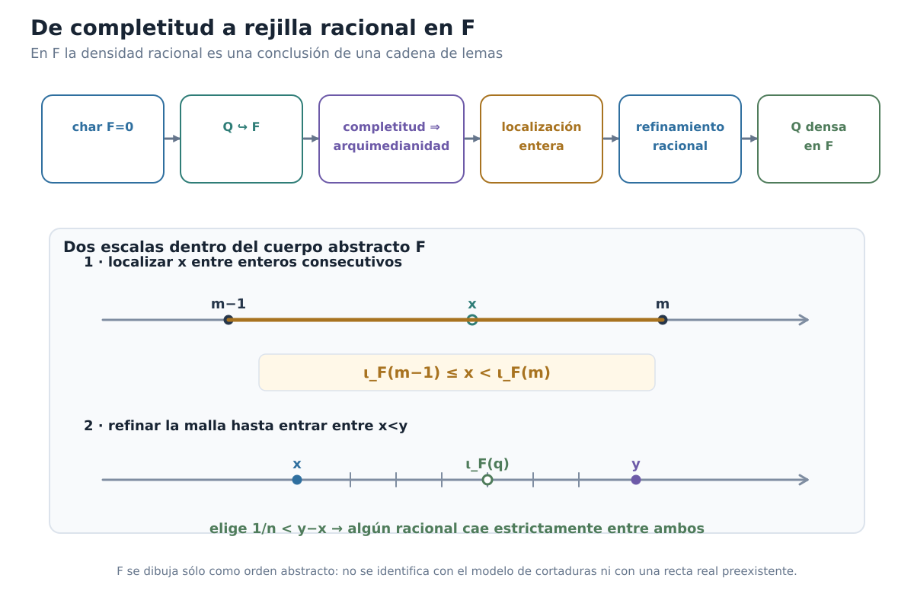
Podemos describir un elemento de \(F\) mediante los racionales que quedan debajo de él. Para \(x\in F\), su traza racional inferior es \[ A_x^F=\{q\in\mathbb Q:\iota_F(q)<x\}. \] El superíndice se omitirá cuando el cuerpo sea inequívoco. El elemento \(x\) vive en \(F\); su traza es un subconjunto del conjunto común \(\mathbb Q\).
Proposición. La traza \(A_x\) es una cortadura y determina al elemento mediante \[ x=\sup_F\iota_F(A_x). \]
Demostración. La densidad proporciona un racional cuya imagen está entre \(x-1_F\) y \(x\), y otro cuya imagen está entre \(x\) y \(x+1_F\). El primero pertenece a \(A_x\) y el segundo queda fuera: la traza es no vacía y propia. Si \(p<q\) y \(q\in A_x\), entonces \(\iota_F(p)<\iota_F(q)<x\), así que \(p\in A_x\). Si \(q\in A_x\), la densidad aplicada entre \(\iota_F(q)\) y \(x\) proporciona \(r\in A_x\) con \(q<r\). Esto prueba clausura inferior y ausencia de máximo.
La imagen \(\iota_F(A_x)\) es no vacía y está acotada por \(x\); por completitud tiene supremo \(s\le x\). Si \(s<x\), la densidad daría un racional \(q\) con \(s<\iota_F(q)<x\). Entonces \(q\in A_x\), contradiciendo que \(s\) es una cota superior de su imagen. De aquí \(s=x\). \(\square\)
La densidad permite también comprobar directamente que \(x\) es la menor cota superior de su traza: cualquier elemento menor deja entre ambos una imagen racional que aún pertenece a la traza. Esa observación no demuestra completitud, pues reconstruye un elemento del que ya disponíamos; realizar una cortadura racional arbitraria será una obligación distinta.
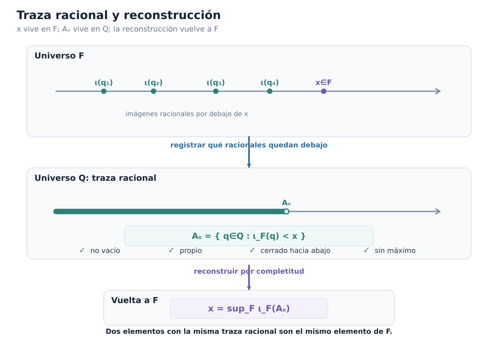
Si \(x\le y\), todo racional debajo de \(x\) está debajo de \(y\), y por ello \(A_x\subseteq A_y\). Recíprocamente, si \(A_x\subseteq A_y\), el elemento \(y\) domina a \(\iota_F(A_x)\); por la fórmula de reconstrucción, \(x\le y\). Además \(A_x=A_y\) implica \(x=y\). Si \(x<y\), un racional con \(x<\iota_F(q)<y\) pertenece a \(A_y\setminus A_x\), haciendo estricta la inclusión. Así, \[ x\le y\iff A_x\subseteq A_y,\qquad x<y\iff A_x\subsetneq A_y. \] Las trazas de elementos de otro cuerpo completo \(G\) vivirán también en \(\mathbb Q\). Podemos comparar esas trazas aunque no exista todavía ninguna correspondencia entre los elementos de \(F\) y \(G\). Falta mostrar que al reconstruir en \(G\) la traza de un elemento de \(F\) obtenemos exactamente la posición que buscamos.
Antes de seguir
Microcontrol 62
¿Por qué un cuerpo ordenado debe tener característica cero?
Ver solución del microcontrol 62
En un cuerpo ordenado se tiene \(0_F<1_F\). Sumando \(1_F\) repetidamente y usando la invariancia del orden por traslación obtenemos, para \(n>0\),
\[ 0_F<1_F<2\cdot1_F<\cdots<n\cdot1_F. \]
En particular,
\[ n\cdot1_F\ne0_F \]
para todo entero positivo \(n\). Pero la característica de un cuerpo sería positiva precisamente si existiera un mínimo \(n>0\) con \(n\cdot1_F=0_F\). Por tanto
\[ \boxed{\operatorname{char}F=0.} \]
El orden impide que los numerales positivos colapsen en el cero.
Microcontrol 63
Explica por qué la definición de \(\jmath_{\mathbb Z}^F(m-n)\) no depende de la diferencia formal elegida.
Ver solución del microcontrol 63
Supongamos que el mismo entero admite dos representaciones
\[ m-n=p-q. \]
Entonces, en \(\mathbb Z\),
\[ m+q=n+p. \]
Los numerales en \(F\) respetan la suma, así que
\[ \nu_F(m)+\nu_F(q)=\nu_F(n)+\nu_F(p). \]
Trasladando términos dentro del grupo aditivo de \(F\),
\[ \nu_F(m)-\nu_F(n)=\nu_F(p)-\nu_F(q). \]
Por tanto ambas diferencias formales producen el mismo elemento de \(F\), y la definición
\[ \boxed{\jmath_{\mathbb Z}^F(m-n)=\nu_F(m)-\nu_F(n)} \] es independiente del representante escogido.
Microcontrol 64
Para \(q=a/b\), ¿qué propiedad garantiza que \(\iota_F(q)\) no depende del representante racional?
Ver solución del microcontrol 64
Si
\[ \frac ab=\frac cd, \qquad b,d\ne0, \] entonces
\[ ad=bc \] en \(\mathbb Z\). La multiplicatividad de \(\jmath_{\mathbb Z}^F\) da
\[ \jmath(a)\jmath(d)=\jmath(b)\jmath(c). \]
Como \(b,d\ne0\) y \(\jmath_{\mathbb Z}^F\) es inyectiva, \(\jmath(b)\) y \(\jmath(d)\) son no nulos y poseen inversos en \(F\). Multiplicando por esos inversos, obtenemos
\[ \jmath(a)\jmath(b)^{-1}=\jmath(c)\jmath(d)^{-1}. \]
Así el valor
\[ \boxed{\iota_F(a/b)=\jmath(a)\jmath(b)^{-1}} \]
no depende de la fracción elegida. La propiedad decisiva es la igualdad por productos cruzados, transportada por la multiplicatividad, junto con la no anulación de los denominadores.
Microcontrol 65
¿En qué momento exacto de esta sección se usa por primera vez la completitud de \(F\)?
Ver solución del microcontrol 65
La completitud no se usa para construir la copia canónica de \(\mathbb Q\): característica cero, enteros y racionales aparecen en cualquier cuerpo ordenado.
El primer gasto de completitud ocurre al demostrar que \(F\) es arquimediano. Se supone por contradicción que
\[ N_F=\{\nu_F(n):n\in\mathbb N\} \] está acotado superiormente. Entonces, y sólo entonces, la completitud permite formar
\[ \boxed{s=\sup N_F.} \]
Ese supremo es la herramienta que produce la contradicción.
Microcontrol 66
Reconstruye la contradicción que demuestra que un cuerpo ordenado completo es arquimediano.
Ver solución del microcontrol 66
Supongamos que \(N_F\) está acotado superiormente y sea
\[ s=\sup N_F. \]
Como
\[ s-1_F<s, \]
\(s-1_F\) no puede ser una cota superior de \(N_F\), pues sería una cota superior menor que el supremo. Por tanto existe \(n\in\mathbb N\) tal que
\[ s-1_F<\nu_F(n). \]
Sumando \(1_F\) a ambos lados,
\[ s<\nu_F(n)+1_F=\nu_F(n+1). \]
Pero \(\nu_F(n+1)\in N_F\), lo que contradice que \(s\) sea cota superior. Luego \(N_F\) no está acotado superiormente y
\[ \boxed{F\text{ es arquimediano}.} \]
Microcontrol 67
En el lema de localización entera, ¿por qué no basta con saber simplemente que existe algún entero mayor que \(x\)?
Ver solución del microcontrol 67
Saber solamente que existe un entero \(m\) con
\[ x<\iota_F(m) \]
da una cota superior entera, pero no dice cuál es la primera celda de la rejilla entera que contiene a \(x\). Para el refinamiento racional posterior necesitamos simultáneamente un extremo entero por debajo y otro inmediatamente por encima:
\[ \boxed{\iota_F(m-1)\le x<\iota_F(m).} \]
La información adicional de que \(m\) es el primer entero de cierta lista que queda por encima de \(x\) es lo que produce la desigualdad inferior con \(m-1\).
Microcontrol 68
Explica el papel del mínimo de \(K\) en la producción de \[ m-1\le x<m. \]
Ver solución del microcontrol 68
Primero se elige un natural \(n\) con \(-\nu_F(n)<x<\nu_F(n)\). Entonces \(K=\{k\in\mathbb N:x<-\nu_F(n)+\nu_F(k)\}\) es no vacío y tiene un mínimo \(k_0>0\). Escriba \(k_0=k+1\). Pertenencia y minimalidad dan \(-\nu_F(n)+\nu_F(k)\le x<-\nu_F(n)+\nu_F(k+1)\). Con \(m=-n+k+1\), se obtiene \(\iota_F(m-1)\le x<\iota_F(m)\). El mínimo localiza dos enteros consecutivos alrededor de \(x\).
Microcontrol 69
Para \(x<y\), ¿por qué elegir \(1/n<y-x\) y localizar \(nx\) produce un racional entre ambos?
Ver solución del microcontrol 69
Sean \(x<y\). La arquimedianidad permite elegir \(n>0\) con
\[ \iota_F\!\left(\frac1n\right)<y-x. \]
Aplicamos la localización entera a \(x\,\iota_F(n)\) y obtenemos \(m\in\mathbb Z\) tal que
\[ \iota_F(m-1)\le x\,\iota_F(n)<\iota_F(m). \]
Como \(\iota_F(n)>0\), al dividir por ella obtenemos
\[ \iota_F\!\left(\frac{m-1}{n}\right)\le x<\iota_F\!\left(\frac mn\right). \]
Además, de la desigualdad izquierda de la localización se deduce
\[ \iota_F\!\left(\frac mn\right)\le x+\iota_F\!\left(\frac1n\right)<y. \]
Por tanto, para \(q=m/n\),
\[ \boxed{x<\iota_F(q)<y.} \]
El paso \(1/n<y-x\) hace que la malla racional sea más fina que la separación entre \(x\) e \(y\).
Microcontrol 70
Verifica las cuatro condiciones que hacen de \(A_x\) una cortadura y señala en cuáles se usa la densidad racional.
Ver solución del microcontrol 70
Para
\[ A_x=\{q\in\mathbb Q:\iota_F(q)<x\} \]
verificamos:
- No vacío: como \(x-1_F<x\), por densidad existe \(q_-\) con \(x-1_F<\iota_F(q_-)<x\). Entonces \(q_-\in A_x\).
- Propio: como \(x<x+1_F\), por densidad existe \(q_+\) con \(x<\iota_F(q_+)<x+1_F\). Entonces \(q_+\notin A_x\).
- Cerrado hacia abajo: si \(p<q\) y \(q\in A_x\), la preservación del orden da \(\iota_F(p)<\iota_F(q)<x\), luego \(p\in A_x\).
- Sin máximo: si \(q\in A_x\), entonces \(\iota_F(q)<x\); por densidad existe \(r\) con \(\iota_F(q)<\iota_F(r)<x\). La reflexión del orden da \(q<r\), y \(r\in A_x\).
Así
\[ \boxed{A_x\in\mathcal D.} \]
La densidad se usa en las condiciones no vacío, propio y sin máximo; la clausura hacia abajo sólo usa que \(\iota_F\) preserva el orden.
Microcontrol 71
¿Dónde se gasta la completitud por segunda vez al reconstruir \(x\) desde \(A_x\)?
Ver solución del microcontrol 71
El conjunto
\[ \iota_F(A_x)=\{\iota_F(q):q\in A_x\} \] es no vacío y está acotado superiormente por \(x\). La completitud se usa por segunda vez para asegurar que existe
\[ s=\sup_F\iota_F(A_x). \]
Como \(x\) es cota superior, \(s\le x\). Si \(s<x\), la densidad racional produciría \(q\) con
\[ s<\iota_F(q)<x. \]
Entonces \(q\in A_x\), de modo que \(\iota_F(q)\in\iota_F(A_x)\), contradiciendo que \(s\) sea cota superior. Por tanto
\[ \boxed{x=\sup_F\iota_F(A_x).} \]
La completitud no fabrica la traza; garantiza que la información racional contenida en ella puede volver a reunirse en un elemento de \(F\).
Microcontrol 72
¿Por qué la igualdad \(A_x=A_y\) obliga a \(x=y\)?
Ver solución del microcontrol 72
Si
\[ A_x=A_y, \] entonces también
\[ \iota_F(A_x)=\iota_F(A_y). \]
Aplicando la fórmula de reconstrucción a ambos elementos,
\[ x=\sup_F\iota_F(A_x) =\sup_F\iota_F(A_y)=y. \]
Por tanto
\[ \boxed{A_x=A_y\Longrightarrow x=y.} \]
La traza racional determina al elemento de manera inyectiva: dos posiciones distintas no pueden tener exactamente los mismos racionales por debajo.
Microcontrol 73
Explica por qué \(\mathbb Q\) puede servir como interfaz común entre dos cuerpos ordenados completos cuyos elementos sean literalmente distintos.
Ver solución del microcontrol 73
Sean \(F\) y \(G\) cuerpos ordenados completos. Cada uno contiene su copia canónica de \(\mathbb Q\),
\[ \iota_F:\mathbb Q\hookrightarrow F, \qquad \iota_G:\mathbb Q\hookrightarrow G. \]
Para \(x\in F\), su posición queda codificada por
\[ A_x=\{q\in\mathbb Q:\iota_F(q)<x\}\subseteq\mathbb Q. \]
Análogamente, un elemento de \(G\) posee una traza que también es un subconjunto del mismo conjunto \(\mathbb Q\). Así, aunque los elementos de \(F\) y \(G\) sean objetos literalmente distintos, sus posiciones pueden describirse mediante datos que viven en un dominio común.
Además, en cada modelo completo la traza determina al elemento mediante un supremo. Por eso la estrategia de comparación puede ser
\[ \boxed{\text{elemento}\to\text{traza racional}\to\text{reconstrucción en el otro modelo}.} \]
En §0.9 esto prepara el puente; todavía no construye el transporte \(F\to G\), que pertenece a §0.10.
Ya no dependemos de la codificación por cortaduras para hablar de la posición de un real abstracto. La posición puede registrarse racionalmente en cualquier modelo completo. La pregunta final es ahora concreta:
Si \(F\) y \(G\) asignan la misma información racional a sus elementos, ¿podemos reconstruir uno dentro del otro?
Ejercicios de la sección 0.9
Ejercicio 38. Separar universos y construir la copia racional canónica
Sea
\[ F=(F,+,\cdot,0_F,1_F,\le_F) \]
un cuerpo ordenado arbitrario. No supongas todavía que sea completo.
- Define los numerales de \(F\) mediante
\[ \nu_F(0)=0_F,\qquad \nu_F(n+1)=\nu_F(n)+1_F, \]
y demuestra que \(m<n\) implica \(\nu_F(m)<\nu_F(n)\). Deduce que \(F\) tiene característica cero. 2. Escribe correctamente los tipos de las aplicaciones
\[ \nu_F,\qquad \jmath_{\mathbb Z}^F,\qquad \iota_F, \]
donde la segunda debe representar enteros y la tercera racionales dentro de \(F\). 3. Para \(m,n\in\mathbb N\), define
\[ \jmath_{\mathbb Z}^F(m-n)=\nu_F(m)-\nu_F(n) \]
y explica qué debe verificarse para que la definición no dependa de la representación del entero. 4. Para \(a,b\in\mathbb Z\) con \(b\ne0\), define
\[ \iota_F\!\left(\frac ab\right) = \jmath_{\mathbb Z}^F(a) \bigl(\jmath_{\mathbb Z}^F(b)\bigr)^{-1}. \]
Justifica por qué el inverso existe y qué igualdad debe usarse para comprobar que el valor no depende del representante \(a/b\). 5. Explica por qué, aun después de estas verificaciones, la escritura \(\mathbb Q\subseteq F\) es una identificación notacional con la imagen de \(\iota_F\) y no una igualdad literal impuesta entre conjuntos.
Cierra indicando qué parte de esta construcción requiere completitud de \(F\).
Ver solución del ejercicio 38
Partimos sólo de que \(F\) es un cuerpo ordenado. En particular,
\[ 0_F<1_F. \]
Definimos
\[ \nu_F(0)=0_F,\qquad \nu_F(n+1)=\nu_F(n)+1_F. \]
Inducción en el segundo argumento, usando la recurrencia y distributividad, da \(\nu_F(m+n)=\nu_F(m)+\nu_F(n)\) y \(\nu_F(mn)=\nu_F(m)\nu_F(n)\). Por ejemplo, el paso multiplicativo usa \(\nu_F(m(n+1))=\nu_F(mn+m)=\nu_F(mn)+\nu_F(m)\). Estas identidades justifican las leyes de la copia entera al expandir diferencias de numerales y, después, las igualdades de productos cruzados para las fracciones.
Por inducción, \(n>0\) implica \(\nu_F(n)>0_F\). Si \(m<n\), existe \(k>0\) con \(n=m+k\), y entonces
\[ \nu_F(n)=\nu_F(m)+\nu_F(k)>\nu_F(m). \]
Por tanto los numerales preservan estrictamente el orden. En particular, ningún \(n>0\) satisface \(\nu_F(n)=0_F\), así que
\[ \boxed{\operatorname{char}F=0}. \]
Los tipos son
\[ \nu_F:\mathbb N\longrightarrow F, \]
\[ \jmath_{\mathbb Z}^F:\mathbb Z\longrightarrow F, \]
y
\[ \iota_F:\mathbb Q\longrightarrow F. \]
Para un entero presentado como \(m-n\), definimos
\[ \jmath_{\mathbb Z}^F(m-n)=\nu_F(m)-\nu_F(n). \]
Si \(m-n=p-q\), entonces \(m+q=n+p\). La aditividad de los numerales da
\[ \nu_F(m)+\nu_F(q)=\nu_F(n)+\nu_F(p), \]
y, trasladando términos,
\[ \nu_F(m)-\nu_F(n)=\nu_F(p)-\nu_F(q). \]
Así la definición no depende de la representación. La característica cero impide que enteros distintos colapsen, por lo que \(\jmath_{\mathbb Z}^F\) es inyectiva.
Para \(a/b\in\mathbb Q\), con \(b\ne0\), definimos
\[ \iota_F\!\left(\frac ab\right) = \jmath_{\mathbb Z}^F(a) \bigl(\jmath_{\mathbb Z}^F(b)\bigr)^{-1}. \]
Como \(b\ne0\) y \(\jmath_{\mathbb Z}^F\) es inyectiva,
\[ \jmath_{\mathbb Z}^F(b)\ne0_F, \]
de modo que el inverso existe. Si
\[ \frac ab=\frac cd, \]
entonces \(ad=bc\). Aplicando la multiplicatividad de la copia entera,
\[ \jmath_{\mathbb Z}^F(a)\jmath_{\mathbb Z}^F(d) = \jmath_{\mathbb Z}^F(b)\jmath_{\mathbb Z}^F(c). \]
Multiplicando por los inversos de las imágenes de \(b\) y \(d\), obtenemos el mismo valor para ambas fracciones. Por tanto \(\iota_F\) está bien definida. Las leyes de cuerpo muestran que conserva suma, producto, \(0\) y \(1\), y el orden se conserva y refleja. En consecuencia,
\[ \boxed{\iota_F:\mathbb Q\hookrightarrow F} \]
es una incrustación de cuerpos ordenados.
Después de esta certificación podemos identificar notacionalmente \(\mathbb Q\) con la imagen \(\iota_F(\mathbb Q)\) cuando resulte cómodo. Eso no afirma una igualdad literal entre los conjuntos subyacentes: la afirmación estructural primaria es la existencia de la incrustación canónica.
Nada de esta construcción ha usado completitud. La copia canónica de \(\mathbb Q\) existe en todo cuerpo ordenado.
Referencia visual. Véase la figura C00-F08 del texto principal, De completitud a rejilla racional en F, como síntesis posterior de este argumento.
Ejercicio 39. La completitud obliga a la arquimedianidad
Supón ahora que \(F\) es un cuerpo ordenado completo y considera
\[ N_F=\{\nu_F(n):n\in\mathbb N\}. \]
Demuestra que \(F\) es arquimediano. Organiza la prueba por contradicción.
- Supón que \(N_F\) está acotado superiormente y usa completitud para definir
\[ s=\sup_F N_F. \]
- Explica por qué \(s-1_F\) no puede ser una cota superior de \(N_F\).
- Deduce que existe \(n\in\mathbb N\) con
\[ s-1_F<\nu_F(n), \]
y obtiene una contradicción sumando \(1_F\). 4. Concluye que para todo \(x\in F\) existe \(n\in\mathbb N\) tal que
\[ x<\nu_F(n). \]
- Señala el único paso de la demostración en el que se gasta la completitud y explica por qué el argumento no demuestra que todo cuerpo ordenado sea arquimediano.
Ver solución del ejercicio 39
Supongamos, para obtener una contradicción, que
\[ N_F=\{\nu_F(n):n\in\mathbb N\} \]
está acotado superiormente. Es no vacío porque \(0_F=\nu_F(0)\in N_F\).
Aquí se gasta la completitud. Existe
\[ s=\sup_F N_F. \]
Como \(1_F>0_F\),
\[ s-1_F<s. \]
El elemento \(s-1_F\) no puede ser una cota superior de \(N_F\): si lo fuera, sería una cota superior estrictamente menor que el supremo. Por tanto existe \(n\in\mathbb N\) tal que
\[ s-1_F<\nu_F(n). \]
Sumando \(1_F\),
\[ s<\nu_F(n)+1_F=\nu_F(n+1). \]
Pero \(\nu_F(n+1)\in N_F\), contradicción con que \(s\) sea cota superior. Luego \(N_F\) no está acotado superiormente.
Así, ningún \(x\in F\) puede ser cota superior de \(N_F\). Por tanto para todo \(x\in F\) existe \(n\in\mathbb N\) con
\[ \boxed{x<\nu_F(n)}. \]
Ésta es la forma arquimediana que usaremos.
La completitud intervino exactamente en la existencia de \(s=\sup_F N_F\) bajo la hipótesis de acotación. El resto utiliza sólo orden y estructura aditiva. Por ello el resultado correcto es
\[ \boxed{\text{cuerpo ordenado completo}\Longrightarrow\text{arquimediano}}, \]
no la falsa inferencia «todo cuerpo ordenado es arquimediano».
Referencia visual. Véase la figura C00-F08 del texto principal, De completitud a rejilla racional en F, como síntesis posterior de este argumento.
Ejercicio 40. Trazar el camino desde la arquimedianidad hasta la densidad racional
Sea \(F\) un cuerpo ordenado completo y usa su incrustación racional canónica
\[ \iota_F:\mathbb Q\hookrightarrow F. \]
Reconstruye sin saltos la cadena
\[ \text{arquimedianidad} \Longrightarrow \text{localización entera} \Longrightarrow \text{localización racional} \Longrightarrow \text{densidad de }\iota_F(\mathbb Q). \]
- Para \(x\in F\), demuestra que existe \(m\in\mathbb Z\) tal que
\[ \iota_F(m-1)\le x<\iota_F(m). \]
Debes construir un conjunto \(K\subseteq\mathbb N\), tomar su mínimo y explicar por qué la minimalidad produce simultáneamente las dos desigualdades. 2. Sean \(x<y\) en \(F\). Usa la arquimedianidad aplicada a \((y-x)^{-1}\) para elegir \(n\in\mathbb N\), \(n>0\), de modo que
\[ 0<\iota_F\!\left(\frac1n\right)<y-x. \]
- Aplica la localización entera a \(x\,\iota_F(n)\) y construye un entero \(m\) para el cual
\[ \iota_F\!\left(\frac{m-1}{n}\right)\le x<\iota_F\!\left(\frac mn\right). \]
- Demuestra que el mismo \(q=m/n\) satisface
\[ \boxed{x<\iota_F(q)<y}. \]
- Cierra con un mapa de dependencias que indique dónde se usa: orden de \(F\), arquimedianidad, buen orden de \(\mathbb N\), estructura de cuerpo e incrustación racional. No invoques una intuición geométrica de «racionales muy juntos».
Pista conceptual. La arquimedianidad da escala; el mínimo de \(K\) convierte esa escala en una celda entera; dividir una celda suficientemente fina produce la posición racional intermedia.
Ver solución del ejercicio 40
Primero localizamos cualquier elemento entre enteros consecutivos. Sea \(x\in F\). Por arquimedianidad existen \(n_1,n_2\in\mathbb N\) tales que
\[ x<\iota_F(n_1), \qquad -x<\iota_F(n_2). \]
Tomamos, por ejemplo,
\[ n=n_1+n_2+1. \]
Entonces \(n>0\) y
\[ -\iota_F(n)<x<\iota_F(n). \]
Definimos
\[ K=\{k\in\mathbb N:x<-\iota_F(n)+\iota_F(k)\}. \]
El conjunto \(K\) no es vacío. Para \(k=2n+1\),
\[ -\iota_F(n)+\iota_F(2n+1)=\iota_F(n+1)>x. \]
Por el buen orden de \(\mathbb N\), \(K\) tiene mínimo; llamémoslo \(k_0\). No puede ser \(0\), porque \(-\iota_F(n)<x\). Escribimos
\[ k_0=k+1. \]
La minimalidad implica \(k\notin K\), de modo que
\[ -\iota_F(n)+\iota_F(k)\le x. \]
Como \(k+1\in K\),
\[ x<-\iota_F(n)+\iota_F(k+1). \]
Definimos
\[ m=-n+(k+1)\in\mathbb Z. \]
Entonces \(m-1=-n+k\), y obtenemos
\[ \boxed{\iota_F(m-1)\le x<\iota_F(m)}. \]
Ésta es la localización entera.
Sean ahora \(x<y\). La diferencia \(y-x\) es positiva. Aplicamos la arquimedianidad a \((y-x)^{-1}\). Existe \(n\in\mathbb N\) tal que
\[ (y-x)^{-1}<\iota_F(n). \]
Necesariamente \(n>0\). Al invertir elementos positivos se invierte el orden, así que
\[ 0<\iota_F(n)^{-1}<y-x. \]
Como \(\iota_F\) preserva inversos,
\[ \boxed{0<\iota_F\!\left(\frac1n\right)<y-x}. \]
Aplicamos la localización entera a \(x\,\iota_F(n)\). Existe \(m\in\mathbb Z\) tal que
\[ \iota_F(m-1)\le x\,\iota_F(n)<\iota_F(m). \]
Como \(\iota_F(n)>0\), dividimos por ella:
\[ \iota_F\!\left(\frac{m-1}{n}\right) \le x< \iota_F\!\left(\frac mn\right). \]
De la desigualdad izquierda antes de dividir se obtiene también
\[ \iota_F(m)\le x\,\iota_F(n)+1_F. \]
Dividiendo otra vez por \(\iota_F(n)\),
\[ \iota_F\!\left(\frac mn\right) \le x+\iota_F\!\left(\frac1n\right) < x+(y-x)=y. \]
Para
\[ q=\frac mn\in\mathbb Q, \]
queda
\[ \boxed{x<\iota_F(q)<y}. \]
Así la copia canónica de \(\mathbb Q\) es densa en \(F\).
El mapa de dependencias es preciso:
- el orden permite comparar, trasladar e invertir desigualdades positivas;
- la arquimedianidad proporciona escalas enteras suficientemente grandes;
- el buen orden de \(\mathbb N\) produce el mínimo de \(K\);
- la estructura de cuerpo permite formar \((y-x)^{-1}\) y dividir por \(n>0\);
- la incrustación racional traduce numerales, enteros, fracciones e inversos entre \(\mathbb Q\) y \(F\).
No se ha supuesto densidad por analogía geométrica: se la ha deducido estructuralmente.
Referencia visual. Véase la figura C00-F08 del texto principal, De completitud a rejilla racional en F, como síntesis posterior de este argumento.
Ejercicio 41. Convertir una posición abstracta en una cortadura racional
Para \(x\in F\), define
\[ A_x=\{q\in\mathbb Q:\iota_F(q)<x\}. \]
- Escribe los tipos correctos de \(x\), \(q\), \(\iota_F(q)\) y \(A_x\). Explica por qué \(A_x\) es un subconjunto de \(\mathbb Q\) y no un subconjunto de \(F\).
- Demuestra que \(A_x\) es una cortadura de Dedekind verificando las cuatro condiciones: no vaciedad, propiedad de ser subconjunto propio, clausura hacia abajo y ausencia de máximo.
- En cada una de las cuatro verificaciones, identifica si interviene la densidad racional demostrada en el ejercicio 40 o sólo la preservación del orden por \(\iota_F\).
- Como variación, toma \(c\in\mathbb Q\) y \(x=\iota_F(c)\). Demuestra que
\[ \boxed{A_{\iota_F(c)}=c^*}. \]
Explica qué muestra esta identidad acerca de la compatibilidad entre la traza racional de un modelo abstracto y las cortaduras racionales construidas antes.
Pista conceptual. Para probar que \(A_x\) es no vacío y propio, busca racionales entre \(x-1_F\) y \(x\), y entre \(x\) y \(x+1_F\).
Ver solución del ejercicio 41
Sea \(x\in F\) y definamos
\[ A_x=\{q\in\mathbb Q:\iota_F(q)<x\}. \]
Los tipos son
\[ x\in F, \qquad q\in\mathbb Q, \qquad \iota_F(q)\in F, \qquad A_x\subseteq\mathbb Q. \]
La desigualdad que define \(A_x\) ocurre en \(F\), entre \(\iota_F(q)\) y \(x\); pero los objetos registrados son los racionales \(q\). Por eso \(A_x\) vive en \(\mathbb Q\), no en \(F\).
No vaciedad. Como
\[ x-1_F<x, \]
la densidad racional proporciona \(q_-\in\mathbb Q\) tal que
\[ x-1_F<\iota_F(q_-)<x. \]
Entonces \(q_-\in A_x\).
Subconjunto propio. Como
\[ x<x+1_F, \]
la densidad racional proporciona \(q_+\in\mathbb Q\) con
\[ x<\iota_F(q_+)<x+1_F. \]
Por tanto \(q_+\notin A_x\) y \(A_x\ne\mathbb Q\).
Clausura hacia abajo. Si \(q\in A_x\) y \(p<q\), entonces
\[ \iota_F(p)<\iota_F(q)<x, \]
por preservación estricta del orden. Luego \(p\in A_x\). Aquí no se usa densidad.
Ausencia de máximo. Si \(q\in A_x\), entonces \(\iota_F(q)<x\). Por densidad racional existe \(r\in\mathbb Q\) con
\[ \iota_F(q)<\iota_F(r)<x. \]
Como \(\iota_F\) refleja el orden, \(q<r\), y además \(r\in A_x\). Por tanto \(A_x\) no tiene máximo.
Así,
\[ \boxed{A_x\in\mathcal D}. \]
La densidad se usa en no vaciedad, propiedad de ser subconjunto propio y ausencia de máximo; la clausura hacia abajo usa sólo preservación del orden.
Tomemos ahora \(c\in\mathbb Q\) y \(x=\iota_F(c)\). Entonces
\[ \begin{aligned} q\in A_{\iota_F(c)} &\iff \iota_F(q)<\iota_F(c)\\ &\iff q<c. \end{aligned} \]
Por tanto
\[ \boxed{A_{\iota_F(c)}=\{q\in\mathbb Q:q<c\}=c^*}. \]
La traza racional de un racional abstractamente incrustado reproduce exactamente la cortadura racional canónica. La compatibilidad aparece sin identificar a \(F\) con el modelo concreto de Dedekind.
Referencia visual. Véase la figura C00-F09 del texto principal, Traza racional y reconstrucción, como síntesis posterior de este argumento.
Ejercicio 42. Reconstruir un elemento desde su traza y recuperar el orden
Sea \(F\) un cuerpo ordenado completo y, para cada \(x\in F\), usa la cortadura
\[ A_x=\{q\in\mathbb Q:\iota_F(q)<x\}. \]
- Demuestra que
\[ \iota_F(A_x)=\{\iota_F(q):q\in A_x\} \]
es no vacío y está acotado superiormente por \(x\). 2. Usa completitud para definir
\[ s=\sup_F\iota_F(A_x) \]
y demuestra que
\[ \boxed{x=\sup_F\iota_F(A_x)}. \]
En el paso decisivo, si supones \(s<x\), debes producir mediante densidad racional un elemento de \(\iota_F(A_x)\) estrictamente mayor que \(s\). 3. Deduce que
\[ A_x=A_y\Longrightarrow x=y. \]
- Demuestra la equivalencia
\[ \boxed{x\le y\quad\Longleftrightarrow\quad A_x\subseteq A_y} \]
y deduce también
\[ \boxed{x<y\quad\Longleftrightarrow\quad A_x\subsetneq A_y}. \]
- Explica por qué estos resultados convierten a \(\mathbb Q\) en un lenguaje común para registrar posiciones dentro de cualquier cuerpo ordenado completo, pero no construyas todavía una aplicación entre dos modelos distintos.
Pista conceptual. La traza determina a \(x\) porque cualquier hueco entre su supremo y \(x\) contendría una imagen racional que la propia traza habría tenido que registrar.
Ver solución del ejercicio 42
Sea
\[ B_x=\iota_F(A_x)=\{\iota_F(q):q\in A_x\}\subseteq F. \]
Como \(A_x\) es una cortadura, \(B_x\) es no vacío. Además, si \(q\in A_x\), entonces
\[ \iota_F(q)<x, \]
de modo que \(x\) es una cota superior de \(B_x\).
Aquí se gasta nuevamente la completitud de \(F\): existe
\[ s=\sup_F B_x. \]
Como \(x\) es cota superior,
\[ s\le x. \]
Supongamos \(s<x\). Por densidad racional existe \(q\in\mathbb Q\) tal que
\[ s<\iota_F(q)<x. \]
La segunda desigualdad implica \(q\in A_x\), de modo que \(\iota_F(q)\in B_x\). Pero la primera afirma que un elemento de \(B_x\) es mayor que su cota superior \(s\), contradicción. Por tanto \(s<x\) es imposible y
\[ \boxed{x=\sup_F\iota_F(A_x)}. \]
Si \(A_x=A_y\), entonces sus imágenes racionales coinciden y la reconstrucción da
\[ x=\sup_F\iota_F(A_x)=\sup_F\iota_F(A_y)=y. \]
Así \(x\mapsto A_x\) es inyectiva.
Si \(x\le y\) y \(q\in A_x\), entonces
\[ \iota_F(q)<x\le y, \]
y por tanto \(q\in A_y\). Luego
\[ x\le y\Longrightarrow A_x\subseteq A_y. \]
Recíprocamente, si \(A_x\subseteq A_y\), entonces
\[ \iota_F(A_x)\subseteq\iota_F(A_y). \]
Como
\[ y=\sup_F\iota_F(A_y), \]
\(y\) es una cota superior de \(\iota_F(A_x)\). Pero
\[ x=\sup_F\iota_F(A_x), \]
así que \(x\le y\). Por tanto
\[ \boxed{x\le y\iff A_x\subseteq A_y}. \]
Si \(x<y\), la densidad racional produce \(q\) con
\[ x<\iota_F(q)<y. \]
Entonces \(q\in A_y\setminus A_x\), de modo que
\[ A_x\subsetneq A_y. \]
Recíprocamente, si \(A_x\subsetneq A_y\), la equivalencia no estricta da \(x\le y\), y no puede ocurrir \(x=y\) porque entonces las trazas serían iguales. Por tanto
\[ \boxed{x<y\iff A_x\subsetneq A_y}. \]
Cada posición \(x\in F\) queda así codificada por un subconjunto \(A_x\subseteq\mathbb Q\), y tanto el elemento como su orden se recuperan desde esa información racional. Ésta es la razón por la que \(\mathbb Q\) puede servir como lenguaje común entre modelos completos cuyos elementos sean literalmente distintos.
El límite de §0.9 debe permanecer visible: todavía no hemos definido ninguna aplicación
\[ F\longrightarrow G \]
entre dos modelos completos. Sólo hemos construido el código racional que permitirá ese transporte en §0.10.
0.10. Únicos hasta isomorfismo
Sean \(F,G\) cuerpos ordenados completos, con sus incrustaciones racionales canónicas. Dado \(x\in F\), la traza \(A_x^F\) es no vacía y propia. Su imagen en \(G\) es no vacía; además, si \(u\in\mathbb Q\setminus A_x^F\), todo \(q\in A_x^F\) satisface \(q<u\), de modo que \(\iota_G(u)\) domina esa imagen. Podemos usar la completitud de \(G\) para definir \[ \phi:F\longrightarrow G,\qquad \phi(x)=\sup_G\iota_G(A_x^F). \] El exterior \(u\) acredita la acotación; el valor definido es el supremo de la imagen y queda determinado de manera única, cualquiera que haya sido el exterior utilizado.
Proposición. Para cada \(x\in F\), se cumple \(A_{\phi(x)}^G=A_x^F\).
Demostración. Si \(q\in A_x^F\), la ausencia de máximo proporciona \(r\in A_x^F\) con \(q<r\). Como \(\iota_G(r)\le\phi(x)\), \[ \iota_G(q)<\iota_G(r)\le\phi(x), \] y \(q\in A_{\phi(x)}^G\). Elegir \(r\) por encima del racional inicial aprovecha la ausencia de máximo para obtener la desigualdad estricta que exige una traza; la condición de cota superior por sí sola sería insuficiente.
Si \(q\in A_{\phi(x)}^G\) pero \(q\notin A_x^F\), todos los miembros de \(A_x^F\) son menores que \(q\). Entonces \(\iota_G(q)\) sería cota superior de \(\iota_G(A_x^F)\), obligando a \(\phi(x)\le\iota_G(q)\), contra la pertenencia de \(q\) a la traza de \(\phi(x)\). Esto prueba la inclusión inversa. \(\square\)
Las equivalencias de orden de §0.9 y esta identidad dan \[ x\le y\iff\phi(x)\le\phi(y),\qquad x<y\iff\phi(x)<\phi(y). \] En particular, \(\phi\) es inyectiva. Para probar la sobreyectividad, construyamos simétricamente \[ \psi:G\longrightarrow F,\qquad \psi(y)=\sup_F\iota_F(A_y^G). \] El mismo argumento verifica su buena definición y prueba \(A_{\psi(y)}^F=A_y^G\). Por tanto \[ A_{\psi(\phi(x))}^F=A_{\phi(x)}^G=A_x^F. \] La traza determina al elemento en \(F\), así que \(\psi(\phi(x))=x\). Intercambiando los cuerpos obtenemos \(\phi(\psi(y))=y\). Cada \(y\) tiene la preimagen explícita \(\psi(y)\) y ambas aplicaciones son inversas. Hemos construido un isomorfismo de órdenes; debemos verificar todavía las operaciones.
La identidad de trazas permite reconocer primero las posiciones racionales dentro de la correspondencia. Para \(q\in\mathbb Q\), la conservación y reflexión del orden racional dan \[ A_{\iota_F(q)}^F=q^*=A_{\iota_G(q)}^G. \] Como \(\phi\) conserva trazas, la unicidad de reconstrucción en \(G\) implica \[ \phi(\iota_F(q))=\iota_G(q). \] En particular, conserva cero y unidad.
Para transportar la suma necesitamos reconocer qué racionales quedan debajo de \(x+y\) usando sólo los que quedan debajo de cada sumando. El margen de una desigualdad estricta permite elegir dos testigos racionales que aún dejan a \(q\) por debajo de su suma. Para cualesquiera \(x,y\in F\) y \(q\in\mathbb Q\), \[ q\in A_{x+y}^F \iff \exists r\in A_x^F\ \exists s\in A_y^F:\ q<r+s. \] Probemos la implicación que requiere construir los testigos. Si \(\iota_F(q)<x+y\), entonces \(\iota_F(q)-y<x\). Por densidad, elijamos un racional \(r\) con \[ \iota_F(q)-y<\iota_F(r)<x. \] Tenemos \(r\in A_x^F\) y \(\iota_F(q)-\iota_F(r)<y\). Una segunda aplicación de densidad proporciona \(s\) tal que \[ \iota_F(q)-\iota_F(r)<\iota_F(s)<y. \] De aquí \(s\in A_y^F\) y \(q<r+s\), usando la reflexión del orden racional. En el sentido inverso, tales testigos satisfacen \[ \iota_F(q)<\iota_F(r)+\iota_F(s)<x+y, \] y por ello \(q\in A_{x+y}^F\).
En este criterio sólo intervienen subconjuntos de \(\mathbb Q\) y su suma racional, datos que el transporte conserva. Al aplicarlo en \(G\), las igualdades de trazas dan \[ A_{\phi(x+y)}^G=A_{x+y}^F =A_{\phi(x)+\phi(y)}^G. \] La reconstrucción en \(G\) obliga a \(\phi(x+y)=\phi(x)+\phi(y)\). Como \(\phi(0_F)=0_G\), aplicar esta identidad a \(x+(-x)=0_F\) y usar unicidad del inverso aditivo prueba también \(\phi(-x)=-\phi(x)\).
Para el producto trabajemos primero con \(x,y\ge0_F\). Su traza satisface \[ q\in A_{xy}^F\iff q<0\ \text{o}\ \exists r,s\in\mathbb Q:\ 0<r,\ 0<s,\ r\in A_x^F,\ s\in A_y^F,\ q<rs. \] Si \(q<0\), su imagen está debajo de \(0_F\le xy\). Si hay testigos positivos \(r,s\) como los indicados, entonces \(0_F<\iota_F(r)<x\) y \(0_F<\iota_F(s)<y\); multiplicando por cantidades positivas obtenemos \(\iota_F(rs)<xy\), y \(q<rs\) implica \(\iota_F(q)<xy\).
Recíprocamente, supongamos \(\iota_F(q)<xy\) y \(q\ge0\). Esto obliga a \(x,y>0_F\). Podemos dividir por \(y\) y elegir, mediante densidad, \[ \iota_F(q)y^{-1}<\iota_F(r)<x. \] El extremo izquierdo es no negativo, por lo que \(r>0\) y \(r\in A_x^F\). La primera desigualdad permite otra elección racional: \[ \iota_F(q)\iota_F(r)^{-1}<\iota_F(s)<y. \] Entonces \(s>0\), \(s\in A_y^F\) y \(q<rs\). Esto demuestra el criterio. Si uno de \(x,y\) es cero, la segunda alternativa no admite los dos testigos positivos y queda exactamente la traza \(0^*\), como debe ocurrir.
Dado que \(\phi\) preserva cero y orden, transporta elementos no negativos a elementos no negativos. El criterio del producto y la igualdad de trazas, aplicados en ambos cuerpos, dan \[ A_{\phi(xy)}^G=A_{\phi(x)\phi(y)}^G. \] Por tanto \(\phi(xy)=\phi(x)\phi(y)\) cuando \(x,y\ge0_F\).
Para \(x<0_F\le y\), usamos \(xy=-((-x)y)\), la conservación del opuesto y el caso no negativo: \[ \phi(xy)=-\phi((-x)y) =-\bigl(\phi(-x)\phi(y)\bigr)=\phi(x)\phi(y). \] Para \(x\ge0_F>y\), intercambiamos los factores y utilizamos la conmutatividad del producto en ambos cuerpos. Si ambos son negativos, \[ \phi(xy)=\phi((-x)(-y)) =\phi(-x)\phi(-y)=(-\phi(x))(-\phi(y))=\phi(x)\phi(y). \] Así se conserva el producto para todos los signos. Para \(x\ne0_F\), la inyectividad y la conservación del cero garantizan \(\phi(x)\ne0_G\); al aplicar la multiplicatividad a \(xx^{-1}=1_F\) y usar unicidad del inverso obtenemos \(\phi(x^{-1})=\phi(x)^{-1}\).
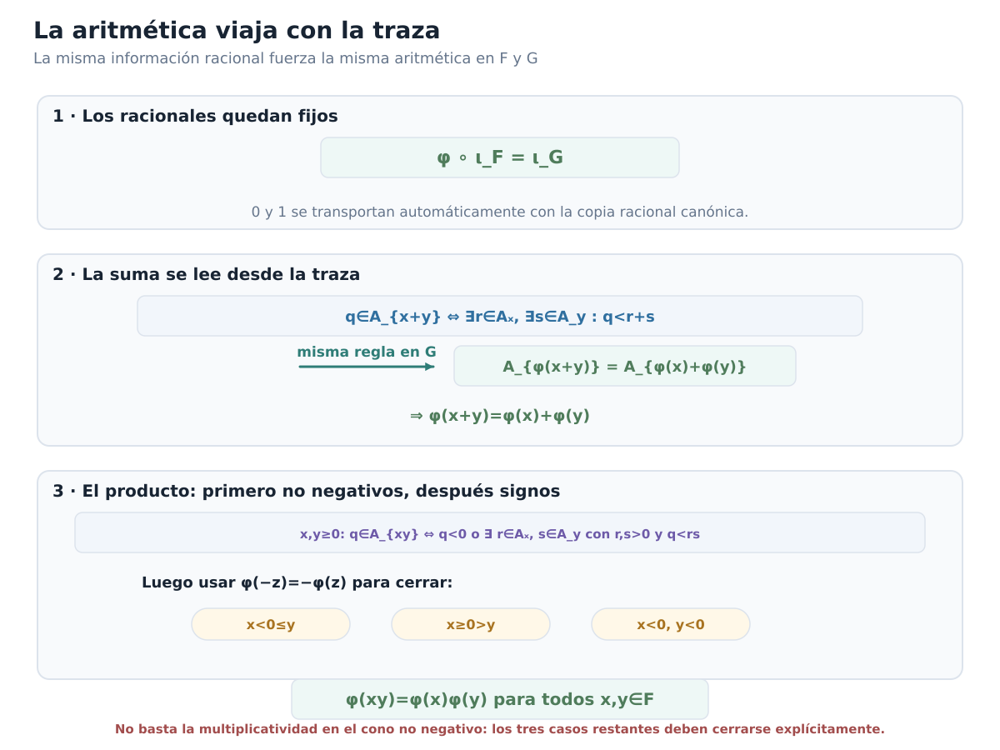
Hemos probado que \(\phi\) es un isomorfismo de cuerpos ordenados. Su construcción parece determinada por los racionales; para demostrar que ningún otro isomorfismo es posible, sea \(T:F\to G\) un isomorfismo de cuerpos ordenados cualquiera. La composición \(T\circ\iota_F\) es una incrustación racional en \(G\), y la unicidad de esa incrustación impone \(T\circ\iota_F=\iota_G\). Para todo \(x\in F\) y todo \(q\in\mathbb Q\), \[ \begin{aligned} q\in A_x^F &\iff\iota_F(q)<x\\ &\iff T(\iota_F(q))<T(x)\\ &\iff\iota_G(q)<T(x)\\ &\iff q\in A_{T(x)}^G. \end{aligned} \] Por tanto \(A_{T(x)}^G=A_x^F=A_{\phi(x)}^G\), y la reconstrucción en \(G\) da \(T(x)=\phi(x)\). Como vale para cada \(x\), tenemos \(T=\phi\).
Teorema de existencia y unicidad. Existen cuerpos ordenados completos. Entre cualesquiera dos de ellos hay un único isomorfismo de cuerpos ordenados.
La existencia procede de las cortaduras y la propiedad del supremo demostrada en §0.8. La unicidad identifica estructuras aunque sus elementos tengan representaciones conjuntistas diferentes. Al tomar \(F=G\), la identidad ya es un isomorfismo; por unicidad, todo automorfismo de cuerpo ordenado de \(F\) es la identidad.
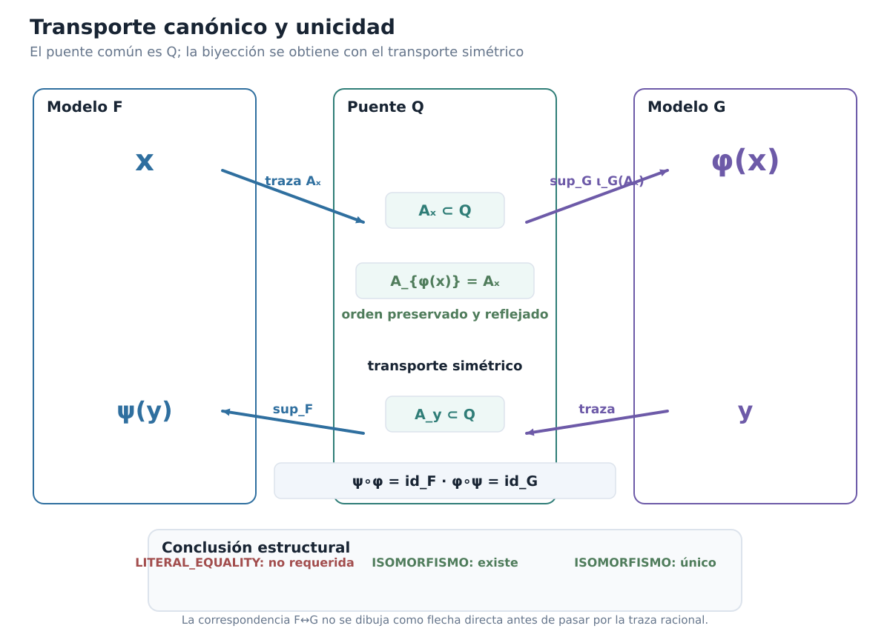
La fórmula \(\phi(x)=\sup_G\iota_G(A_x^F)\) determina un valor único. Calcularlo a partir de una representación concreta exige información adicional sobre cómo se presentan elementos, trazas y supremos; el teorema estructural no suministra automáticamente esos procedimientos. Las cortaduras nos permitieron construir un modelo y comprobar su existencia. La comparación con cualquier otro modelo nos permite trabajar con la estructura común y utilizar el símbolo \(\mathbb R\) sin tener que fijar para siempre una representación particular de sus elementos.
Lectura complementaria
La construcción de los reales ofrece otra ruta de demostración de la unicidad mediante operaciones con conjuntos y supremos, y desarrolla operaciones sobre cortaduras mediante recintos racionales. Puede leerse después de este capítulo para comparar estrategias y estudiar sus comprobaciones adicionales. La guía de lectura explica la relación entre ambas exposiciones y da acceso al libro completo, con sus 78 ejercicios resueltos.
Antes de cerrar el manuscrito del capítulo
Microcontrol 74
¿Por qué no está bien definida \(\phi(x)=\sup_G\iota_G(A_x)\) hasta comprobar no vaciedad y acotación de \(\iota_G(A_x)\)?
Ver solución del microcontrol 74
La expresión
\[ \phi(x)=\sup_G\iota_G(A_x) \]
sólo tiene sentido si el conjunto del que tomamos el supremo satisface las hipótesis de completitud: debe ser no vacío y estar acotado superiormente en \(G\).
Como \(A_x\) es una cortadura, \(A_x\ne\varnothing\), luego \(\iota_G(A_x)\ne\varnothing\). Además, como \(A_x\ne\mathbb Q\), podemos elegir \(u\notin A_x\). Para todo \(q\in A_x\) se tiene \(q<u\): si \(q=u\) o \(u<q\), la clausura inferior de \(A_x\) obligaría a \(u\in A_x\). Por tanto
\[ \iota_G(q)<\iota_G(u) \qquad(q\in A_x), \]
y \(\iota_G(u)\) es una cota superior. Sólo después de estas dos verificaciones queda legítimamente definida
\[ \boxed{\phi(x)=\sup_G\iota_G(A_x).} \]
Microcontrol 75
¿Dónde se usa exactamente la completitud de \(G\) al construir \(\phi\)?
Ver solución del microcontrol 75
La completitud de \(G\) se gasta una vez comprobado que
\[ \iota_G(A_x)\ne\varnothing \]
y que este conjunto posee una cota superior en \(G\). Entonces la propiedad del supremo garantiza la existencia de
\[ \boxed{\sup_G\iota_G(A_x).} \]
Nada anterior en la construcción de \(A_x\) o de la copia racional de \(G\) necesita completitud. La hipótesis adicional de que \(G\) es completo se usa precisamente para convertir la información racional transportada en un elemento concreto de \(G\).
Microcontrol 76
Demuestra que \(A_{\phi(x)}=A_x\) y explica por qué la ausencia de máximo de \(A_x\) es necesaria para una de las inclusiones.
Ver solución del microcontrol 76
Sea
\[ S_x=\iota_G(A_x), \qquad \phi(x)=\sup_G S_x. \]
Para probar \(A_x\subseteq A_{\phi(x)}\), tomamos \(q\in A_x\). Como \(A_x\) no tiene máximo, existe \(r\in A_x\) con \(q<r\). Entonces
\[ \iota_G(q)<\iota_G(r)\le\phi(x), \]
por lo que \(\iota_G(q)<\phi(x)\) y \(q\in A_{\phi(x)}\). La ausencia de máximo es exactamente lo que convierte la desigualdad no estricta \(\iota_G(r)\le\phi(x)\) en una desigualdad estricta para \(q\).
Para la otra inclusión, supongamos \(q\in A_{\phi(x)}\) pero \(q\notin A_x\). Todo \(r\in A_x\) satisface \(r<q\), luego \(\iota_G(q)\) es cota superior de \(S_x\). Por minimalidad del supremo,
\[ \phi(x)\le\iota_G(q), \]
contradiciendo \(\iota_G(q)<\phi(x)\). Por tanto
\[ \boxed{A_{\phi(x)}=A_x.} \]
Microcontrol 77
¿Por qué la igualdad de trazas implica que \(\phi\) preserva y refleja el orden?
Ver solución del microcontrol 77
En §0.9 se demostró, dentro de cualquier cuerpo ordenado completo,
\[ x\le y \Longleftrightarrow A_x\subseteq A_y, \]
y análogamente para el orden estricto mediante inclusión estricta.
Como
\[ A_{\phi(x)}=A_x, \qquad A_{\phi(y)}=A_y, \]
tenemos
\[ x\le y \Longleftrightarrow A_x\subseteq A_y \Longleftrightarrow A_{\phi(x)}\subseteq A_{\phi(y)} \Longleftrightarrow \phi(x)\le\phi(y). \]
Por tanto \(\phi\) preserva y refleja el orden. En particular,
\[ \boxed{x<y\Longleftrightarrow\phi(x)<\phi(y).} \]
Microcontrol 78
Explica por qué la construcción simétrica \(\psi:G\to F\) demuestra sobreyectividad sin elegir preimágenes.
Ver solución del microcontrol 78
Intercambiamos los papeles de los cuerpos y definimos
\[ \psi:G\to F, \qquad \psi(y)=\sup_F\iota_F(A_y^G). \]
La misma prueba da
\[ A_{\psi(y)}^F=A_y^G. \]
Entonces, para \(x\in F\),
\[ A_{\psi(\phi(x))}^F =A_{\phi(x)}^G =A_x^F, \]
y la reconstrucción desde la traza fuerza
\[ \psi(\phi(x))=x. \]
Simétricamente,
\[ \phi(\psi(y))=y \qquad(y\in G). \]
Así
\[ \boxed{\psi=\phi^{-1}}, \]
y \(\phi\) es sobreyectiva. No se eligió una preimagen entre varias: la preimagen de \(y\) está canónicamente determinada como \(\psi(y)\).
Microcontrol 79
¿Por qué \(\phi(\iota_F(q))=\iota_G(q)\) para todo racional \(q\)?
Ver solución del microcontrol 79
Para \(q\in\mathbb Q\),
\[ A_{\iota_F(q)} =\{r\in\mathbb Q:r<q\} =q^*, \]
porque \(\iota_F\) preserva y refleja el orden. Del mismo modo,
\[ A_{\iota_G(q)}=q^*. \]
Como \(\phi\) conserva la traza,
\[ A_{\phi(\iota_F(q))} =A_{\iota_F(q)} =q^* =A_{\iota_G(q)}. \]
La traza determina al elemento en \(G\), luego
\[ \boxed{\phi(\iota_F(q))=\iota_G(q).} \]
Equivalente:
\[ \boxed{\phi\circ\iota_F=\iota_G.} \]
En particular, \(\phi(0_F)=0_G\) y \(\phi(1_F)=1_G\).
Microcontrol 80
Reconstruye la caracterización racional de \(A_{x+y}\) y señala las dos aplicaciones de densidad.
Ver solución del microcontrol 80
Para \(q\in\mathbb Q\),
\[ \boxed{ q\in A_{x+y} \Longleftrightarrow \exists r\in A_x\;\exists s\in A_y:\ q<r+s. } \]
Si \(q\in A_{x+y}\), entonces
\[ \iota_F(q)-y<x. \]
Primera aplicación de densidad: elegimos \(r\in\mathbb Q\) con
\[ \iota_F(q)-y<\iota_F(r)<x. \]
Así \(r\in A_x\) y
\[ \iota_F(q)-\iota_F(r)<y. \]
Segunda aplicación de densidad: elegimos \(s\in\mathbb Q\) con
\[ \iota_F(q)-\iota_F(r)<\iota_F(s)<y. \]
Entonces \(s\in A_y\) y \(q<r+s\).
La recíproca usa sólo preservación de suma y orden de la copia racional: si \(r\in A_x\), \(s\in A_y\) y \(q<r+s\), entonces
\[ \iota_F(q)<\iota_F(r)+\iota_F(s)<x+y. \]
Microcontrol 81
¿Por qué la caracterización de \(A_{xy}\) se formula primero para \(x,y\ge0\)?
Ver solución del microcontrol 81
Para \(x,y\ge0\), los racionales positivos situados debajo de cada factor permiten comparar productos sin invertir desigualdades. El criterio es \(q\in A_{xy}\) si y sólo si \(q<0\) o existen \(r,s>0\) con \(r\in A_x\), \(s\in A_y\) y \(q<rs\). Si alguno de los factores es cero, no existen esos dos testigos positivos y queda exactamente la traza \(0^*\). Para factores positivos, dos aplicaciones de densidad producen los testigos. Los factores negativos se tratarán después mediante preservación del opuesto y reglas de signo.
Microcontrol 82
Recorre los tres casos adicionales de signo necesarios para extender la multiplicatividad a todo \(F\).
Ver solución del microcontrol 82
El caso \(x,y\ge0\) ya está probado. Quedan tres posibilidades.
- Si \(x<0\le y\), entonces \(-x>0\) y \[ xy=-((-x)y). \] Por preservación del opuesto y multiplicatividad en no negativos, \[ \phi(xy)=\phi(x)\phi(y). \]
- Si \(x\ge0>y\), el argumento es simétrico usando \(-y>0\).
- Si \(x<0\) y \(y<0\), entonces \(-x,-y>0\) y \[ xy=(-x)(-y). \] Por el caso positivo y \(\phi(-z)=-\phi(z)\), \[ \phi(xy)=(-\phi(x))(-\phi(y))=\phi(x)\phi(y). \]
Así
\[ \boxed{\phi(xy)=\phi(x)\phi(y)} \]
para todos \(x,y\in F\).
Microcontrol 83
¿Por qué cualquier isomorfismo de cuerpos ordenados \(T:F\to G\) debe enviar la copia racional canónica de \(F\) a la de \(G\)?
Ver solución del microcontrol 83
Sea
\[ T:F\to G \]
un isomorfismo de cuerpos ordenados. Entonces
\[ T\circ\iota_F:\mathbb Q\to G \]
es otra incrustación de cuerpos ordenados: preserva \(0\), \(1\), suma, producto y orden.
Pero §0.9 demostró que la incrustación racional en un cuerpo ordenado es única: debe enviar \(1\) a \(1_G\), con lo que fija numerales, enteros y fracciones. Por tanto
\[ \boxed{T\circ\iota_F=\iota_G.} \]
Todo isomorfismo posible coincide sobre la copia racional canónica.
Microcontrol 84
Explica por qué conservar la misma traza racional fuerza \(T(x)=\phi(x)\).
Ver solución del microcontrol 84
Para \(q\in\mathbb Q\),
\[ q\in A_x \Longleftrightarrow \iota_F(q)<x. \]
Como \(T\) preserva y refleja el orden y satisface \(T(\iota_F(q))=\iota_G(q)\),
\[ q\in A_x \Longleftrightarrow \iota_G(q)<T(x) \Longleftrightarrow q\in A_{T(x)}. \]
Luego
\[ A_{T(x)}=A_x. \]
El transporte canónico también satisface
\[ A_{\phi(x)}=A_x. \]
Por tanto \(A_{T(x)}=A_{\phi(x)}\). Como la traza racional determina al elemento de \(G\),
\[ \boxed{T(x)=\phi(x).} \]
Esto vale para todo \(x\), así que \(T=\phi\).
Microcontrol 85
Distingue cuidadosamente: - igualdad literal; - existencia de un isomorfismo; - existencia de un único isomorfismo de cuerpos ordenados.
Ver solución del microcontrol 85
Igualdad literal exige los mismos elementos, operaciones y orden. Isomorfía exige una biyección que preserve esa estructura. El resultado del capítulo es más fuerte que la mera existencia de alguna biyección estructural: entre dos cuerpos ordenados completos existe un único isomorfismo de cuerpos ordenados. La copia racional y las trazas fuerzan su valor en cada elemento, aunque las representaciones conjuntistas sean distintas.
Microcontrol 86
¿Por qué la unicidad estructural no implica por sí sola computabilidad del transporte?
Ver solución del microcontrol 86
La fórmula \(\phi(x)=\sup_G\iota_G(A_x)\) determina un único valor matemático. Para calcularlo mediante un algoritmo hacen falta, además, representaciones efectivas y procedimientos para obtener la información racional y el supremo. La prueba estructural no suministra automáticamente esos procedimientos para codificaciones arbitrarias de los modelos. Unicidad del valor y posibilidad de calcularlo son afirmaciones distintas.
Microcontrol 87
Explica en qué sentido las cortaduras de Dedekind son una realización de los reales, pero no su «esencia conjuntista».
Ver solución del microcontrol 87
Las cortaduras construyen un cuerpo ordenado completo y resuelven existencia. El transporte por trazas demuestra que cualquier otro cuerpo ordenado completo se relaciona con ese modelo mediante un único isomorfismo ordenado. Así queda determinada la estructura compartida, sin imponer que todos sus elementos sean subconjuntos de \(\mathbb Q\). Las cortaduras son una realización concreta que permite demostrarlo.
Con esto, el arco matemático del capítulo queda completo. Construimos un modelo, demostramos que satisface la especificación y después demostramos que cualquier otro modelo con la misma especificación posee exactamente la misma estructura.
A partir del capítulo siguiente podremos trabajar con \(\mathbb R\) sin ocultar qué justifica ese símbolo: existe un cuerpo ordenado completo y su estructura está determinada, hasta único isomorfismo, por esas propiedades.
Lectura complementaria
La construcción de los reales ofrece otra ruta de demostración de la unicidad mediante operaciones con conjuntos y supremos, y desarrolla operaciones sobre cortaduras mediante recintos racionales. Puede leerse después de este capítulo para comparar estrategias y estudiar sus comprobaciones adicionales. La guía de lectura explica la relación entre ambas exposiciones y da acceso al libro completo, con sus 78 ejercicios resueltos.
Lectura complementaria
La construcción de los reales ofrece otra ruta de demostración de la unicidad mediante operaciones con conjuntos y supremos, y desarrolla operaciones sobre cortaduras mediante recintos racionales. Puede leerse después de este capítulo para comparar estrategias y estudiar sus comprobaciones adicionales. La guía de lectura explica la relación entre ambas exposiciones y da acceso al libro completo, con sus 78 ejercicios resueltos.
Ejercicios de la sección 0.10
Ejercicio 43. Antes del transporte: demostrar que el supremo existe
Sean \(F\) y \(G\) cuerpos ordenados completos, con incrustaciones racionales canónicas
\[ \iota_F:\mathbb Q\hookrightarrow F, \qquad \iota_G:\mathbb Q\hookrightarrow G. \]
Para \(x\in F\), sea
\[ A_x^F=\{q\in\mathbb Q:\iota_F(q)<x\}. \]
Queremos definir
\[ \phi(x)=\sup_G\iota_G(A_x^F). \]
No uses esa fórmula hasta haber verificado que el supremo está autorizado.
- Escribe los tipos correctos de \(x\), \(A_x^F\), \(\iota_G(A_x^F)\) y del eventual valor \(\phi(x)\).
- Demuestra que \(\iota_G(A_x^F)\) es no vacío.
- Como \(A_x^F\) es una cortadura, elige \(u\in\mathbb Q\setminus A_x^F\) y demuestra que
\[ q<u \qquad(q\in A_x^F). \]
- Deduce que \(\iota_G(u)\) es una cota superior de \(\iota_G(A_x^F)\).
- Señala exactamente dónde se usa la completitud de \(G\) y, sólo entonces, define
\[ \boxed{\phi:F\longrightarrow G, \qquad \phi(x)=\sup_G\{\iota_G(q):q\in A_x^F\}.} \]
- Explica por qué la definición no contiene una elección arbitraria de representante ni de cota superior.
Ver solución del ejercicio 43
Los universos deben mantenerse separados. Tenemos
\[ x\in F, \qquad A_x^F\subseteq\mathbb Q, \]
mientras que
\[ \iota_G(A_x^F) = \{\iota_G(q):q\in A_x^F\} \subseteq G. \]
Si el supremo existe, entonces
\[ \phi(x)\in G. \]
La no vaciedad es inmediata porque §0.9 ya demostró que \(A_x^F\) es una cortadura. Elijamos
\[ r\in A_x^F. \]
Entonces
\[ \iota_G(r)\in\iota_G(A_x^F), \]
así que la imagen no es vacía.
Para la acotación superior usamos que la cortadura es propia. Elijamos
\[ u\in\mathbb Q\setminus A_x^F. \]
Afirmamos que todo \(q\in A_x^F\) satisface \(q<u\). Si \(q=u\), tendríamos \(u\in A_x^F\). Si \(u<q\), como \(q\in A_x^F\) y la cortadura es cerrada hacia abajo, también tendríamos \(u\in A_x^F\). Ambas posibilidades contradicen la elección de \(u\). Por tricotomía,
\[ q<u. \]
Como \(\iota_G\) preserva el orden,
\[ \iota_G(q)<\iota_G(u) \qquad(q\in A_x^F). \]
Por tanto \(\iota_G(u)\) es una cota superior de \(\iota_G(A_x^F)\).
Hasta aquí no hemos usado completitud de \(G\). Ahora sí: el conjunto es no vacío y está acotado superiormente, así que la propiedad del supremo de \(G\) garantiza la existencia de
\[ \sup_G\iota_G(A_x^F). \]
Sólo después de verificar esas hipótesis queda legítimamente definida
\[ \boxed{ \phi:F\longrightarrow G, \qquad \phi(x)=\sup_G\{\iota_G(q):q\in A_x^F\}. } \]
No se elige una cota superior especial para definir el valor: una cota sólo certifica la hipótesis de acotación. Tampoco se elige entre varios supremos, porque el supremo de un subconjunto, cuando existe, es único. Así, \(\phi(x)\) queda forzado por \(x\) y por las estructuras de \(F\) y \(G\).
Referencia visual. Véase la figura C00-F10 del texto principal, Transporte canónico y unicidad, como síntesis posterior de este argumento.
Ejercicio 44. El transporte conserva exactamente la traza racional
Mantén la definición de \(\phi\) del ejercicio 43. Para distinguir universos escribe
\[ A_x^F=\{q\in\mathbb Q:\iota_F(q)<x\}, \]
y, para \(y\in G\),
\[ A_y^G=\{q\in\mathbb Q:\iota_G(q)<y\}. \]
- Demuestra la identidad central
\[ \boxed{A_{\phi(x)}^G=A_x^F} \]
por doble inclusión. En la inclusión \(A_x^F\subseteq A_{\phi(x)}^G\) debes usar que \(A_x^F\) no tiene máximo. 2. Usa la caracterización del orden por inclusión de trazas obtenida en §0.9 para demostrar
\[ \boxed{x\le y\iff\phi(x)\le\phi(y)} \]
y
\[ \boxed{x<y\iff\phi(x)<\phi(y)}. \]
- Deduce que \(\phi\) es inyectiva.
- Explica por qué el argumento demuestra más que monotonicidad: la posición racional de cada elemento queda transportada sin alteración.
Pista conceptual. Para la inclusión inversa, si \(q<\phi(x)\) pero \(q\notin A_x^F\), muestra que \(\iota_G(q)\) sería una cota superior de \(\iota_G(A_x^F)\) menor que su supremo.
Ver solución del ejercicio 44
Escribamos
\[ S_x=\iota_G(A_x^F), \qquad \phi(x)=\sup_GS_x. \]
Primero probemos
\[ A_x^F\subseteq A_{\phi(x)}^G. \]
Sea \(q\in A_x^F\). Como \(A_x^F\) no tiene máximo, existe \(r\in A_x^F\) con
\[ q<r. \]
Entonces
\[ \iota_G(q)<\iota_G(r). \]
Además \(\iota_G(r)\in S_x\), así que
\[ \iota_G(r)\le\sup_GS_x=\phi(x). \]
Por tanto
\[ \iota_G(q)<\phi(x), \]
y \(q\in A_{\phi(x)}^G\).
Para la inclusión inversa, sea
\[ q\in A_{\phi(x)}^G. \]
Entonces
\[ \iota_G(q)<\phi(x). \]
Supongamos, buscando contradicción, que \(q\notin A_x^F\). Como \(A_x^F\) es una cortadura, para todo \(r\in A_x^F\) debe cumplirse \(r<q\): no puede ser \(r=q\), y tampoco puede ocurrir \(q<r\), pues la clausura hacia abajo forzaría \(q\in A_x^F\).
Luego
\[ \iota_G(r)<\iota_G(q) \qquad(r\in A_x^F). \]
Así \(\iota_G(q)\) sería una cota superior de \(S_x\). La minimalidad del supremo daría
\[ \phi(x)=\sup_GS_x\le\iota_G(q), \]
contradiciendo \(\iota_G(q)<\phi(x)\). Por tanto \(q\in A_x^F\).
Concluimos
\[ \boxed{A_{\phi(x)}^G=A_x^F}. \]
Ahora sean \(x,y\in F\). Por §0.9,
\[ x\le y \iff A_x^F\subseteq A_y^F. \]
Usando la identidad de trazas,
\[ A_x^F\subseteq A_y^F \iff A_{\phi(x)}^G\subseteq A_{\phi(y)}^G \iff \phi(x)\le\phi(y). \]
Así,
\[ \boxed{x\le y\iff\phi(x)\le\phi(y)}. \]
La misma cadena con inclusiones estrictas produce
\[ \boxed{x<y\iff\phi(x)<\phi(y)}. \]
En particular, si \(\phi(x)=\phi(y)\), sus trazas son iguales; por la identidad anterior,
\[ A_x^F=A_y^F. \]
La reconstrucción de §0.9 fuerza \(x=y\). Luego \(\phi\) es inyectiva.
El resultado es más fuerte que decir que \(\phi\) es creciente: para cada \(x\), el subconjunto de racionales situado debajo de \(x\) es exactamente el mismo subconjunto que queda debajo de \(\phi(x)\) en \(G\). Se transporta la posición racional completa.
Referencia visual. Véase la figura C00-F10 del texto principal, Transporte canónico y unicidad, como síntesis posterior de este argumento.
Ejercicio 45. Construir la inversa sin cardinalidad ni elección de preimágenes
Intercambia ahora los papeles de \(F\) y \(G\) y define, cuando esté justificado,
\[ \psi:G\longrightarrow F, \qquad \psi(y)=\sup_F\{\iota_F(q):q\in A_y^G\}. \]
- Traza la buena definición de \(\psi\) y señala el gasto de completitud de \(F\).
- Demuestra
\[ A_{\psi(y)}^F=A_y^G. \]
- Para \(x\in F\), calcula la traza de \(\psi(\phi(x))\) y usa la reconstrucción desde trazas para demostrar
\[ \boxed{\psi(\phi(x))=x}. \]
- Demuestra simétricamente
\[ \boxed{\phi(\psi(y))=y} \]
para todo \(y\in G\). 5. Concluye que \(\psi=\phi^{-1}\) y que \(\phi\) es biyectiva. 6. Resume en un mapa de dependencias por qué la sobreyectividad obtenida aquí no usa cardinalidad de \(F\) y \(G\), ni una elección arbitraria de preimágenes.
Pista conceptual. No busques un preimagen de \(y\) por tanteo: reconstruye en \(F\) el elemento que tenga exactamente la misma traza racional que \(y\).
Ver solución del ejercicio 45
Para \(y\in G\), la traza
\[ A_y^G\subseteq\mathbb Q \]
es una cortadura. Por el mismo argumento del ejercicio 43,
\[ \iota_F(A_y^G) \]
es no vacío y está acotado superiormente en \(F\). Aquí se gasta la completitud de \(F\), que permite definir
\[ \boxed{ \psi(y)=\sup_F\{\iota_F(q):q\in A_y^G\}. } \]
Repitiendo literalmente el argumento de recuperación de traza del ejercicio 44 con \(F\) y \(G\) intercambiados, obtenemos
\[ \boxed{A_{\psi(y)}^F=A_y^G}. \]
Sea ahora \(x\in F\). Entonces
\[ \begin{aligned} A_{\psi(\phi(x))}^F &=A_{\phi(x)}^G\\ &=A_x^F. \end{aligned} \]
Dentro de \(F\), la traza racional determina al elemento. Por tanto
\[ \boxed{\psi(\phi(x))=x}. \]
Simétricamente, para \(y\in G\),
\[ \begin{aligned} A_{\phi(\psi(y))}^G &=A_{\psi(y)}^F\\ &=A_y^G, \end{aligned} \]
y la reconstrucción en \(G\) da
\[ \boxed{\phi(\psi(y))=y}. \]
Así,
\[ \boxed{\psi=\phi^{-1}}. \]
En particular, \(\phi\) es biyectiva.
La dependencia completa es:
\[ \begin{array}{c} \text{traza en }F\\ \downarrow\\ \text{completitud de }G\Rightarrow\phi\\ \downarrow\\ \text{misma traza en }G \end{array} \qquad \begin{array}{c} \text{traza en }G\\ \downarrow\\ \text{completitud de }F\Rightarrow\psi\\ \downarrow\\ \text{misma traza en }F. \end{array} \]
La composición recupera las trazas originales y, por tanto, los elementos originales. No se ha contado la cardinalidad de ningún modelo ni se ha escogido un preimagen de cada \(y\) entre posibles candidatos: \(\psi(y)\) está determinado canónicamente por la traza de \(y\).
Referencia visual. Véase la figura C00-F10 del texto principal, Transporte canónico y unicidad, como síntesis posterior de este argumento.
Ejercicio 46. Tres atajos que no producen un isomorfismo de cuerpos ordenados
Refuta cada uno de los siguientes atajos.
- «Biyectiva y ordenada basta». En un cuerpo ordenado completo \(F\), considera
\[ \tau:F\longrightarrow F, \qquad \tau(x)=x+1_F. \]
Demuestra que \(\tau\) es biyectiva y preserva y refleja el orden, pero no es un homomorfismo de cuerpos. 2. «Misma cardinalidad da sobreyectividad». Explica por qué, aun si dos conjuntos tienen la misma cardinalidad, una aplicación inyectiva concreta entre ellos no tiene por qué ser sobreyectiva. Exhibe un ejemplo elemental explícito. 3. «Multiplicatividad para no negativos basta». Explica por qué demostrar
\[ \phi(xy)=\phi(x)\phi(y) \qquad(x,y\ge0) \]
no cubre los casos con uno o dos factores negativos. 4. Para cada atajo, indica cuál es la obligación correcta que debe reemplazarlo dentro de la prueba de unicidad de §0.10.
Pista conceptual. Un isomorfismo de cuerpos ordenados debe conservar simultáneamente estructura algebraica, orden y elementos distinguidos; ninguna de esas capas se recupera automáticamente de las otras.
Ver solución del ejercicio 46
Consideremos primero
\[ \tau(x)=x+1_F. \]
Su inversa es
\[ \tau^{-1}(y)=y-1_F, \]
así que \(\tau\) es biyectiva. Además,
\[ x<y \iff x+1_F<y+1_F, \]
por compatibilidad del orden con traslaciones. Por tanto preserva y refleja el orden.
Sin embargo,
\[ \tau(0_F)=1_F\ne0_F, \]
y también
\[ \tau(x+y)=x+y+1_F, \]
mientras que
\[ \tau(x)+\tau(y)=x+y+2_F. \]
Por tanto no preserva cero ni suma. Mucho menos es un isomorfismo de cuerpos. La lección es
\[ \boxed{ \text{isomorfismo de órdenes} \not\Rightarrow \text{isomorfismo de cuerpos ordenados}. } \]
El segundo atajo confunde una propiedad de los conjuntos con una propiedad de una aplicación concreta. Por ejemplo, \(\mathbb N\) tiene la misma cardinalidad que sí mismo, pero
\[ f:\mathbb N\longrightarrow\mathbb N, \qquad f(n)=n+1 \]
es inyectiva y no es sobreyectiva, porque \(0\) no pertenece a su imagen. Por tanto, aun con igual cardinalidad, la sobreyectividad de una aplicación concreta necesita una prueba propia.
En §0.10 esa obligación se satisface construyendo explícitamente
\[ \psi:G\to F \]
y demostrando que es inversa de \(\phi\).
El tercer atajo deja casos lógicos abiertos. La afirmación
\[ \phi(xy)=\phi(x)\phi(y) \qquad(x,y\ge0) \]
sólo controla el cono no negativo. No contiene los casos
\[ x<0\le y, \qquad x\ge0>y, \qquad x<0, \ y<0. \]
Para cerrarlos se necesita primero la preservación del opuesto y luego la regla de signos. Por ejemplo, si \(x<0\le y\),
\[ xy=-((-x)y), \]
y el caso se reduce al producto de dos elementos no negativos sólo después de saber que
\[ \phi(-x)=-\phi(x). \]
Las obligaciones correctas son, por tanto:
- para la biyectividad: construir y verificar una inversa;
- para la estructura de cuerpo: demostrar preservación de \(0\), \(1\), suma y producto;
- para la multiplicación: cerrar explícitamente todos los signos;
- para el orden: preservarlo y reflejarlo, sin confundir esa capa con la algebraica.
Ningún atajo sustituye esas verificaciones.
Ejercicio 47. Recuperar toda la aritmética desde las trazas
Trabaja con el transporte canónico biyectivo \(\phi:F\to G\) de los ejercicios 43–45.
- Demuestra primero que, para todo \(q\in\mathbb Q\),
\[ \boxed{\phi(\iota_F(q))=\iota_G(q)}. \]
Deduce
\[ \phi(0_F)=0_G, \qquad \phi(1_F)=1_G. \]
- Demuestra la caracterización racional de la suma:
\[ \boxed{ q\in A_{x+y}^F \iff \exists r\in A_x^F\;\exists s\in A_y^F: q<r+s. } \]
Usa densidad racional en los dos pasos necesarios de la implicación directa. 3. Como \(\phi\) conserva trazas, deduce de esa caracterización
\[ \boxed{\phi(x+y)=\phi(x)+\phi(y)} \]
y luego
\[ \phi(-x)=-\phi(x). \]
- Para \(x,y\ge0\), demuestra la caracterización
\[ \boxed{ q\in A_{xy}^F \iff q<0 \ \text{o}\ \exists r,s>0: \bigl(r\in A_x^F, \ s\in A_y^F, \ q<rs\bigr). } \]
- Deduce
\[ \phi(xy)=\phi(x)\phi(y) \qquad(x,y\ge0). \]
- Cierra todos los casos de signo y demuestra
\[ \boxed{\phi(xy)=\phi(x)\phi(y)} \]
para \(x,y\in F\) arbitrarios. 7. Deduce finalmente la preservación de inversos para \(x\ne0_F\).
Pista conceptual. No calcules directamente los supremos de \(A_{x+y}\) o \(A_{xy}\). Caracteriza primero esas trazas por racionales; después usa que igualdad de trazas implica igualdad de elementos.
Ver solución del ejercicio 47
Primero fijamos la copia racional. Sea \(q\in\mathbb Q\). Por §0.9,
\[ A_{\iota_F(q)}^F=q^*, \qquad A_{\iota_G(q)}^G=q^*. \]
Como \(\phi\) conserva trazas,
\[ A_{\phi(\iota_F(q))}^G =A_{\iota_F(q)}^F =q^* =A_{\iota_G(q)}^G. \]
La traza determina al elemento de \(G\), así que
\[ \boxed{\phi(\iota_F(q))=\iota_G(q)}. \]
En particular,
\[ \boxed{\phi(0_F)=0_G, \qquad \phi(1_F)=1_G.} \]
Ahora caractericemos la suma. Supongamos
\[ q\in A_{x+y}^F. \]
Entonces
\[ \iota_F(q)<x+y, \]
y al trasladar \(-y\),
\[ \iota_F(q)-y<x. \]
Por densidad racional existe \(r\in\mathbb Q\) tal que
\[ \iota_F(q)-y<\iota_F(r)<x. \]
La segunda desigualdad dice \(r\in A_x^F\). La primera equivale a
\[ \iota_F(q)-\iota_F(r)<y. \]
Aplicando de nuevo densidad, elegimos \(s\in\mathbb Q\) con
\[ \iota_F(q)-\iota_F(r)<\iota_F(s)<y. \]
Entonces \(s\in A_y^F\) y
\[ \iota_F(q)<\iota_F(r+s). \]
La reflexión del orden da
\[ q<r+s. \]
Recíprocamente, si \(r\in A_x^F\), \(s\in A_y^F\) y \(q<r+s\), entonces
\[ \iota_F(r)<x, \qquad \iota_F(s)<y. \]
Sumando,
\[ \iota_F(r+s)<x+y. \]
Además
\[ \iota_F(q)<\iota_F(r+s), \]
de modo que \(\iota_F(q)<x+y\) y \(q\in A_{x+y}^F\).
Por tanto
\[ \boxed{ q\in A_{x+y}^F \iff \exists r\in A_x^F\;\exists s\in A_y^F: q<r+s. } \]
El lado derecho depende sólo de \(A_x^F\) y \(A_y^F\). Como
\[ A_{\phi(x)}^G=A_x^F, \qquad A_{\phi(y)}^G=A_y^F, \]
la misma caracterización en \(G\) da
\[ A_{\phi(x+y)}^G =A_{x+y}^F =A_{\phi(x)+\phi(y)}^G. \]
La traza determina al elemento, luego
\[ \boxed{\phi(x+y)=\phi(x)+\phi(y)}. \]
Aplicando esto a \(x+(-x)=0_F\),
\[ \phi(x)+\phi(-x)=0_G, \]
y por unicidad del inverso aditivo,
\[ \boxed{\phi(-x)=-\phi(x)}. \]
Pasemos al producto. Supongamos \(x,y\ge0_F\).
Si \(q\in A_{xy}^F\) y \(q<0\), estamos en la primera alternativa. Supongamos \(q\ge0\). Entonces
\[ 0\le\iota_F(q)<xy, \]
por lo que \(x>0\) y \(y>0\). Multiplicando por \(y^{-1}>0\),
\[ \iota_F(q)y^{-1}<x. \]
Por densidad elegimos \(r\in\mathbb Q\) con
\[ \iota_F(q)y^{-1}<\iota_F(r)<x. \]
Como el extremo izquierdo es no negativo, \(r>0\); además \(r\in A_x^F\). La primera desigualdad da
\[ \iota_F(q)<\iota_F(r)y. \]
Multiplicando por \(\iota_F(r)^{-1}>0\),
\[ \iota_F(q)\iota_F(r)^{-1}<y. \]
Por densidad elegimos \(s\in\mathbb Q\) con
\[ \iota_F(q)\iota_F(r)^{-1}<\iota_F(s)<y. \]
Entonces \(s>0\), \(s\in A_y^F\) y
\[ \iota_F(q)<\iota_F(rs), \]
de donde \(q<rs\).
Recíprocamente, si \(q<0\), entonces
\[ \iota_F(q)<0_F\le xy, \]
y \(q\in A_{xy}^F\).
Si existen \(r,s>0\) con \(r\in A_x^F\), \(s\in A_y^F\) y \(q<rs\), entonces
\[ 0<\iota_F(r)<x, \qquad 0<\iota_F(s)<y. \]
La compatibilidad del producto con el orden da
\[ \iota_F(r)\iota_F(s)<xy, \]
y como
\[ \iota_F(q)<\iota_F(rs) =\iota_F(r)\iota_F(s), \]
obtenemos \(q\in A_{xy}^F\).
Así,
\[ \boxed{ q\in A_{xy}^F \iff q<0 \ \text{o}\ \exists r,s>0: (r\in A_x^F, \ s\in A_y^F, \ q<rs). } \]
Este criterio depende sólo de las trazas. Por tanto, para \(x,y\ge0\),
\[ A_{\phi(xy)}^G =A_{\phi(x)\phi(y)}^G, \]
y
\[ \boxed{\phi(xy)=\phi(x)\phi(y)}. \]
Quedan los signos.
Si \(x<0\le y\), entonces
\[ xy=-((-x)y). \]
Como \(-x>0\),
\[ \begin{aligned} \phi(xy) &=-\phi((-x)y)\\ &=-\bigl(\phi(-x)\phi(y)\bigr)\\ &=-\bigl((-\phi(x))\phi(y)\bigr)\\ &=\phi(x)\phi(y). \end{aligned} \]
El caso \(x\ge0>y\) es simétrico. Si \(x<0\) y \(y<0\), entonces
\[ xy=(-x)(-y), \]
y
\[ \begin{aligned} \phi(xy) &=\phi((-x)(-y))\\ &=\phi(-x)\phi(-y)\\ &=(-\phi(x))(-\phi(y))\\ &=\phi(x)\phi(y). \end{aligned} \]
Por tanto
\[ \boxed{ \phi(xy)=\phi(x)\phi(y) \qquad(x,y\in F). } \]
Finalmente, si \(x\ne0_F\), entonces
\[ xx^{-1}=1_F. \]
Aplicando \(\phi\),
\[ \phi(x)\phi(x^{-1})=1_G. \]
Como \(\phi\) es inyectiva y preserva cero, \(\phi(x)\ne0_G\). Por unicidad del inverso,
\[ \boxed{\phi(x^{-1})=\phi(x)^{-1}}. \]
Toda la aritmética queda así transportada desde la información racional, sin calcular directamente los supremos que definen las imágenes.
Referencia visual. Véase la figura C00-F12 del texto principal, La aritmética viaja con la traza, como síntesis posterior de este argumento.
Ejercicio 48. Cerrar la unicidad estructural de los números reales
Sean \(F\) y \(G\) cuerpos ordenados completos y sea
\[ \phi:F\longrightarrow G \]
el transporte canónico construido en esta sección.
- Reúne los resultados anteriores para demostrar que \(\phi\) es un isomorfismo de cuerpos ordenados.
- Sea ahora
\[ T:F\longrightarrow G \]
un isomorfismo de cuerpos ordenados arbitrario. Demuestra que
\[ T\circ\iota_F=\iota_G. \]
- Para \(x\in F\), prueba que
\[ A_{T(x)}^G=A_x^F. \]
- Compara esa identidad con \(A_{\phi(x)}^G=A_x^F\) y demuestra que
\[ \boxed{T(x)=\phi(x)} \]
para todo \(x\in F\). Concluye
\[ \boxed{T=\phi}. \]
- Formula el teorema final: entre cualesquiera dos cuerpos ordenados completos existe un único isomorfismo de cuerpos ordenados. Deduce que todo automorfismo de cuerpo ordenado de un cuerpo ordenado completo es la identidad.
- Distingue con precisión:
- igualdad literal \(F=G\);
- existencia de algún isomorfismo \(F\cong G\);
- existencia de un único isomorfismo de cuerpos ordenados.
- Explica por qué «canónico por unicidad» no significa automáticamente «computable».
- Cierra el arco del capítulo explicando cómo
\[ \boxed{ \text{EXISTENCIA} + \text{UNICIDAD HASTA ÚNICO ISOMORFISMO} } \]
justifica estructuralmente hablar de los números reales sin imponer una codificación conjuntista particular.
Pista conceptual. Todo isomorfismo ordenado debe fijar la copia racional canónica; una vez fijados los racionales, las trazas racionales fuerzan punto por punto la imagen de cada elemento.
Ver solución del ejercicio 48
Por los ejercicios 43–47, \(\phi:F\to G\) es biyectiva, preserva y refleja el orden, satisface
\[ \phi(0_F)=0_G, \qquad \phi(1_F)=1_G, \]
preserva suma y producto, y por tanto es un isomorfismo de cuerpos ordenados:
\[ \boxed{\phi:F\xrightarrow{\sim}G}. \]
Falta demostrar que es el único.
Sea
\[ T:F\longrightarrow G \]
un isomorfismo de cuerpos ordenados cualquiera. La composición
\[ T\circ\iota_F:\mathbb Q\longrightarrow G \]
es una incrustación de cuerpos ordenados: preserva \(0\), \(1\), suma, producto y orden. Pero §0.9 demostró que la incrustación racional en un cuerpo ordenado es canónica y única. Por tanto
\[ \boxed{T\circ\iota_F=\iota_G}. \]
Sea \(x\in F\) y \(q\in\mathbb Q\). Entonces
\[ \begin{aligned} q\in A_x^F &\iff \iota_F(q)<x\\ &\iff T(\iota_F(q))<T(x)\\ &\iff \iota_G(q)<T(x)\\ &\iff q\in A_{T(x)}^G. \end{aligned} \]
Así,
\[ \boxed{A_{T(x)}^G=A_x^F}. \]
Por construcción del transporte canónico,
\[ A_{\phi(x)}^G=A_x^F. \]
Luego
\[ A_{T(x)}^G=A_{\phi(x)}^G. \]
La traza racional determina al elemento de \(G\), de modo que
\[ T(x)=\phi(x). \]
Como \(x\) era arbitrario,
\[ \boxed{T=\phi}. \]
Por tanto:
\[ \boxed{ \text{si }F\text{ y }G\text{ son cuerpos ordenados completos,} \\ \text{existe un único isomorfismo de cuerpos ordenados }F\to G. } \]
Tomando \(F=G\), todo automorfismo de cuerpo ordenado de \(F\) debe coincidir con el transporte canónico de \(F\) a sí mismo. La identidad es uno de esos isomorfismos, luego por unicidad
\[ \boxed{\operatorname{Aut}_{\mathrm{ord\text{-}field}}(F)=\{\operatorname{id}_F\}}. \]
Ahora separamos las tres afirmaciones.
Igualdad literal.
\[ F=G \]
significa que ambos son el mismo conjunto equipado con exactamente las mismas operaciones y relación. El capítulo no exige ni demuestra esto para dos realizaciones arbitrarias.
Existencia de isomorfismo.
\[ F\cong G \]
significa que existe una biyección que conserva la estructura de cuerpo ordenado. Esto ya dice que las dos realizaciones tienen la misma estructura abstracta.
Único isomorfismo de cuerpos ordenados. Aquí hemos demostrado algo más fuerte: la estructura obliga a una sola correspondencia posible, determinada por la copia racional y por las trazas.
Por eso el transporte es canónico por unicidad: no depende de elegir coordenadas, representantes o una biyección conveniente. Sin embargo, canonicidad no es sinónimo de computabilidad. La definición
\[ \phi(x)=\sup_G\iota_G(A_x^F) \]
determina matemáticamente un único elemento, pero no proporciona por sí sola un algoritmo efectivo para calcularlo a partir de cualquier codificación imaginable de \(F\) y \(G\).
El arco del capítulo queda entonces cerrado en dos etapas.
Primero, las cortaduras de Dedekind construyeron un testigo concreto:
\[ \boxed{\text{existe un cuerpo ordenado completo}.} \]
Después, el argumento abstracto con trazas racionales demuestra:
\[ \boxed{\text{cualesquiera dos cuerpos ordenados completos son únicamente isomorfos}.} \]
En conjunto,
La existencia del modelo de cortaduras y la unicidad del isomorfismo ordenado justifican conjuntamente la estructura que llamamos \(\mathbb R\).
Las cortaduras son una realización concreta. Lo que autoriza a hablar de los números reales sin imponer esa realización como ontología obligatoria es la estructura compartida: cuerpo ordenado completo, determinada hasta único isomorfismo.
Referencias visuales. Véanse las figuras C00-F10 (Transporte canónico y unicidad) y C00-F12 (La aritmética viaja con la traza) del texto principal para sintetizar, respectivamente, las capas de este cierre.